|
# <center>
# <table><tr>
# <td> <img src="img/prppg2.png" alt="Drawing" style="width: 800px;"/> </td>
# </tr></table>
# </center>
#
# <center>
# <table><tr>
# <td> <img src="img/transversais.png" alt="Drawing" style="width: 300px;"/> </td>
# </tr></table>
# </center>
#
# ---
#
# <center>
# <font size="6">
# <p align=”center”> <b> Métodos Estatísticos em Pesquisa Científica </b> </center>
# </font>
# </center>Análise do Questionário 2020
# Pacotes necessários
library(splitstackshape, quietly = TRUE)
library(scales)
library(psych)
library(lubridate)
library(pander)
library(DT)
library(plyr)
library(ggplot2)
# Leitura dos dados
#path <- "./resp_teste.csv"
path <- "quest/resp_mpec2020 - Respostas ao formulário 1.csv"
quest <- read.csv(path, sep = ',', encoding = 'UTF-8')
#quest <- read.csv(path, sep = ',', encoding = 'latin1')
# Excluindo a primeira coluna referente aos carimbos de data e hora do google forms
quest <- quest[,-1]
# Classificacao das variaves
# lo/ln - var qualitativa ordinal, nominal
# td - var quantitativa discreta
# Renomeando as colunas
names(quest) <-
c(
# questoes academicas
"ln_instituicao", "ln_setorAtuacao", "lo_ativAtuacao",
"ln_setorArea", "tc_anoFimGrad", "ln_localGrad",
"ln_progGrad", "tc_inicMest", "tc_fimMest",
"ln_localMest", "td_artigo", "ln_bolsaEstudo",
"td_estatGrad", "td_estatPGrad", "lo_soft",
"ln_enumSoft", "lo_importancia", "td_notaImport",
"ln_expectAposPG", "ln_conhecTransv", "lo_videoTransv",
"ln_turma", "lo_contatoProfDisc", "lo_contatoProfColabDisc",
"ln_medio1", "ln_medio2",
# perfil do aluno
"ln_sexo", "tc_altura", "tc_peso",
"dataNasc", "ln_tipoTrab", "ln_compMoradia",
"td_numIrmao", "ln_origem", "ln_tipoHab",
"ln_tipoTransp", "tc_tempoPUniv", "td_qtddServTransp",
"ln_pet", "ln_instr","ln_rede",
#questoes extra
"tc_idadeProf", "ln_kiki"
)
paleta <- c('#F78181', #vermelho
'#21610B', #verde escuro
'#A9F5F2', #azul
'#81F781', #verde
'#2E9AFE', #azul2
'#F781F3', #rosa
'#610B21', #vermelho escuro
'#F3F781', #amarelo
'#08088A', #azul escuro
'#086A87', #azul3
'#58FA82', #laranja
'#21610B' #verde escuro
)
path2 <- "quest/resp_2019.csv"
antigo <- read.csv(path2, sep = ',', encoding = 'UTF-8')
antigo <- data.frame(antigo[,-1], stringsAsFactors = FALSE)
names(antigo) <- c("lo_ativAtuacao", "ln_setorAtuacao",
"tc_anoFimGrad", "ln_localGrad",
"ln_progGrad", "tc_inicMest", "tc_fimMest",
"ln_localMest", "td_artigo", "ln_bolsaEstudo",
"td_estatGrad", "td_estatPGrad", "lo_soft",
"ln_enumSoft", "lo_importancia", "td_notaImport",
"ln_tipoTrab", "ln_sexo", "td_numIrmao",
"ln_origem", "ln_compMoradia", "ln_tipoTransp",
"ln_tipoHab", "tc_tempoPUniv", "tc_altura",
"tc_peso", "ln_pet", "ln_instr", "dataNasc",
"ln_rede", "td_qtddServTransp", "lo_provNetflix",
"ln_arrozNatal", "tc_idadeProf", "ln_expectAposPG",
"ln_conhecTransv", "lo_videoTransv",
"lo_contatoProfDisc", "lo_contatoProfColabDisc")Na primeira aula da disciplina de Métodos Estatísticos em Pesquisa Científica um questionário é repassado aos alunos via formulário do Google.
A ideia é coletar informações a respeito dos participantes da disciplina e realizar uma análise dos dados obtidos de forma a varrer uma boa parte do conteúdo referente à análise exploratória.
Após a realização do questionário os dados foram exportados em formato csv e importados no software R para que uma análise das informações coletada fosse feita.
O material desenvolvido para a oferta 2020 segue em grande parte o molde do que foi feito em outras ofertas.
As duas diferenças de maior impacto das versões anteriores foram com relação ao template do output e organização (tanto das questões no questionário, quanto na apresentação dos resultados).
Para este ano fizemos uma tentativa de organizar as questões do questionário em grupos maiores, desta forma, nesta versão existem:
- Questões acadêmicas.
- Questões pessoais.
- Questões extra.
Quando possível foi acrescentada uma aba com o resultado da análise da questão no ano anterior.
Nas análises das primeiras questões há mais material pois buscou-se explorar um número maior de opções de representação com o objetivo de alimentar a discussão.
Após as análises univariadas exploramos algumas representações bivariadas e, por fim, o correlograma.
Contribuíram para este material:
- Versão 1 - Hektor Dannyel Vieira Brasil.
- Versão 2 - Kally Chung.
- Versão 3 - Lineu Alberto Cavazani de Freitas.
Todas as versões foram desenvolvidas sob a orientação do professor Paulo Justiniano Ribeiro Junior.
Dados
Visando uma análise mais eficiente, foi feita uma série de tratamentos nos dados brutos. Vejamos as primeiras linhas dos dados:
Análise exploratória
Existem dois tipos de variáveis: as numéricas (quantitativas) e as não numéricas (qualitativas), cada uma das classes tem suas ramificações:
Variáveis Quantitativas: assumem valores numéricos.
Podem ser:
Discretas: características mensuráveis que podem assumir apenas um número finito ou infinito contável de valores e, assim, somente fazem sentido valores inteiros.
Contínuas: características mensuráveis que assumem valores em uma escala contínua, isto é, na reta real.
Variáveis Qualitativas: são as características definidas categorias, ou seja, representam uma classificação dos indivíduos e não uma característica numérica.
Podem ser:
Nominais: não existe ordenação nem peso entre as categorias.
Ordinais: existe uma ordenação entre as categorias.
Formas convenientes de sintetizar dados é por meio de tabelas de frequência e gráficos.
Cuidados devem ser tomados no que diz respeito à escolha do tipo de gráfico para representar a variável com o intuito de evitar que o gráfico fique desproporcional ou privilegiando determinados valores a fim de induzir conclusões àqueles que utilizam o gráfico como forma de visualização.
A escolha do gráfico está diretamente ligada ao tipo das variáveis. Além disso, existem gráficos que permitem análises de mais de uma variável simultâneamente a fim de verificar como uma influencia a outra(s).
Algumas possibilidades de gráficos para cada tipo de variável são:
Qualitativa nominal ou ordinal: setores, barras.
Quantitativa discreta: barras, histograma, boxplot.
Quantitativas contínuas: histograma ou boxplot.
- Análises bivariadas:
- Quantivativa vs Quantitativa: Diagrama de dispersão.
- Qualitativa vs Quantitativa: Boxplots.
- Qualitativa vs Qualitativa: Gráfico de mosaico.
Análise univariada
Vamos analisar, uma a uma, as questões do questionário
Questões acadêmicas
A qual instituição você está filiado hoje?
Tabela 1
quest$ln_instituicao <- tolower(iconv(quest$ln_instituicao,
to ='ASCII//TRANSLIT', from = "UTF-8"))
classOpcoes <- tolower(c("UFPR",'UEL', 'UEM', 'UEPG', "UNIOESTE",
"UNICENTRO", "UENP", "UNILA",
"IFPR", "UTFPR"))
quest$ln_instituicao[ !quest$ln_instituicao %in% classOpcoes ] <- "outro"
quest$ln_instituicao <- factor(quest$ln_instituicao,
levels = tolower(c("UFPR",
'UEL', 'UEM', 'UEPG',
"UNIOESTE",
"UNICENTRO", "UENP",
"UNILA", "IFPR",
"UTFPR",
"OUTRO")))
fa_inst <- table(quest$ln_instituicao) # frequência absoluta
fr_inst <- prop.table(fa_inst) # frequência relativa
fac_inst <- cumsum(fr_inst) # frequência acumulada
inst <- data.frame(niveis = names(fa_inst),
freq = as.vector(fa_inst),
freq_r = as.vector(fr_inst),
freq_ac = as.vector(fac_inst)) # unindo as informações
pander:::pander(inst) # gerando a tabela| niveis | freq | freq_r | freq_ac |
|---|---|---|---|
| ufpr | 139 | 0.5538 | 0.5538 |
| uel | 0 | 0 | 0.5538 |
| uem | 1 | 0.003984 | 0.5578 |
| uepg | 49 | 0.1952 | 0.753 |
| unioeste | 16 | 0.06375 | 0.8167 |
| unicentro | 20 | 0.07968 | 0.8964 |
| uenp | 0 | 0 | 0.8964 |
| unila | 18 | 0.07171 | 0.9681 |
| ifpr | 2 | 0.007968 | 0.9761 |
| utfpr | 1 | 0.003984 | 0.9801 |
| outro | 5 | 0.01992 | 1 |
Gráfico 2
pie(inst$freq, col = paleta,
main = 'Instituição',
labels = percent(inst$freq_r))
legend("topleft", legend = inst$niveis, fill = paleta, cex = .8)
Se você estuda na UFPR, em qual setor você está inserido?
Tabela 1
Sem subset de alunos da UFPR
quest$ln_setorAtuacao <- tolower(iconv(quest$ln_setorAtuacao,
to ='ASCII//TRANSLIT',
from = "UTF-8"))
quest$ln_setorAtuacao <- factor(quest$ln_setorAtuacao,
levels = c("ac - artes, comunicacao e design",
"ag - agrarias",
"bl - ciencias biologiccas",
"ch - humanas",
"ct - ciencias da terra",
"ed - educacao",
"ep - educacao profissional e tecnologica",
"et - exatas",
"jd - juridicas",
"sa - sociais aplicadas",
"sd - saude",
"sl - litoral",
"sp - palotina",
"tc - tecnologia"))
tb.setorAtuacao <- as.data.frame(with(quest, table(ln_setorAtuacao)))
tb.setorAtuacao$Perc <- 100 * prop.table(tb.setorAtuacao$Freq)
names(tb.setorAtuacao)[1] <- "Setor de Atuação"
pander:::pander(tb.setorAtuacao)| Setor de Atuação | Freq | Perc |
|---|---|---|
| ac - artes, comunicacao e design | 1 | 0.6667 |
| ag - agrarias | 35 | 23.33 |
| bl - ciencias biologiccas | 12 | 8 |
| ch - humanas | 5 | 3.333 |
| ct - ciencias da terra | 3 | 2 |
| ed - educacao | 2 | 1.333 |
| ep - educacao profissional e tecnologica | 0 | 0 |
| et - exatas | 12 | 8 |
| jd - juridicas | 0 | 0 |
| sa - sociais aplicadas | 8 | 5.333 |
| sd - saude | 37 | 24.67 |
| sl - litoral | 1 | 0.6667 |
| sp - palotina | 11 | 7.333 |
| tc - tecnologia | 23 | 15.33 |
Tabela 2
Subset de alunos UFPR
quest$ln_setorAtuacao <- tolower(iconv(quest$ln_setorAtuacao,
to ='ASCII//TRANSLIT',
from = "UTF-8"))
quest$ln_setorAtuacao <- factor(quest$ln_setorAtuacao,
levels = c("ac - artes, comunicacao e design",
"ag - agrarias",
"bl - ciencias biologiccas",
"ch - humanas",
"ct - ciencias da terra",
"ed - educacao",
"ep - educacao profissional e tecnologica",
"et - exatas",
"jd - juridicas",
"sa - sociais aplicadas",
"sd - saude",
"sl - litoral",
"sp - palotina",
"tc - tecnologia"))
quest_ufpr <- subset(quest, ln_instituicao == 'ufpr')
tb.setorAtuacao <- as.data.frame(with(quest_ufpr, table(ln_setorAtuacao)))
tb.setorAtuacao$Perc <- 100 * prop.table(tb.setorAtuacao$Freq)
names(tb.setorAtuacao)[1] <- "Setor de Atuação"
pander:::pander(tb.setorAtuacao)| Setor de Atuação | Freq | Perc |
|---|---|---|
| ac - artes, comunicacao e design | 1 | 0.7299 |
| ag - agrarias | 32 | 23.36 |
| bl - ciencias biologiccas | 11 | 8.029 |
| ch - humanas | 4 | 2.92 |
| ct - ciencias da terra | 3 | 2.19 |
| ed - educacao | 1 | 0.7299 |
| ep - educacao profissional e tecnologica | 0 | 0 |
| et - exatas | 10 | 7.299 |
| jd - juridicas | 0 | 0 |
| sa - sociais aplicadas | 6 | 4.38 |
| sd - saude | 34 | 24.82 |
| sl - litoral | 1 | 0.7299 |
| sp - palotina | 11 | 8.029 |
| tc - tecnologia | 23 | 16.79 |
Gráfico
setor <- tb.setorAtuacao
setor$`Setor de Atuação` <- c("AC", "AG", "BL", "CH",
"CT", "ED", "EP", "ET",
"JD", "SA", "SD", "SL",
"SP", "TC")
setor <- arrange(setor, setor$Freq)
barplot(setor$Freq, col = '#A9F5D0',
names.arg = setor$`Setor de Atuação`, horiz = T,
xlim = c(0, max(setor$Freq + 10)),
main = "Setor de atividade na UFPR",
las = 2)
text(y = as.vector(barplot(setor$Freq, plot = FALSE)),
x = as.vector(setor$Freq) + 2,
labels = setor$Freq, cex = .8)
2019
antigo$ln_setorAtuacao <- tolower(iconv(antigo$ln_setorAtuacao,
to ='ASCII//TRANSLIT',
from = "UTF-8"))
antigo$ln_setorAtuacao <- factor(antigo$ln_setorAtuacao,
levels = c("ac - artes, comunicacao e design",
"ag - agrarias",
"bl - ciencias biologicas",
"ch - humanas",
"ct - ciencias da terra",
"ed - educacao",
"ep - educacao profissional e tecnologica",
"et - exatas",
"jd - juridicas",
"sa - sociais aplicadas",
"sd - saude",
"sl - litoral",
"sp - palotina",
"tc - tecnologia"))
tb.setorAtuacao <- as.data.frame(with(antigo, table(ln_setorAtuacao)))
tb.setorAtuacao$Perc <- 100 * prop.table(tb.setorAtuacao$Freq)
names(tb.setorAtuacao)[1] <- "Setor de Atuação"
#pander:::pander(tb.setorAtuacao)
setor <- tb.setorAtuacao
setor$`Setor de Atuação` <- c("AC", "AG", "BL", "CH",
"CT", "ED", "EP", "ET",
"JD", "SA", "SD", "SL",
"SP", "TC")
setor <- arrange(setor, setor$Freq)
barplot(setor$Freq, col = '#A9F5D0',
names.arg = setor$`Setor de Atuação`, horiz = T,
xlim = c(0, max(setor$Freq + 10)),
main = "Setor de atividade na UFPR",
las = 2)
text(y = as.vector(barplot(setor$Freq, plot = FALSE)),
x = as.vector(setor$Freq) + 2,
labels = setor$Freq, cex = .8)
Comparativo 1
# 2020
quest$ln_setorAtuacao <- tolower(iconv(quest$ln_setorAtuacao,
to ='ASCII//TRANSLIT',
from = "UTF-8"))
quest$ln_setorAtuacao <- factor(quest$ln_setorAtuacao,
levels = c("ac - artes, comunicacao e design",
"ag - agrarias",
"bl - ciencias biologiccas",
"ch - humanas",
"ct - ciencias da terra",
"ed - educacao",
"ep - educacao profissional e tecnologica",
"et - exatas",
"jd - juridicas",
"sa - sociais aplicadas",
"sd - saude",
"sl - litoral",
"sp - palotina",
"tc - tecnologia"))
quest_ufpr <- subset(quest, ln_instituicao == 'ufpr')
fa_at <- table(quest_ufpr$ln_setorAtuacao) # frequência absoluta
fr_at <- prop.table(fa_at) # frequência relativa
#fac_at <- cumsum(fr_at) # frequência acumulada
at <- data.frame(niveis = names(fa_at),
#freq = as.vector(fa_at),
freq_r = as.vector(fr_at),
ano = rep(2020, length(fr_at)))
# 2019
antigo$ln_setorAtuacao <- tolower(iconv(antigo$ln_setorAtuacao,
to ='ASCII//TRANSLIT',
from = "UTF-8"))
antigo$ln_setorAtuacao <- factor(antigo$ln_setorAtuacao,
levels = c("ac - artes, comunicacao e design",
"ag - agrarias",
"bl - ciencias biologiccas",
"ch - humanas",
"ct - ciencias da terra",
"ed - educacao",
"ep - educacao profissional e tecnologica",
"et - exatas",
"jd - juridicas",
"sa - sociais aplicadas",
"sd - saude",
"sl - litoral",
"sp - palotina",
"tc - tecnologia"))
fa_at <- table(antigo$ln_setorAtuacao) # frequência absoluta
fr_at <- prop.table(fa_at) # frequência relativa
#fac_at <- cumsum(fr_at) # frequência acumulada
at2 <- data.frame(niveis = names(fa_at),
#freq = as.vector(fa_at),
freq_r = as.vector(fr_at),
ano = rep(2019, length(fr_at)))
##
at[15:28,] <- at2
at$freq_r <- round(at$freq_r, 2)
at$ano <- as.factor(at$ano)
at <- arrange(at, niveis)
ggplot(at,
aes(x=niveis, y=freq_r, fill=ano)) +
geom_bar(stat="identity", alpha = 0.8, col = 1) +
xlab("") + ylab("Frequência relativa") + theme_classic()+
coord_flip() + ggtitle("Comparativo das Turmas")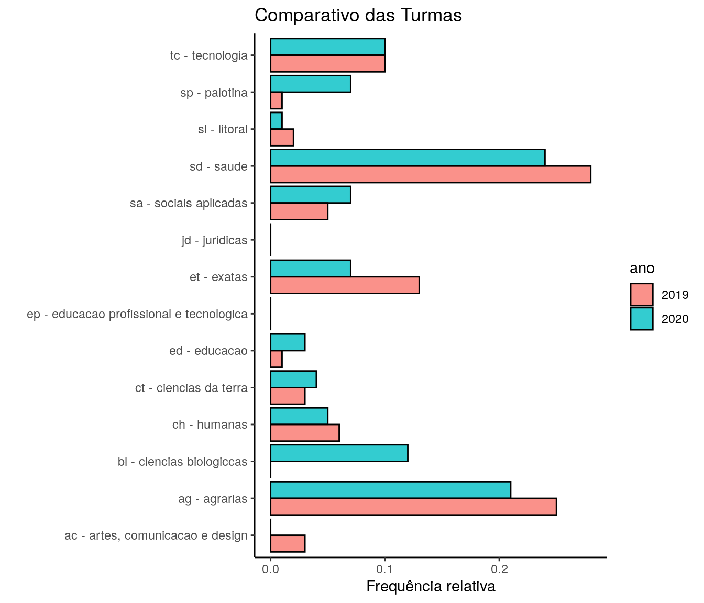
Qual sua atividade atual na sua universidade (relacionada à presença nesta disciplina)?
Tabela 1
quest$lo_ativAtuacao <- tolower(iconv(quest$lo_ativAtuacao,
to ='ASCII//TRANSLIT',
from = "UTF-8"))
fa_at <- table(quest$lo_ativAtuacao) # frequência absoluta
fr_at <- prop.table(fa_at) # frequência relativa
fac_at <- cumsum(fr_at) # frequência acumulada
at <- data.frame(niveis = names(fa_at),
freq = as.vector(fa_at),
freq_r = as.vector(fr_at),
freq_ac = as.vector(fac_at))
pander:::pander(at)| niveis | freq | freq_r | freq_ac |
|---|---|---|---|
| aluna externa no mestrado. | 1 | 0.003984 | 0.003984 |
| doutorado | 123 | 0.49 | 0.494 |
| mestrado academico | 115 | 0.4582 | 0.9522 |
| mestrado profissional | 10 | 0.03984 | 0.992 |
| professor | 2 | 0.007968 | 1 |
Tabela 2
quest$lo_ativAtuacao <- tolower(iconv(quest$lo_ativAtuacao,
to ='ASCII//TRANSLIT', from = "UTF-8"))
classOpcoes <- c("mestrado academico", "professor", "doutorado",
"mestrado profissional", "pos-doutorado")
quest$lo_ativAtuacao[ !quest$lo_ativAtuacao %in% classOpcoes ] <- "outro"
quest$lo_ativAtuacao <- factor(quest$lo_ativAtuacao,
levels = c("mestrado profissional",
"mestrado academico",
"doutorado",
"pos-doutorado", "professor", "outro"))
fa_at <- table(quest$lo_ativAtuacao) # frequência absoluta
fr_at <- prop.table(fa_at) # frequência relativa
fac_at <- cumsum(fr_at) # frequência acumulada
at <- data.frame(niveis = names(fa_at),
freq = as.vector(fa_at),
freq_r = as.vector(fr_at),
freq_ac = as.vector(fac_at))
pander:::pander(at)| niveis | freq | freq_r | freq_ac |
|---|---|---|---|
| mestrado profissional | 10 | 0.03984 | 0.03984 |
| mestrado academico | 115 | 0.4582 | 0.498 |
| doutorado | 123 | 0.49 | 0.988 |
| pos-doutorado | 0 | 0 | 0.988 |
| professor | 2 | 0.007968 | 0.996 |
| outro | 1 | 0.003984 | 1 |
Gráfico
at_ord <- arrange(at, at$freq)
barplot(at_ord$freq,
#names.arg = at_ord$niveis,
col = paleta,
main = 'Atual atividade ',
ylab = 'Frequência',
xlab = '',
ylim = c(0, max(at_ord$freq)+10)
#horiz = T,
#las=2,
)
legend("topleft",
legend = at_ord$niveis,
fill = paleta,
cex = .8)
text(x = as.vector(barplot(at_ord$freq, plot = FALSE)),
y = as.vector(at_ord$freq) + 5,
labels = at_ord$freq, cex = .8)2019
antigo$lo_ativAtuacao <- tolower(iconv(antigo$lo_ativAtuacao,
to ='ASCII//TRANSLIT', from = "UTF-8"))
classOpcoes <- c("mestrado academico", "professor", "doutorado",
"mestrado profissional", "pos-doutorado")
antigo$lo_ativAtuacao[ !antigo$lo_ativAtuacao %in% classOpcoes ] <- "outro"
antigo$lo_ativAtuacao <- factor(antigo$lo_ativAtuacao,
levels = c("mestrado profissional",
"mestrado academico",
"doutorado",
"pos-doutorado", "professor", "outro"))
fa_at <- table(antigo$lo_ativAtuacao) # frequência absoluta
fr_at <- prop.table(fa_at) # frequência relativa
fac_at <- cumsum(fr_at) # frequência acumulada
at <- data.frame(niveis = names(fa_at),
freq = as.vector(fa_at),
freq_r = as.vector(fr_at),
freq_ac = as.vector(fac_at))
#pander:::pander(at)
at_ord <- arrange(at, at$freq)
barplot(at_ord$freq,
#names.arg = at_ord$niveis,
col = paleta,
main = 'Atual atividade ',
ylab = 'Frequência',
xlab = '',
ylim = c(0, max(at_ord$freq)+10)
#horiz = T,
#las=2,
)
legend("topleft",
legend = at_ord$niveis,
fill = paleta,
cex = .8)
text(x = as.vector(barplot(at_ord$freq, plot = FALSE)),
y = as.vector(at_ord$freq) + 5,
labels = at_ord$freq, cex = .8)Em qual grande área do conhecimento sua pesquisa está inserida hoje?
Tabela
quest$ln_setorArea <- tolower(iconv(quest$ln_setorArea,
to ='ASCII//TRANSLIT',
from = "UTF-8"))
classOpcoes <- c("ciencias humanas", "ciencias exatas",
"ciencias biologicas", "nao sei")
quest$ln_setorArea[ !quest$ln_setorArea %in% classOpcoes ] <- "outro"
fa_area <- table(quest$ln_setorArea) # frequência absoluta
fr_area <- prop.table(fa_area) # frequência relativa
fac_area <- cumsum(fr_area) # frequência acumulada
area <- data.frame(niveis = names(fa_area),
freq = as.vector(fa_area),
freq_r = as.vector(fr_area),
freq_ac = as.vector(fac_area))
pander:::pander(area)| niveis | freq | freq_r | freq_ac |
|---|---|---|---|
| ciencias biologicas | 135 | 0.5378 | 0.5378 |
| ciencias exatas | 83 | 0.3307 | 0.8685 |
| ciencias humanas | 33 | 0.1315 | 1 |
Gráfico
area$niveis <- c('Biologicas', 'Exatas', 'Humanas')
area_ord <- arrange(area, area$freq)
barplot(area_ord$freq,
names.arg = area_ord$niveis,
col = '#BCF5A9',
main = 'Área do conhecimento',
ylab = 'Frequência',
xlab = '',
ylim = c(0, max(area_ord$freq)+20)
#horiz = T,
#las=2,
)
text(x = as.vector(barplot(area_ord$freq, plot = FALSE)),
y = as.vector(area_ord$freq) + 10,
labels = area_ord$freq, cex = 1.5)Em qual ano você concluiu sua graduação?
Tabela 1
fa_anog <- table(quest$tc_anoFimGrad) # frequência absoluta
fr_anog <- prop.table(fa_anog) # frequência relativa
fac_anog <- cumsum(fr_anog) # frequência acumulada
anog <- data.frame(niveis = names(fa_anog),
freq = as.vector(fa_anog),
freq_r = as.vector(fr_anog),
freq_ac = as.vector(fac_anog)) # unindo as informações
pander:::pander(anog) # gerando a tabela| niveis | freq | freq_r | freq_ac |
|---|---|---|---|
| 1989 | 1 | 0.003984 | 0.003984 |
| 1990 | 2 | 0.007968 | 0.01195 |
| 1991 | 3 | 0.01195 | 0.0239 |
| 1994 | 4 | 0.01594 | 0.03984 |
| 1997 | 1 | 0.003984 | 0.04382 |
| 1998 | 4 | 0.01594 | 0.05976 |
| 1999 | 1 | 0.003984 | 0.06375 |
| 2000 | 4 | 0.01594 | 0.07968 |
| 2001 | 4 | 0.01594 | 0.09562 |
| 2002 | 7 | 0.02789 | 0.1235 |
| 2004 | 3 | 0.01195 | 0.1355 |
| 2005 | 7 | 0.02789 | 0.1633 |
| 2006 | 4 | 0.01594 | 0.1793 |
| 2007 | 9 | 0.03586 | 0.2151 |
| 2008 | 11 | 0.04382 | 0.259 |
| 2009 | 4 | 0.01594 | 0.2749 |
| 2010 | 4 | 0.01594 | 0.2908 |
| 2011 | 7 | 0.02789 | 0.3187 |
| 2012 | 9 | 0.03586 | 0.3546 |
| 2013 | 16 | 0.06375 | 0.4183 |
| 2014 | 12 | 0.04781 | 0.4661 |
| 2015 | 20 | 0.07968 | 0.5458 |
| 2016 | 21 | 0.08367 | 0.6295 |
| 2017 | 28 | 0.1116 | 0.741 |
| 2018 | 23 | 0.09163 | 0.8327 |
| 2019 | 40 | 0.1594 | 0.992 |
| 2023 | 1 | 0.003984 | 0.996 |
| 2024 | 1 | 0.003984 | 1 |
Tabela 2
ar_anoFimGrad <- quest$tc_anoFimGrad[which(quest$tc_anoFimGrad > 1950 & quest$tc_anoFimGrad <= 2020)]
#excluindo respostas antes de 1950
h <- hist(ar_anoFimGrad, plot = FALSE) #histograma
breaks <- h$breaks #armazenando os breaks do histograma
classes <- cut(ar_anoFimGrad, breaks = breaks,
include.lowest = TRUE, right = TRUE) #gerando classes
tb.anoFimGrad <- as.data.frame(table(classes)) #gerando tabela com faixas
tb.anoFimGrad$Perc <- prop.table(tb.anoFimGrad$Freq)
names(tb.anoFimGrad)[1] <- "Ano"
pander:::pander(tb.anoFimGrad)| Ano | Freq | Perc |
|---|---|---|
| [1985,1990] | 3 | 0.01205 |
| (1990,1995] | 7 | 0.02811 |
| (1995,2000] | 10 | 0.04016 |
| (2000,2005] | 21 | 0.08434 |
| (2005,2010] | 32 | 0.1285 |
| (2010,2015] | 64 | 0.257 |
| (2015,2020] | 112 | 0.4498 |
Tabela 3
medidas <- data.frame(minimo = quantile(quest$tc_anoFimGrad)[1],
quart1 = quantile(quest$tc_anoFimGrad)[2],
media = mean(quest$tc_anoFimGrad),
mediana = quantile(quest$tc_anoFimGrad)[3],
moda = names(sort(table(quest$tc_anoFimGrad),
decreasing = TRUE)[1]),
quart3 = quantile(quest$tc_anoFimGrad)[4],
max = quantile(quest$tc_anoFimGrad)[5])
row.names(medidas) <- NULL
pander(medidas)| minimo | quart1 | media | mediana | moda | quart3 | max |
|---|---|---|---|---|---|---|
| 1989 | 2008 | 2012 | 2015 | 2019 | 2018 | 2024 |
disp <- data.frame(amplitude = diff(range(quest$tc_anoFimGrad)),
variancia = var(quest$tc_anoFimGrad),
desv_pad = sd(quest$tc_anoFimGrad),
coef_var = 100*sd(quest$tc_anoFimGrad)/mean(quest$tc_anoFimGrad))
pander(disp)| amplitude | variancia | desv_pad | coef_var |
|---|---|---|---|
| 35 | 49.93 | 7.066 | 0.3511 |
Gráfico 1
Variável sem tratamento
quest$tc_anoFimGrad <- as.integer(quest$tc_anoFimGrad)
plot(table(quest$tc_anoFimGrad),
t = "h", xlab = "Ano", ylab = "Frequência", lwd = 3,
cex.axis = 0.8, las = 2,
main = "Ano de Conclusão da Graduação")
Gráfico 2
Variável com tratamento
plot(table(ar_anoFimGrad),
t = "h", xlab = "Ano", ylab = "Frequência", lwd = 3,
cex.axis = 0.8, las = 2,
main = "Ano de Conclusão da Graduação")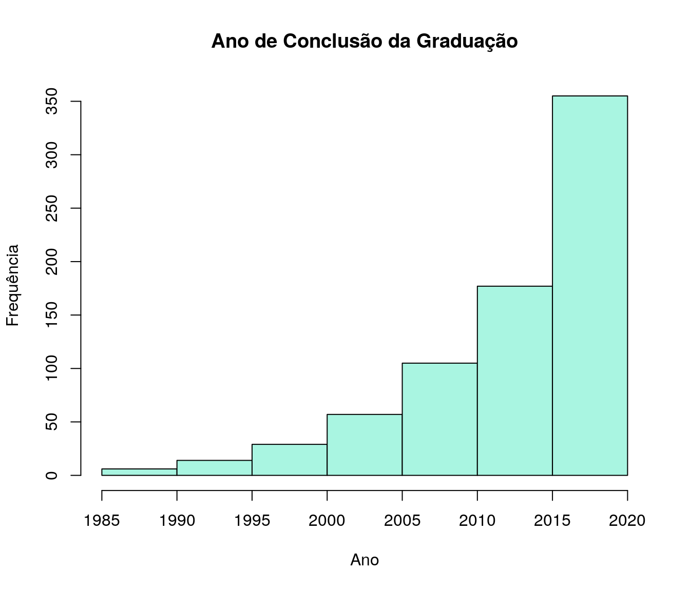
Gráfico 3
hist(ar_anoFimGrad, breaks = breaks, include.lowest = TRUE,
col = "#A9F5E1",
main = "Ano de Conclusão da Graduação", xlab = "Ano",
ylab = "Frequência")Gráfico 4
par(mfrow = c(2,1))
boxplot(ar_anoFimGrad, horizontal=T, col = "#A9D0F5", width = 1,
main = "Ano de Conclusão da Graduação")
boxplot(ar_anoFimGrad, horizontal=T, width = 1, col = "#A9D0F5")
stripchart(ar_anoFimGrad, vertical=F, add=T, method="jitter", pch=19, cex=0.5, jitter=0.3)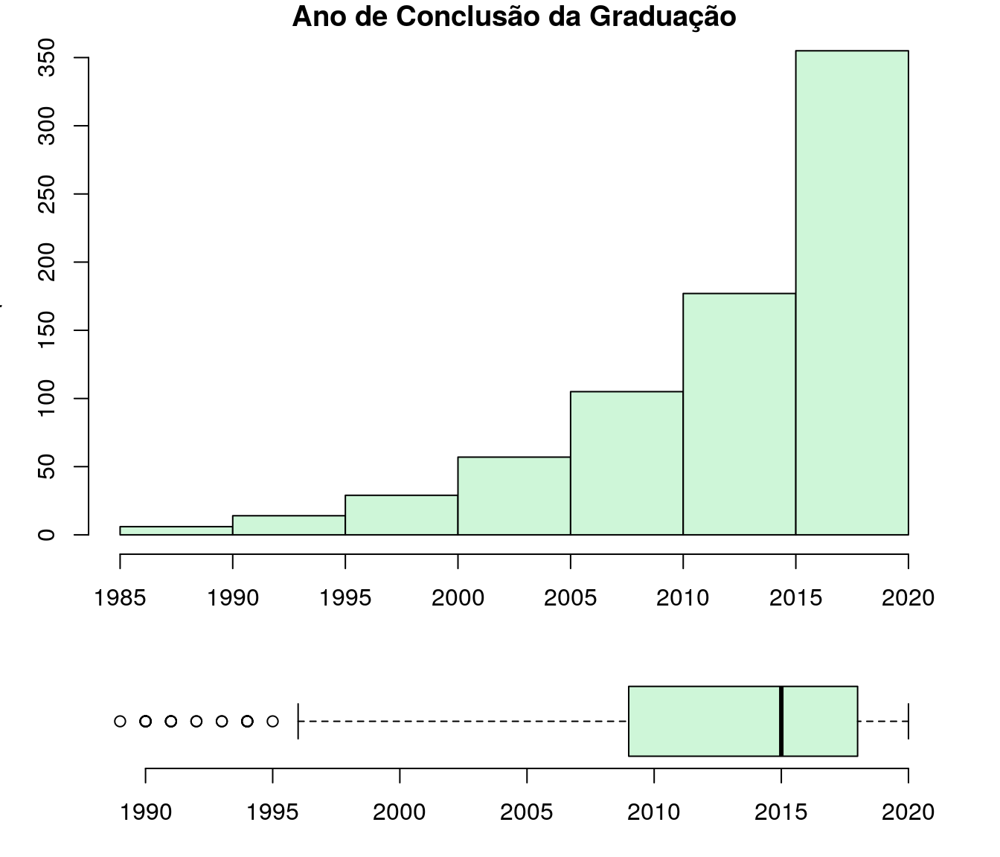
Gráfico 5
layout(mat = matrix(c(1,2),2,1, byrow=TRUE), height = c(3,1))
par(mar=c(3.1, 3.1, 1.1, 2.1))
hist(ar_anoFimGrad,col = "#CEF6D8",
main = "Ano de Conclusão da Graduação",
xlab = "Ano",
ylab = "Frequência")
boxplot(ar_anoFimGrad,
horizontal=TRUE,
outline=TRUE,
frame=F,
col = "#CEF6D8",
width = 10)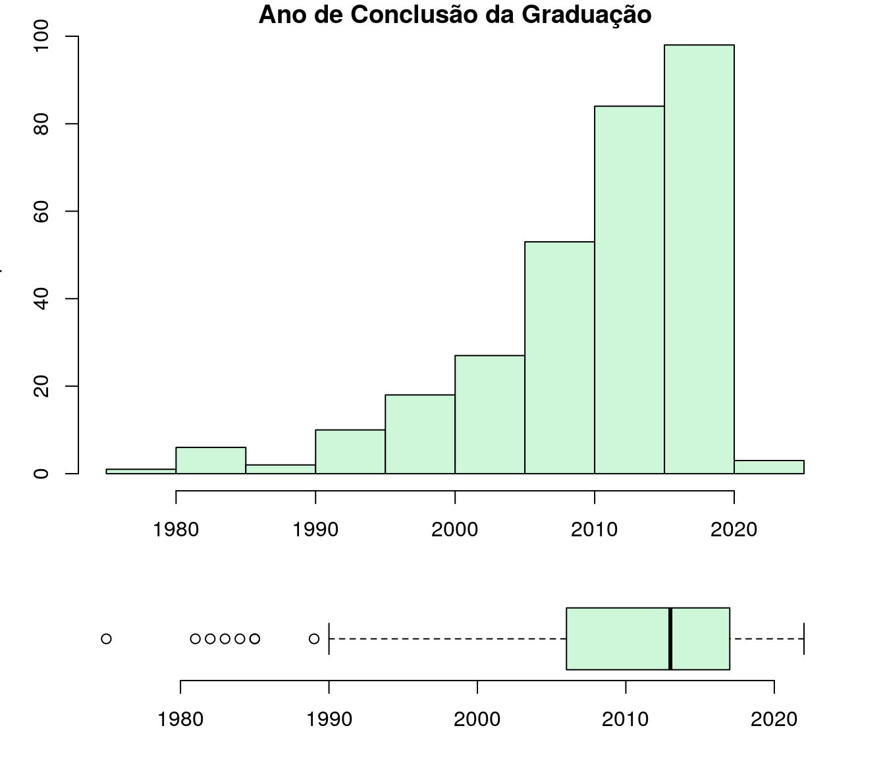
2019
ar_anoFimGrad <- antigo$tc_anoFimGrad[which(antigo$tc_anoFimGrad > 1950)]
#excluindo respostas antes de 1950
h <- hist(ar_anoFimGrad, plot = FALSE) #histograma
breaks <- h$breaks #armazenando os breaks do histograma
classes <- cut(ar_anoFimGrad, breaks = breaks,
include.lowest = TRUE, right = TRUE) #gerando classes
tb.anoFimGrad <- as.data.frame(table(classes)) #gerando tabela com faixas
tb.anoFimGrad$Perc <- prop.table(tb.anoFimGrad$Freq)
names(tb.anoFimGrad)[1] <- "Ano"
#pander:::pander(tb.anoFimGrad)
layout(mat = matrix(c(1,2),2,1, byrow=TRUE), height = c(3,1))
par(mar=c(3.1, 3.1, 1.1, 2.1))
hist(ar_anoFimGrad,col = "#CEF6D8",
main = "Ano de Conclusão da Graduação",
xlab = "Ano",
ylab = "Frequência")
boxplot(ar_anoFimGrad,
horizontal=TRUE,
outline=TRUE,
frame=F,
col = "#CEF6D8",
width = 10)
Em qual instituição você concluiu sua graduação?
Tabela
quest$ln_localGrad <- tolower(iconv(quest$ln_localGrad,
to ='ASCII//TRANSLIT', from = "UTF-8"))
classOpcoes <- tolower(c('UEL', 'UEM', 'UEPG', "UNIOESTE",
"UNICENTRO", "UENP", "UNILA",
"IFPR", "UTFPR", "UFPR"))
quest$ln_localGrad[ !quest$ln_localGrad %in% classOpcoes ] <- "outro"
quest$ln_localGrad <- factor(quest$ln_localGrad,
levels = tolower(c('UEL', 'UEM', 'UEPG',
"UNIOESTE",
"UNICENTRO", "UENP",
"UNILA", "IFPR",
"UTFPR", "UFPR",
"OUTRO")))
fa_loc <- table(quest$ln_localGrad) # frequência absoluta
fr_loc <- prop.table(fa_loc) # frequência relativa
fac_loc <- cumsum(fr_loc) # frequência acumulada
loc <- data.frame(niveis = names(fa_loc),
freq = as.vector(fa_loc),
freq_r = as.vector(fr_loc),
freq_ac = as.vector(fac_loc)) # unindo as informações
pander:::pander(loc) # gerando a tabela| niveis | freq | freq_r | freq_ac |
|---|---|---|---|
| uel | 2 | 0.007968 | 0.007968 |
| uem | 1 | 0.003984 | 0.01195 |
| uepg | 29 | 0.1155 | 0.1275 |
| unioeste | 10 | 0.03984 | 0.1673 |
| unicentro | 13 | 0.05179 | 0.2191 |
| uenp | 1 | 0.003984 | 0.2231 |
| unila | 2 | 0.007968 | 0.2311 |
| ifpr | 0 | 0 | 0.2311 |
| utfpr | 14 | 0.05578 | 0.2869 |
| ufpr | 52 | 0.2072 | 0.494 |
| outro | 127 | 0.506 | 1 |
Gráfico
loc_ord <- arrange(loc, loc$freq)
barplot(loc_ord$freq, col = '#BEF781',
names.arg = loc_ord$niveis, horiz = T,
xlim = c(0, max(loc_ord$freq + 10)),
main = "Graduação",
las = 2)
text(y = as.vector(barplot(loc_ord$freq, plot = FALSE)),
x = as.vector(loc_ord$freq) + 5,
labels = loc_ord$freq, cex = .8)
abline(v=50, lty=3, col = 2)
abline(v=100, lty=3, col = 2)
abline(v=150, lty=3, col = 2)
abline(v=200, lty=3, col = 2)
abline(v=250, lty=3, col = 2)
abline(v=300, lty=3, col = 2)
2019
antigo$ln_localGrad <- tolower(iconv(antigo$ln_localGrad,
to ='ASCII//TRANSLIT', from = "UTF-8"))
classOpcoes <- tolower(c('UEL', 'UEM', 'UEPG', "UNIOESTE",
"UNICENTRO", "UENP", "UNILA",
"IFPR", "UTFPR", "UFPR"))
antigo$ln_localGrad[ !antigo$ln_localGrad %in% classOpcoes ] <- "outro"
antigo$ln_localGrad <- factor(antigo$ln_localGrad,
levels = tolower(c('UEL', 'UEM', 'UEPG',
"UNIOESTE",
"UNICENTRO", "UENP",
"UNILA", "IFPR",
"UTFPR", "UFPR",
"OUTRO")))
fa_loc <- table(antigo$ln_localGrad) # frequência absoluta
fr_loc <- prop.table(fa_loc) # frequência relativa
fac_loc <- cumsum(fr_loc) # frequência acumulada
loc <- data.frame(niveis = names(fa_loc),
freq = as.vector(fa_loc),
freq_r = as.vector(fr_loc),
freq_ac = as.vector(fac_loc)) # unindo as informações
#pander:::pander(loc) # gerando a tabela
loc_ord <- arrange(loc, loc$freq)
barplot(loc_ord$freq, col = '#BEF781',
names.arg = loc_ord$niveis, horiz = T,
xlim = c(0, max(loc_ord$freq + 10)),
main = "Graduação",
las = 2)
text(y = as.vector(barplot(loc_ord$freq, plot = FALSE)),
x = as.vector(loc_ord$freq) + 5,
labels = loc_ord$freq, cex = .8)
abline(v=50, lty=3, col = 2)
abline(v=100, lty=3, col = 2)
abline(v=150, lty=3, col = 2)
abline(v=200, lty=3, col = 2)
abline(v=250, lty=3, col = 2)
abline(v=300, lty=3, col = 2)
De quais programas de graduação você participou?
Tabela
quest$ln_progGrad <- tolower(iconv(quest$ln_progGrad,
to ='ASCII//TRANSLIT',
from = "UTF-8"))
quest$ln_progGrad <- ifelse(quest$ln_progGrad == "", NA, quest$ln_progGrad)
quest$ln_progGrad <- gsub(",",";",quest$ln_progGrad)
ar_progGrad <- cSplit(quest, "ln_progGrad", sep = ";",
direction = "long")$ln_progGrad
ar_progGrad <- as.character(ar_progGrad)
ar_progGrad[ which(is.na(ar_progGrad)) ] <- "nenhum"
classOpcoes <- c("iniciacao cientifica",
"pet",
"monitoria",
"projeto de extensao",
"empresa junior",
"nenhum")
ar_progGrad[ !ar_progGrad %in% classOpcoes ] <- "outro"
ar_progGrad <- as.factor(ar_progGrad)
ar_progGrad <- factor(ar_progGrad,
levels = c("iniciacao cientifica",
"pet", "monitoria",
"projeto de extensao",
"empresa junior",
"outro", "nenhum"))
fa_prog <- table(ar_progGrad) # frequência absoluta
fr_prog <- prop.table(fa_prog) # frequência relativa
fac_prog <- cumsum(fr_prog) # frequência acumulada
prog <- data.frame(niveis = names(fa_prog),
freq = as.vector(fa_prog),
freq_r = as.vector(fr_prog),
freq_ac = as.vector(fac_prog)) # unindo as informações
pander:::pander(prog) # gerando a tabela| niveis | freq | freq_r | freq_ac |
|---|---|---|---|
| iniciacao cientifica | 132 | 0.2953 | 0.2953 |
| pet | 16 | 0.03579 | 0.3311 |
| monitoria | 115 | 0.2573 | 0.5884 |
| projeto de extensao | 110 | 0.2461 | 0.8345 |
| empresa junior | 7 | 0.01566 | 0.8501 |
| outro | 14 | 0.03132 | 0.8814 |
| nenhum | 53 | 0.1186 | 1 |
Gráfico
prog_ord <- arrange(prog, prog$freq)
bp <- barplot(prog_ord$freq,
#names.arg = at_ord$niveis,
col = paleta,
main = 'Programas',
ylab = 'Frequência',
xlab = 'Programas',
ylim = c(0,max(prog_ord$freq+50))
#horiz = T,
#las=2,
)
legend("topleft",
legend = prog_ord$niveis,
fill = paleta,
cex = .8)
text(x = c(bp),
y = prog_ord$freq,
labels = prog_ord$freq,
pos = 3)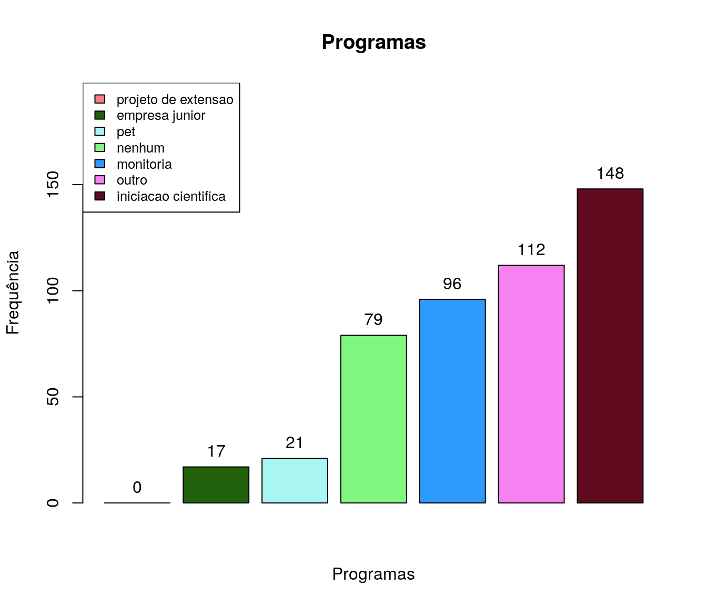
2019
antigo$ln_progGrad <- tolower(iconv(antigo$ln_progGrad,
to ='ASCII//TRANSLIT',
from = "UTF-8"))
antigo$ln_progGrad <- ifelse(antigo$ln_progGrad == "", NA, antigo$ln_progGrad)
antigo$ln_progGrad <- gsub(",",";",antigo$ln_progGrad)
ar_progGrad <- cSplit(antigo, "ln_progGrad", sep = ";",
direction = "long")$ln_progGrad
ar_progGrad <- as.character(ar_progGrad)
ar_progGrad[ which(is.na(ar_progGrad)) ] <- "nenhum"
classOpcoes <- c("iniciacao cientifica",
"pet",
"monitoria",
"projeto de extensao",
"empresa junior",
"nenhum")
ar_progGrad[ !ar_progGrad %in% classOpcoes ] <- "outro"
ar_progGrad <- as.factor(ar_progGrad)
ar_progGrad <- factor(ar_progGrad,
levels = c("iniciacao cientifica",
"pet", "monitoria",
"projeto de extensao",
"empresa junior",
"outro", "nenhum"))
fa_prog <- table(ar_progGrad) # frequência absoluta
fr_prog <- prop.table(fa_prog) # frequência relativa
fac_prog <- cumsum(fr_prog) # frequência acumulada
prog <- data.frame(niveis = names(fa_prog),
freq = as.vector(fa_prog),
freq_r = as.vector(fr_prog),
freq_ac = as.vector(fac_prog)) # unindo as informações
#pander:::pander(prog) # gerando a tabela
prog_ord <- arrange(prog, prog$freq)
bp <- barplot(prog_ord$freq,
#names.arg = at_ord$niveis,
col = paleta,
main = 'Programas',
ylab = 'Frequência',
xlab = 'Programas',
ylim = c(0,max(prog_ord$freq+50))
#horiz = T,
#las=2,
)
legend("topleft",
legend = prog_ord$niveis,
fill = paleta,
cex = .8)
text(x = c(bp),
y = prog_ord$freq,
labels = prog_ord$freq,
pos = 3)
Comparativo 1
# 2020
quest$ln_progGrad <- tolower(iconv(quest$ln_progGrad,
to ='ASCII//TRANSLIT',
from = "UTF-8"))
quest$ln_progGrad <- ifelse(quest$ln_progGrad == "", NA, quest$ln_progGrad)
quest$ln_progGrad <- gsub(",",";",quest$ln_progGrad)
ar_progGrad <- cSplit(quest, "ln_progGrad", sep = ";",
direction = "long")$ln_progGrad
ar_progGrad <- as.character(ar_progGrad)
ar_progGrad[ which(is.na(ar_progGrad)) ] <- "nenhum"
classOpcoes <- c("iniciacao cientifica",
"pet",
"monitoria",
"projeto de extensao",
"empresa junior",
"nenhum")
ar_progGrad[ !ar_progGrad %in% classOpcoes ] <- "outro"
ar_progGrad <- as.factor(ar_progGrad)
ar_progGrad <- factor(ar_progGrad,
levels = c("iniciacao cientifica",
"pet", "monitoria",
"projeto de extensao",
"empresa junior",
"outro", "nenhum"))
fa_prog <- table(ar_progGrad) # frequência absoluta
fr_prog <- prop.table(fa_prog) # frequência relativa
#fac_prog <- cumsum(fr_prog) # frequência acumulada
prog <- data.frame(niveis = names(fr_prog),
#freq = as.vector(fa_prog),
freq_r = as.vector(fr_prog),
ano = rep(2020,length(fr_prog))) # unindo as informações
# 2019
antigo$ln_progGrad <- tolower(iconv(antigo$ln_progGrad,
to ='ASCII//TRANSLIT',
from = "UTF-8"))
antigo$ln_progGrad <- ifelse(antigo$ln_progGrad == "", NA, antigo$ln_progGrad)
antigo$ln_progGrad <- gsub(",",";",antigo$ln_progGrad)
ar_progGrad <- cSplit(antigo, "ln_progGrad", sep = ";",
direction = "long")$ln_progGrad
ar_progGrad <- as.character(ar_progGrad)
ar_progGrad[ which(is.na(ar_progGrad)) ] <- "nenhum"
classOpcoes <- c("iniciacao cientifica",
"pet",
"monitoria",
"projeto de extensao",
"empresa junior",
"nenhum")
ar_progGrad[ !ar_progGrad %in% classOpcoes ] <- "outro"
ar_progGrad <- as.factor(ar_progGrad)
ar_progGrad <- factor(ar_progGrad,
levels = c("iniciacao cientifica",
"pet", "monitoria",
"projeto de extensao",
"empresa junior",
"outro", "nenhum"))
fa_prog <- table(ar_progGrad) # frequência absoluta
fr_prog <- prop.table(fa_prog) # frequência relativa
#fac_prog <- cumsum(fr_prog) # frequência acumulada
prog2 <- data.frame(niveis = names(fr_prog),
#freq = as.vector(fa_prog),
freq_r = as.vector(fr_prog),
ano = rep(2019,length(fr_prog))) # unindo as informações
prog[8:14,] <- prog2
prog$ano <- as.factor(prog$ano)
ggplot(prog,
aes(x=niveis, y=freq_r, fill=ano)) +
geom_bar(stat="identity", alpha = 0.8, col = 1) +
xlab("") + ylab("Frequência relativa") + theme_classic()+
coord_flip() + ggtitle("Comparativo das Turmas")
Se você já concluiu o mestrado, qual o ano de início do mestrado? E qual o ano de conclusão do seu mestrado?
Tabela
qtddFimMestrado <- sum(at$freq) - sum(at$freq[unique(at$niveis) == c("mestrado profissional", "mestrado academico")])
quest$tc_inicMest <- as.integer(quest$tc_inicMest)
quest$tc_fimMest <- as.integer(quest$tc_fimMest)
indices <- which(!(is.na(quest$tc_inicMest) | is.na(quest$tc_fimMest)))
tempoMest <- quest$tc_fimMest[indices] - quest$tc_inicMest[indices]
tempoMestValido <- tempoMest[which(tempoMest > 0)]
tb.tempoMest <- as.data.frame(table(tempoMestValido))
tb.tempoMest$Perc <- 100 * prop.table(tb.tempoMest$Freq)
names(tb.tempoMest)[1] <- "Duração do Mestrado"
pander:::pander(tb.tempoMest)| Duração do Mestrado | Freq | Perc |
|---|---|---|
| 1 | 7 | 5.645 |
| 2 | 111 | 89.52 |
| 3 | 6 | 4.839 |
pander:::pander(cat( "Note que pela 1a pergunta do questionário, temos ",
qtddFimMestrado,
" alunos que já terminaram o Mestrado. Pelas respostas válidas, temos ",
length(tempoMestValido), "alunos que concluíram o Mestrado."))Note que pela 1a pergunta do questionário, temos 159 alunos que já terminaram o Mestrado. Pelas respostas válidas, temos 124 alunos que concluíram o Mestrado.
Gráfico
plot(table(tempoMestValido), t = "h", xlab = "Duração", ylab = "Frequência", lwd = 6,
cex.axis = 0.8, main = "Duração do Mestrado")
2019
qtddFimMestrado <- sum(at$freq) - sum(at$freq[unique(at$niveis) == c("mestrado profissional", "mestrado academico")])
antigo$tc_inicMest <- as.integer(antigo$tc_inicMest)
antigo$tc_fimMest <- as.integer(antigo$tc_fimMest)
indices <- which(!(is.na(antigo$tc_inicMest) | is.na(antigo$tc_fimMest)))
tempoMest <- antigo$tc_fimMest[indices] - antigo$tc_inicMest[indices]
tempoMestValido <- tempoMest[which(tempoMest > 0)]
tb.tempoMest <- as.data.frame(table(tempoMestValido))
tb.tempoMest$Perc <- 100 * prop.table(tb.tempoMest$Freq)
names(tb.tempoMest)[1] <- "Duração do Mestrado"
#pander:::pander(tb.tempoMest)
plot(table(tempoMestValido), t = "h", xlab = "Duração", ylab = "Frequência", lwd = 6,
cex.axis = 0.8, main = "Duração do Mestrado")
Em qual instituição você fez seu mestrado?
Tabela 1
Todas as respostas
quest$ln_localMest <- tolower(iconv(quest$ln_localMest,
to ='ASCII//TRANSLIT',
from = "UTF-8"))
classOpcoes <- tolower(c('UEL', 'UEM', 'UEPG', "UNIOESTE",
"UNICENTRO", "UENP", "UNILA",
"IFPR", "UTFPR", "UFPR", ""))
quest$ln_localMest[ !quest$ln_localMest %in% classOpcoes ] <- "outro"
quest$ln_localMest <- factor(quest$ln_localMest,
levels = tolower(c('UEL', 'UEM', 'UEPG',
"UNIOESTE",
"UNICENTRO", "UENP",
"UNILA", "IFPR",
"UTFPR", "UFPR",
"OUTRO")))
fa_lmest <- table(quest$ln_localMest) # frequência absoluta
fr_lmest <- prop.table(fa_lmest) # frequência relativa
fac_lmest <- cumsum(fr_lmest) # frequência acumulada
lmest <- data.frame(niveis = names(fa_lmest),
freq = as.vector(fa_lmest),
freq_r = as.vector(fr_lmest),
freq_ac = as.vector(fac_lmest)) # unindo as informações
pander:::pander(lmest) # gerando a tabela| niveis | freq | freq_r | freq_ac |
|---|---|---|---|
| uel | 1 | 0.007463 | 0.007463 |
| uem | 4 | 0.02985 | 0.03731 |
| uepg | 15 | 0.1119 | 0.1493 |
| unioeste | 9 | 0.06716 | 0.2164 |
| unicentro | 10 | 0.07463 | 0.291 |
| uenp | 0 | 0 | 0.291 |
| unila | 1 | 0.007463 | 0.2985 |
| ifpr | 0 | 0 | 0.2985 |
| utfpr | 3 | 0.02239 | 0.3209 |
| ufpr | 56 | 0.4179 | 0.7388 |
| outro | 35 | 0.2612 | 1 |
Tabela 2
Respostas válidas
quest$ln_localMest <- tolower(iconv(quest$ln_localMest,
to ='ASCII//TRANSLIT',
from = "UTF-8"))
classOpcoes <- tolower(c('UEL', 'UEM', 'UEPG', "UNIOESTE",
"UNICENTRO", "UENP", "UNILA",
"IFPR", "UTFPR", "UFPR", ""))
quest$ln_localMest[ !quest$ln_localMest %in% classOpcoes ] <- "outro"
quest$ln_localMest <- factor(quest$ln_localMest,
levels = tolower(c('UEL', 'UEM', 'UEPG',
"UNIOESTE",
"UNICENTRO", "UENP",
"UNILA", "IFPR",
"UTFPR", "UFPR",
"OUTRO")))
quest_mest <- subset(quest, quest$tc_fimMest <= 2020)
fa_lmest <- table(quest_mest$ln_localMest) # frequência absoluta
fr_lmest <- prop.table(fa_lmest) # frequência relativa
fac_lmest <- cumsum(fr_lmest) # frequência acumulada
lmest <- data.frame(niveis = names(fa_lmest),
freq = as.vector(fa_lmest),
freq_r = as.vector(fr_lmest),
freq_ac = as.vector(fac_lmest)) # unindo as informações
pander:::pander(lmest) # gerando a tabela| niveis | freq | freq_r | freq_ac |
|---|---|---|---|
| uel | 1 | 0.008 | 0.008 |
| uem | 4 | 0.032 | 0.04 |
| uepg | 14 | 0.112 | 0.152 |
| unioeste | 9 | 0.072 | 0.224 |
| unicentro | 10 | 0.08 | 0.304 |
| uenp | 0 | 0 | 0.304 |
| unila | 1 | 0.008 | 0.312 |
| ifpr | 0 | 0 | 0.312 |
| utfpr | 3 | 0.024 | 0.336 |
| ufpr | 46 | 0.368 | 0.704 |
| outro | 37 | 0.296 | 1 |
Gráfico
lmest_ord <- arrange(lmest, lmest$freq)
barplot(lmest_ord$freq, col = '#D0A9F5',
names.arg = lmest_ord$niveis, horiz = T,
xlim = c(0, max(lmest_ord$freq + 10)),
main = "Instituição em que fez o mestrado",
las = 2)
text(y = as.vector(barplot(lmest_ord$freq, plot = FALSE)),
x = as.vector(lmest_ord$freq) + 5,
labels = lmest_ord$freq, cex = .8)
abline(v=50, lty=3, col = 2)
abline(v=100, lty=3, col = 2)
abline(v=150, lty=3, col = 2)
abline(v=200, lty=3, col = 2)
abline(v=250, lty=3, col = 2)
abline(v=300, lty=3, col = 2)
2019
antigo$ln_localMest <- tolower(iconv(antigo$ln_localMest,
to ='ASCII//TRANSLIT',
from = "UTF-8"))
classOpcoes <- tolower(c('UEL', 'UEM', 'UEPG', "UNIOESTE",
"UNICENTRO", "UENP", "UNILA",
"IFPR", "UTFPR", "UFPR", ""))
antigo$ln_localMest[ !antigo$ln_localMest %in% classOpcoes ] <- "outro"
antigo$ln_localMest <- factor(antigo$ln_localMest,
levels = tolower(c('UEL', 'UEM', 'UEPG',
"UNIOESTE",
"UNICENTRO", "UENP",
"UNILA", "IFPR",
"UTFPR", "UFPR",
"OUTRO")))
antigo_mest <- subset(antigo, antigo$tc_fimMest <= 2020)
fa_lmest <- table(antigo_mest$ln_localMest) # frequência absoluta
fr_lmest <- prop.table(fa_lmest) # frequência relativa
fac_lmest <- cumsum(fr_lmest) # frequência acumulada
lmest <- data.frame(niveis = names(fa_lmest),
freq = as.vector(fa_lmest),
freq_r = as.vector(fr_lmest),
freq_ac = as.vector(fac_lmest)) # unindo as informações
#pander:::pander(lmest) # gerando a tabela
lmest_ord <- arrange(lmest, lmest$freq)
barplot(lmest_ord$freq, col = '#D0A9F5',
names.arg = lmest_ord$niveis, horiz = T,
xlim = c(0, max(lmest_ord$freq + 10)),
main = "Instituição em que fez o mestrado",
las = 2)
text(y = as.vector(barplot(lmest_ord$freq, plot = FALSE)),
x = as.vector(lmest_ord$freq) + 5,
labels = lmest_ord$freq, cex = .8)
abline(v=50, lty=3, col = 2)
abline(v=100, lty=3, col = 2)
abline(v=150, lty=3, col = 2)
abline(v=200, lty=3, col = 2)
abline(v=250, lty=3, col = 2)
abline(v=300, lty=3, col = 2)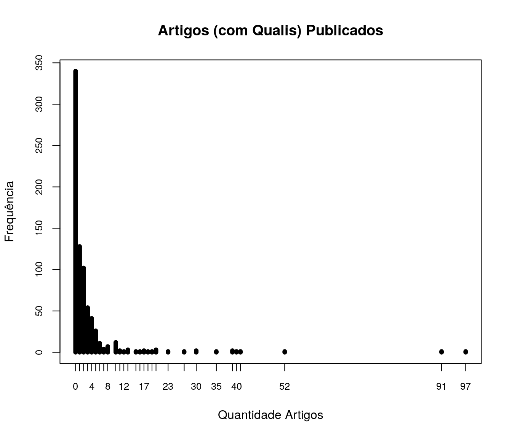
Quantos artigos (com qualis) você já publicou?
Tabela 1
quest$td_artigo <- as.integer(quest$td_artigo)
h <- hist(quest$td_artigo, plot = FALSE)
breaks <- h$breaks
classes <- cut(quest$td_artigo, breaks = breaks,
include.lowest = TRUE, right = TRUE)
tb.artigo <- as.data.frame(table(classes))
tb.artigo$Perc <- 100 * prop.table(tb.artigo$Freq)
names(tb.artigo)[1] <- "Quantidade Artigos"
pander:::pander(tb.artigo)| Quantidade Artigos | Freq | Perc |
|---|---|---|
| [0,5] | 230 | 91.63 |
| (5,10] | 14 | 5.578 |
| (10,15] | 2 | 0.7968 |
| (15,20] | 2 | 0.7968 |
| (20,25] | 1 | 0.3984 |
| (25,30] | 0 | 0 |
| (30,35] | 0 | 0 |
| (35,40] | 1 | 0.3984 |
| (40,45] | 1 | 0.3984 |
Tabela 2
medidas <- data.frame(minimo = quantile(quest$td_artigo)[1],
quart1 = quantile(quest$td_artigo)[2],
media = mean(quest$td_artigo),
mediana = quantile(quest$td_artigo)[3],
moda = names(sort(table(quest$td_artigo),
decreasing = TRUE)[1]),
quart3 = quantile(quest$td_artigo)[4],
max = quantile(quest$td_artigo)[5])
row.names(medidas) <- NULL
pander(medidas)| minimo | quart1 | media | mediana | moda | quart3 | max |
|---|---|---|---|---|---|---|
| 0 | 0 | 2.151 | 1 | 0 | 2 | 41 |
disp <- data.frame(amplitude = diff(range(quest$td_artigo)),
variancia = var(quest$td_artigo),
desv_pad = sd(quest$td_artigo),
coef_var = 100*sd(quest$td_artigo)/mean(quest$td_artigo))
pander(disp)| amplitude | variancia | desv_pad | coef_var |
|---|---|---|---|
| 41 | 20.57 | 4.535 | 210.8 |
Gráfico 1
plot(table(quest$td_artigo), t = "h", xlab = "Quantidade Artigos",
ylab = "Frequência", lwd = 6,
cex.axis = 0.8,
main = "Artigos (com Qualis) Publicados")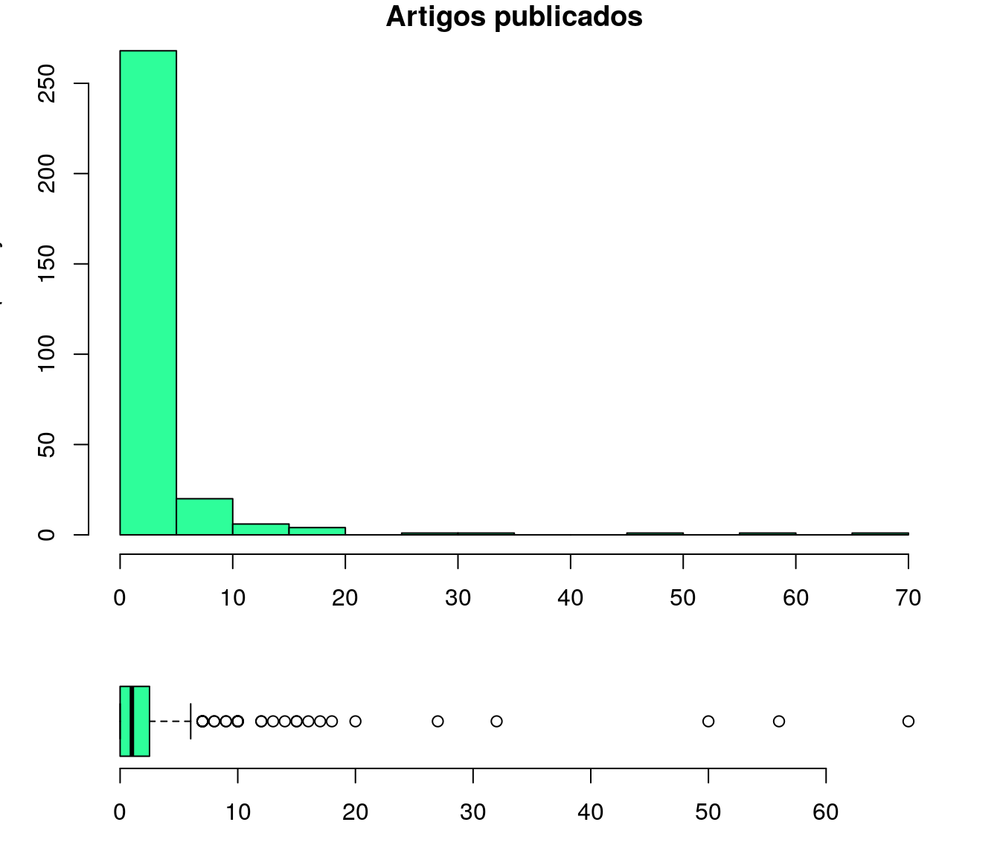
Gráfico 2
hist(quest$td_artigo, breaks = breaks, include.lowest = TRUE,
col = "#2EFE9A",
main = "Artigos Publicados", xlab = "Quant.", ylab = "Frequência")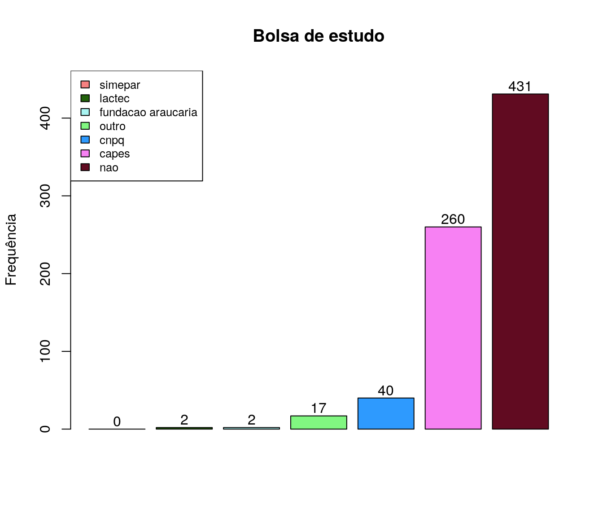
Gráfico 3
layout(mat = matrix(c(1,2),2,1, byrow=TRUE), height = c(3,1))
par(mar=c(3.1, 3.1, 1.1, 2.1))
hist(quest$td_artigo,col = "#2EFE9A", main = "Artigos publicados")
boxplot(quest$td_artigo, horizontal=TRUE,
outline=TRUE,
frame=F,
col = "#2EFE9A",
width = 10)
2019
antigo$td_artigo <- as.integer(antigo$td_artigo)
h <- hist(antigo$td_artigo, plot = FALSE)
breaks <- h$breaks
classes <- cut(antigo$td_artigo, breaks = breaks,
include.lowest = TRUE, right = TRUE)
tb.artigo <- as.data.frame(table(classes))
tb.artigo$Perc <- 100 * prop.table(tb.artigo$Freq)
names(tb.artigo)[1] <- "Quantidade Artigos"
#pander:::pander(tb.artigo)
layout(mat = matrix(c(1,2),2,1, byrow=TRUE), height = c(3,1))
par(mar=c(3.1, 3.1, 1.1, 2.1))
hist(antigo$td_artigo,col = "#2EFE9A", main = "Artigos publicados")
boxplot(antigo$td_artigo, horizontal=TRUE,
outline=TRUE,
frame=F,
col = "#2EFE9A",
width = 10)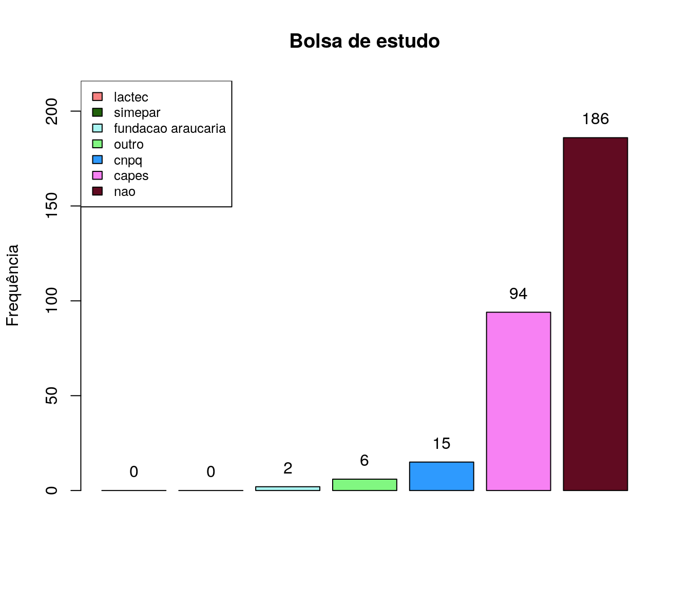
Você é bolsista remunerado de algum programa?
Tabela
quest$ln_bolsaEstudo <- tolower(iconv(quest$ln_bolsaEstudo,
to ='ASCII//TRANSLIT',
from = "UTF-8"))
classOpcoes <- c("nao", "capes", "cnpq","lactec",
"simepar", "fundacao araucaria")
quest$ln_bolsaEstudo[ !quest$ln_bolsaEstudo %in% classOpcoes ] <- "outro"
quest$ln_bolsaEstudo <- factor(quest$ln_bolsaEstudo,
levels = c("nao", "capes", "cnpq","lactec",
"simepar", "fundacao araucaria",
"outro"))
fa_bolsa <- table(quest$ln_bolsaEstudo) # frequência absoluta
fr_bolsa <- prop.table(fa_bolsa) # frequência relativa
fac_bolsa <- cumsum(fr_bolsa) # frequência acumulada
bolsa <- data.frame(niveis = names(fa_bolsa),
freq = as.vector(fa_bolsa),
freq_r = as.vector(fr_bolsa),
freq_ac = as.vector(fac_bolsa)) # unindo as informações
pander:::pander(bolsa) # gerando a tabela| niveis | freq | freq_r | freq_ac |
|---|---|---|---|
| nao | 156 | 0.6215 | 0.6215 |
| capes | 73 | 0.2908 | 0.9124 |
| cnpq | 14 | 0.05578 | 0.9681 |
| lactec | 1 | 0.003984 | 0.9721 |
| simepar | 0 | 0 | 0.9721 |
| fundacao araucaria | 0 | 0 | 0.9721 |
| outro | 7 | 0.02789 | 1 |
Gráfico
bolsa_ord <- arrange(bolsa, bolsa$freq)
barplot(bolsa_ord$freq,
#names.arg = bolsa_ord$niveis,
col = paleta,
main = 'Bolsa de estudo',
ylab = 'Frequência',
xlab = '',
ylim = c(0, max(bolsa_ord$freq)+10)
#horiz = T,
#las=2,
)
legend("topleft",
legend = bolsa_ord$niveis,
fill = paleta,
cex = .8)
text(x = as.vector(barplot(bolsa_ord$freq, plot = FALSE)),
y = as.vector(bolsa_ord$freq) + 5,
labels = bolsa_ord$freq, cex = 1)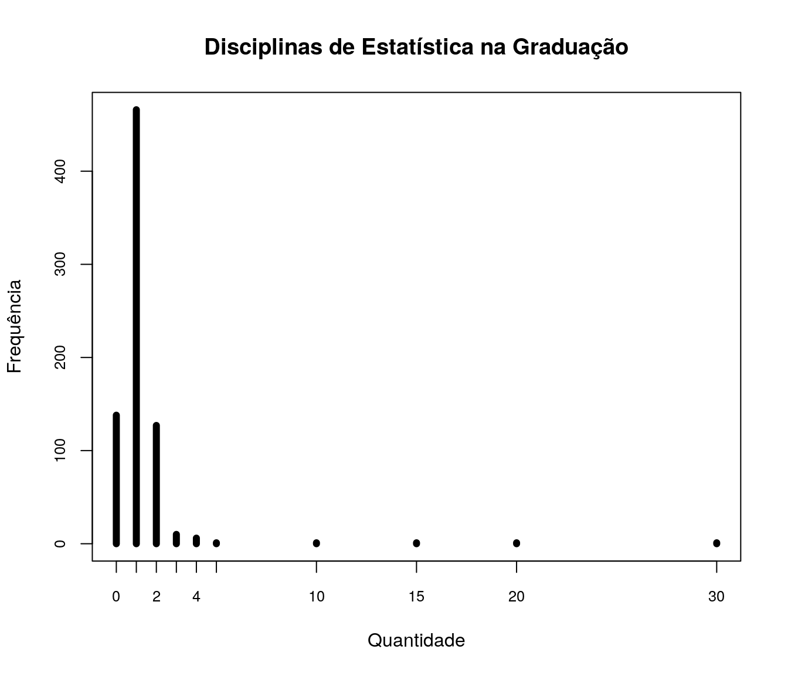
2019
antigo$ln_bolsaEstudo <- tolower(iconv(antigo$ln_bolsaEstudo,
to ='ASCII//TRANSLIT',
from = "UTF-8"))
classOpcoes <- c("nao", "capes", "cnpq","lactec",
"simepar", "fundacao araucaria")
antigo$ln_bolsaEstudo[ !antigo$ln_bolsaEstudo %in% classOpcoes ] <- "outro"
antigo$ln_bolsaEstudo <- factor(antigo$ln_bolsaEstudo,
levels = c("nao", "capes", "cnpq","lactec",
"simepar", "fundacao araucaria",
"outro"))
fa_bolsa <- table(antigo$ln_bolsaEstudo) # frequência absoluta
fr_bolsa <- prop.table(fa_bolsa) # frequência relativa
fac_bolsa <- cumsum(fr_bolsa) # frequência acumulada
bolsa <- data.frame(niveis = names(fa_bolsa),
freq = as.vector(fa_bolsa),
freq_r = as.vector(fr_bolsa),
freq_ac = as.vector(fac_bolsa)) # unindo as informações
#pander:::pander(bolsa) # gerando a tabela
bolsa_ord <- arrange(bolsa, bolsa$freq)
barplot(bolsa_ord$freq,
#names.arg = bolsa_ord$niveis,
col = paleta,
main = 'Bolsa de estudo',
ylab = 'Frequência',
xlab = '',
ylim = c(0, max(bolsa_ord$freq)+10)
#horiz = T,
#las=2,
)
legend("topleft",
legend = bolsa_ord$niveis,
fill = paleta,
cex = .8)
text(x = as.vector(barplot(bolsa_ord$freq, plot = FALSE)),
y = as.vector(bolsa_ord$freq) + 5,
labels = bolsa_ord$freq, cex = 1)
Quantas disciplinas de Estatística você cursou na graduação?
Tabela
quest$td_estatGrad <- as.integer(quest$td_estatGrad)
fa_estat <- table(quest$td_estatGrad) # frequência absoluta
fr_estat <- prop.table(fa_estat) # frequência relativa
fac_estat <- cumsum(fr_estat) # frequência acumulada
estat <- data.frame(niveis = names(fa_estat),
freq = as.vector(fa_estat),
freq_r = as.vector(fr_estat),
freq_ac = as.vector(fac_estat)) # unindo as informações
pander:::pander(estat) # gerando a tabela| niveis | freq | freq_r | freq_ac |
|---|---|---|---|
| 0 | 47 | 0.1873 | 0.1873 |
| 1 | 160 | 0.6375 | 0.8247 |
| 2 | 40 | 0.1594 | 0.9841 |
| 3 | 2 | 0.007968 | 0.992 |
| 4 | 2 | 0.007968 | 1 |
Quantas disciplinas diferentes de Estatística vc cursou na pós-graduação (mestrado + doutorado) no total?
Tabela 1
quest$td_estatPGrad <- as.integer(quest$td_estatPGrad)
fa_destat <- table(quest$td_estatPGrad) # frequência absoluta
fr_destat <- prop.table(fa_destat) # frequência relativa
fac_destat <- cumsum(fr_destat) # frequência acumulada
destat <- data.frame(niveis = names(fa_destat),
freq = as.vector(fa_destat),
freq_r = as.vector(fr_destat),
freq_ac = as.vector(fac_destat)) # unindo as informações
pander:::pander(destat) # gerando a tabela| niveis | freq | freq_r | freq_ac |
|---|---|---|---|
| 0 | 97 | 0.3865 | 0.3865 |
| 1 | 41 | 0.1633 | 0.5498 |
| 2 | 24 | 0.09562 | 0.6454 |
| 3 | 5 | 0.01992 | 0.6653 |
| 4 | 11 | 0.04382 | 0.7092 |
| 5 | 10 | 0.03984 | 0.749 |
| 6 | 6 | 0.0239 | 0.7729 |
| 7 | 9 | 0.03586 | 0.8088 |
| 8 | 13 | 0.05179 | 0.8606 |
| 9 | 4 | 0.01594 | 0.8765 |
| 10 | 12 | 0.04781 | 0.9243 |
| 11 | 1 | 0.003984 | 0.9283 |
| 12 | 3 | 0.01195 | 0.9402 |
| 15 | 4 | 0.01594 | 0.9562 |
| 16 | 2 | 0.007968 | 0.9641 |
| 18 | 1 | 0.003984 | 0.9681 |
| 20 | 2 | 0.007968 | 0.9761 |
| 24 | 1 | 0.003984 | 0.9801 |
| 27 | 1 | 0.003984 | 0.9841 |
| 33 | 1 | 0.003984 | 0.988 |
| 34 | 1 | 0.003984 | 0.992 |
| 50 | 1 | 0.003984 | 0.996 |
| 94 | 1 | 0.003984 | 1 |
Gráfico 1
plot(table(quest$td_estatPGrad), t = "h", xlab = "Quantidade",
ylab = "Frequência", lwd = 6, cex.axis = 0.8,
main = "Disciplinas Estudadas na Pós-Graduação")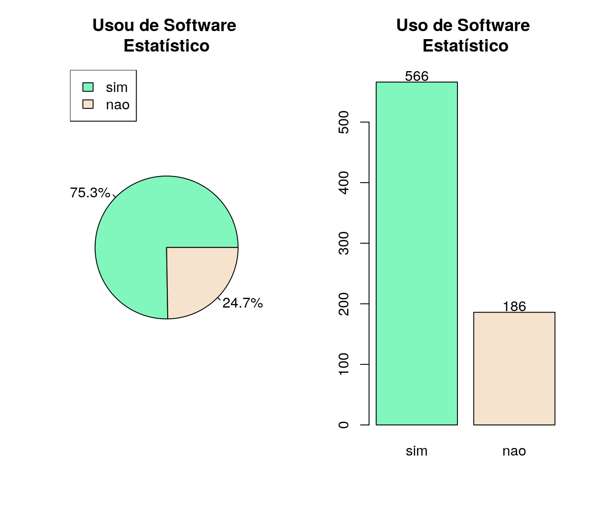
Gráfico 2
par(mfrow = c(2,1))
boxplot(quest$td_estatPGrad, horizontal=T,
col = "#A9D0F5", width = 1,
main = "Disciplinas Estudadas na Pós-Graduação")
boxplot(quest$td_estatPGrad,
horizontal=T, width = 1, col = "#A9D0F5")
stripchart(quest$td_estatPGrad,
vertical=F, add=T,
method="jitter",
pch=19, cex=0.5,
jitter=0.3)
2019
par(mfrow = c(2,1))
boxplot(antigo$td_estatPGrad, horizontal=T,
col = "#A9D0F5", width = 1,
main = "Disciplinas Estudadas na Pós-Graduação")
boxplot(antigo$td_estatPGrad,
horizontal=T, width = 1, col = "#A9D0F5")
stripchart(antigo$td_estatPGrad,
vertical=F, add=T,
method="jitter",
pch=19, cex=0.5,
jitter=0.3)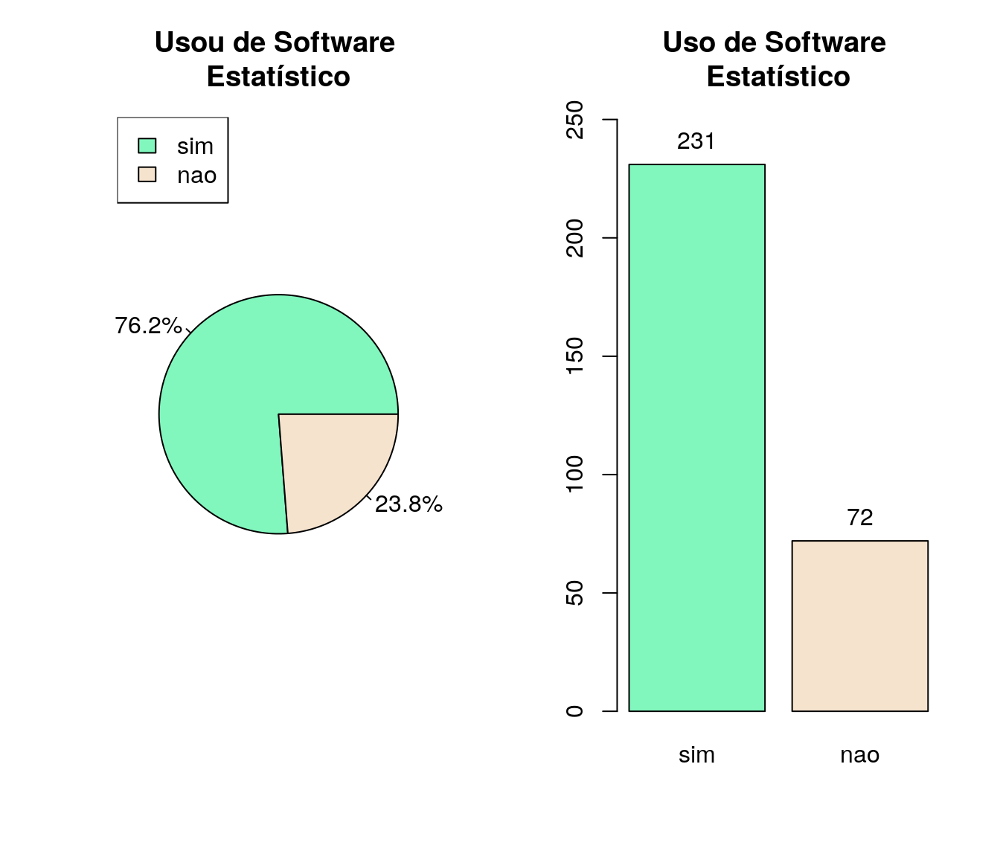
Já utilizou algum software com funcionalidades estatísticas?
Tabela
quest$lo_soft <- tolower(iconv(quest$lo_soft, to ='ASCII//TRANSLIT', from = "UTF-8"))
quest$lo_soft <- factor(quest$lo_soft, levels = c("sim", "nao"))
fa_soft <- table(quest$lo_soft) # frequência absoluta
fr_soft <- prop.table(fa_soft) # frequência relativa
fac_soft <- cumsum(fr_soft) # frequência acumulada
soft <- data.frame(niveis = names(fa_soft),
freq = as.vector(fa_soft),
freq_r = as.vector(fr_soft),
freq_ac = as.vector(fac_soft)) # unindo as informações
pander:::pander(soft) # gerando a tabela| niveis | freq | freq_r | freq_ac |
|---|---|---|---|
| sim | 189 | 0.753 | 0.753 |
| nao | 62 | 0.247 | 1 |
Gráfico
par(mfrow = c(1,2))
ar_color <- c("#81F7BE", "#F6E3CE")
pie(soft$freq, col = ar_color,
main = "Usou de Software \nEstatístico",
labels = percent(soft$freq_r))
legend("topleft", legend = soft$niveis, fill = ar_color, cex = 1)
barplot(soft$freq, col = ar_color,
main = "Uso de Software \nEstatístico",
names.arg = soft$niveis,
ylim = c(0, max(soft$freq + 20)))
text(x = as.vector(barplot(soft$freq, plot = FALSE)),
y = as.vector(soft$freq) + 10,
labels = soft$freq, cex = 1)
2019
antigo$lo_soft <- tolower(iconv(antigo$lo_soft, to ='ASCII//TRANSLIT', from = "UTF-8"))
antigo$lo_soft <- factor(antigo$lo_soft, levels = c("sim", "nao"))
fa_soft <- table(antigo$lo_soft) # frequência absoluta
fr_soft <- prop.table(fa_soft) # frequência relativa
fac_soft <- cumsum(fr_soft) # frequência acumulada
soft <- data.frame(niveis = names(fa_soft),
freq = as.vector(fa_soft),
freq_r = as.vector(fr_soft),
freq_ac = as.vector(fac_soft)) # unindo as informações
par(mfrow = c(1,2))
ar_color <- c("#81F7BE", "#F6E3CE")
pie(soft$freq, col = ar_color,
main = "Usou de Software \nEstatístico",
labels = percent(soft$freq_r))
legend("topleft", legend = soft$niveis, fill = ar_color, cex = 1)
barplot(soft$freq, col = ar_color,
main = "Uso de Software \nEstatístico",
names.arg = soft$niveis,
ylim = c(0, max(soft$freq + 20)))
text(x = as.vector(barplot(soft$freq, plot = FALSE)),
y = as.vector(soft$freq) + 10,
labels = soft$freq, cex = 1)
Qual(is) software(s) estatístico(s) você usa ou já usou?
Pergunta aplicada somente a quem já usou algum software estatístico. Na opção “Outros”, separe por ponto-e-vírgula.
Tabela
quest$ln_enumSoft <- tolower(iconv(quest$ln_enumSoft, to ='ASCII//TRANSLIT',
from = "UTF-8"))
quest$ln_enumSoft[ quest$ln_enumSoft %in% "statistica, sisvar e assistat" ] <- "statistica, sisvar, assistat"
quest$ln_enumSoft <- gsub(",",";",quest$ln_enumSoft)
ar_enumSoft<- cSplit(quest, "ln_enumSoft", sep = ";", direction = "long")$ln_enumSoft
ar_enumSoft <- as.character(ar_enumSoft)
classOpcoes <- c("nenhum", "nao usei", "nao utilizei", "nao", "nao se aplica", "0")
ar_enumSoft[ ar_enumSoft %in% classOpcoes ] <- "nao usou"
classOpcoes <- c("action", "action stat 3")
ar_enumSoft[ ar_enumSoft %in% classOpcoes ] <- "action stat"
classOpcoes <- c("epi-info")
ar_enumSoft[ ar_enumSoft %in% classOpcoes ] <- "epi info"
classOpcoes <- c("statigraphics")
ar_enumSoft[ ar_enumSoft %in% classOpcoes ] <- "statgraphics"
ar_enumSoft <- as.factor(ar_enumSoft)
fa_soft2 <- table(ar_enumSoft) # frequência absoluta
fr_soft2 <- prop.table(fa_soft2) # frequência relativa
fac_soft2 <- cumsum(fr_soft2) # frequência acumulada
soft2 <- data.frame(niveis = names(fa_soft2),
freq = as.vector(fa_soft2),
freq_r = as.vector(fr_soft2),
freq_ac = as.vector(fac_soft2)) # unindo as informações
pander:::pander(soft2) # gerando a tabela| niveis | freq | freq_r | freq_ac |
|---|---|---|---|
| . | 1 | 0.002481 | 0.002481 |
| action stat | 1 | 0.002481 | 0.004963 |
| actionstat | 1 | 0.002481 | 0.007444 |
| agreestat | 1 | 0.002481 | 0.009926 |
| assistat | 5 | 0.01241 | 0.02233 |
| bioestat | 2 | 0.004963 | 0.0273 |
| epi info | 1 | 0.002481 | 0.02978 |
| excel | 156 | 0.3871 | 0.4169 |
| genes | 1 | 0.002481 | 0.4194 |
| graphpad prism | 3 | 0.007444 | 0.4268 |
| graphpad prism 7 | 1 | 0.002481 | 0.4293 |
| graphpad prisma | 1 | 0.002481 | 0.4318 |
| graphprima | 1 | 0.002481 | 0.4342 |
| jmp | 1 | 0.002481 | 0.4367 |
| matlab | 34 | 0.08437 | 0.5211 |
| minitab | 19 | 0.04715 | 0.5682 |
| origin | 2 | 0.004963 | 0.5732 |
| origin prolab | 1 | 0.002481 | 0.5757 |
| pacotes e bibliotecas da plataforma anaconda da linguagem python | 1 | 0.002481 | 0.5782 |
| past | 2 | 0.004963 | 0.5831 |
| prim | 1 | 0.002481 | 0.5856 |
| prism | 1 | 0.002481 | 0.5881 |
| prisma | 3 | 0.007444 | 0.5955 |
| qgis | 2 | 0.004963 | 0.6005 |
| r | 51 | 0.1266 | 0.727 |
| sas | 18 | 0.04467 | 0.7717 |
| scilab | 1 | 0.002481 | 0.7742 |
| sigma plot | 1 | 0.002481 | 0.7767 |
| sigmaplot | 1 | 0.002481 | 0.7792 |
| sisvar | 6 | 0.01489 | 0.794 |
| sphinx | 1 | 0.002481 | 0.7965 |
| spss | 45 | 0.1117 | 0.9082 |
| statistica | 34 | 0.08437 | 0.9926 |
| systat | 1 | 0.002481 | 0.995 |
| winstat | 1 | 0.002481 | 0.9975 |
| xlstat | 1 | 0.002481 | 1 |
Gráfico
soft21 <- arrange(soft2, soft2$freq)
barplot(soft21$freq, horiz = TRUE,
names.arg = soft21$niveis,
col = rainbow(length(unique(soft21$niveis))),
main = "Softwares Estatísticos Usados",
xlim = c(0, max(soft21$freq + 10)),
cex.names=0.8, las = 2)
abline(v=50, lty=3, col = 2)
abline(v=100, lty=3, col = 2)
abline(v=150, lty=3, col = 2)
abline(v=200, lty=3, col = 2)
abline(v=250, lty=3, col = 2)
abline(v=300, lty=3, col = 2)2019
antigo$ln_enumSoft <- tolower(iconv(antigo$ln_enumSoft, to ='ASCII//TRANSLIT',
from = "UTF-8"))
antigo$ln_enumSoft[ antigo$ln_enumSoft %in% "statistica, sisvar e assistat" ] <- "statistica, sisvar, assistat"
antigo$ln_enumSoft <- gsub(",",";",antigo$ln_enumSoft)
ar_enumSoft<- cSplit(antigo, "ln_enumSoft", sep = ";", direction = "long")$ln_enumSoft
ar_enumSoft <- as.character(ar_enumSoft)
classOpcoes <- c("nenhum", "nao usei", "nao utilizei", "nao", "nao se aplica", "0")
ar_enumSoft[ ar_enumSoft %in% classOpcoes ] <- "nao usou"
classOpcoes <- c("action", "action stat 3")
ar_enumSoft[ ar_enumSoft %in% classOpcoes ] <- "action stat"
classOpcoes <- c("epi-info")
ar_enumSoft[ ar_enumSoft %in% classOpcoes ] <- "epi info"
classOpcoes <- c("statigraphics")
ar_enumSoft[ ar_enumSoft %in% classOpcoes ] <- "statgraphics"
ar_enumSoft <- as.factor(ar_enumSoft)
fa_soft2 <- table(ar_enumSoft) # frequência absoluta
fr_soft2 <- prop.table(fa_soft2) # frequência relativa
fac_soft2 <- cumsum(fr_soft2) # frequência acumulada
soft2 <- data.frame(niveis = names(fa_soft2),
freq = as.vector(fa_soft2),
freq_r = as.vector(fr_soft2),
freq_ac = as.vector(fac_soft2)) # unindo as informações
# pander:::pander(soft2) # gerando a tabela
soft21 <- arrange(soft2, soft2$freq)
barplot(soft21$freq, horiz = TRUE,
names.arg = soft21$niveis,
col = rainbow(length(unique(soft21$niveis))),
main = "Softwares Estatísticos Usados",
xlim = c(0, max(soft21$freq + 10)),
cex.names=0.8, las = 2)
abline(v=50, lty=3, col = 2)
abline(v=100, lty=3, col = 2)
abline(v=150, lty=3, col = 2)
abline(v=200, lty=3, col = 2)
abline(v=250, lty=3, col = 2)
abline(v=300, lty=3, col = 2)
Você vai utilizar métodos estatísticos na sua Pós-Graduação/Pesquisa?
Tabela
quest$lo_importancia <- tolower(iconv(quest$lo_importancia,
to ='ASCII//TRANSLIT',
from = "UTF-8"))
quest$lo_importancia <- factor(quest$lo_importancia,
levels = c("certamente sim", "nao sei ainda",
"definitivamente nao"))
fa_uso <- table(quest$lo_importancia) # frequência absoluta
fr_uso <- prop.table(fa_uso) # frequência relativa
fac_uso <- cumsum(fr_uso) # frequência acumulada
uso <- data.frame(niveis = names(fa_uso),
freq = as.vector(fa_uso),
freq_r = as.vector(fr_uso),
freq_ac = as.vector(fac_uso)) # unindo as informações
pander:::pander(uso) # gerando a tabela| niveis | freq | freq_r | freq_ac |
|---|---|---|---|
| certamente sim | 208 | 0.8287 | 0.8287 |
| nao sei ainda | 42 | 0.1673 | 0.996 |
| definitivamente nao | 1 | 0.003984 | 1 |
Gráfico
uso <- arrange(uso, uso$freq)
bp <-
barplot(uso$freq,
#horiz = TRUE,
names.arg = uso$niveis,
col = '#F5A9A9',
ylim = c(0, max(uso$freq + 20)),
cex.names=1,
main = 'Usará métodos estatísticos no trabalho',
#, las = 2
)
text(x = c(bp),
y = uso$freq,
labels = uso$freq,
pos = 3)
2019
antigo$lo_importancia <- tolower(iconv(antigo$lo_importancia,
to ='ASCII//TRANSLIT',
from = "UTF-8"))
antigo$lo_importancia <- factor(antigo$lo_importancia,
levels = c("certamente sim", "nao sei ainda",
"definitivamente nao"))
fa_uso <- table(antigo$lo_importancia) # frequência absoluta
fr_uso <- prop.table(fa_uso) # frequência relativa
fac_uso <- cumsum(fr_uso) # frequência acumulada
uso <- data.frame(niveis = names(fa_uso),
freq = as.vector(fa_uso),
freq_r = as.vector(fr_uso),
freq_ac = as.vector(fac_uso)) # unindo as informações
#pander:::pander(uso) # gerando a tabela
uso <- arrange(uso, uso$freq)
bp <-
barplot(uso$freq,
#horiz = TRUE,
names.arg = uso$niveis,
col = '#F5A9A9',
ylim = c(0, max(uso$freq + 20)),
cex.names=1,
main = 'Usará métodos estatísticos no trabalho',
#, las = 2
)
text(x = c(bp),
y = uso$freq,
labels = uso$freq,
pos = 3)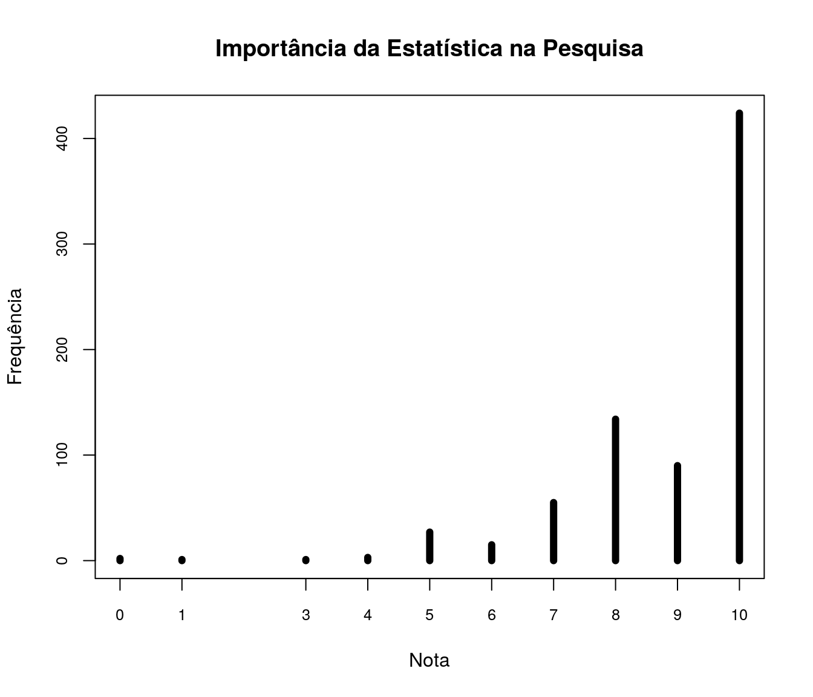
Qual a importância que você atribui à Estatística no seu trabalho de Pós-Graduação/Pesquisa?
Tabela 1
quest$td_notaImport <- as.integer(quest$td_notaImport)
fa_import <- table(quest$td_notaImport) # frequência absoluta
fr_import <- prop.table(fa_import) # frequência relativa
fac_import <- cumsum(fr_import) # frequência acumulada
import <- data.frame(niveis = names(fa_import),
freq = as.vector(fa_import),
freq_r = as.vector(fr_import),
freq_ac = as.vector(fac_import)) # unindo as informações
pander:::pander(import) # gerando a tabela| niveis | freq | freq_r | freq_ac |
|---|---|---|---|
| 0 | 2 | 0.007968 | 0.007968 |
| 4 | 1 | 0.003984 | 0.01195 |
| 5 | 9 | 0.03586 | 0.04781 |
| 6 | 9 | 0.03586 | 0.08367 |
| 7 | 13 | 0.05179 | 0.1355 |
| 8 | 38 | 0.1514 | 0.2869 |
| 9 | 30 | 0.1195 | 0.4064 |
| 10 | 149 | 0.5936 | 1 |
Tabela 2
medidas <- data.frame(minimo = quantile(quest$td_notaImport)[1],
quart1 = quantile(quest$td_notaImport)[2],
media = mean(quest$td_notaImport),
mediana = quantile(quest$td_notaImport)[3],
moda = names(sort(table(quest$td_notaImport),
decreasing = TRUE)[1]),
quart3 = quantile(quest$td_notaImport)[4],
max = quantile(quest$td_notaImport)[5])
row.names(medidas) <- NULL
pander(medidas)| minimo | quart1 | media | mediana | moda | quart3 | max |
|---|---|---|---|---|---|---|
| 0 | 8 | 8.996 | 10 | 10 | 10 | 10 |
disp <- data.frame(amplitude = diff(range(quest$td_notaImport)),
variancia = var(quest$td_notaImport),
desv_pad = sd(quest$td_notaImport),
coef_var = 100*sd(quest$td_notaImport)/mean(quest$td_notaImport))
pander(disp)| amplitude | variancia | desv_pad | coef_var |
|---|---|---|---|
| 10 | 2.604 | 1.614 | 17.94 |
Gráfico 1
plot(table(quest$td_notaImport), t = "h", xlab = "Nota",
ylab = "Frequência", lwd = 6, cex.axis = 0.8,
main = "Importância da Estatística na Pesquisa")
Gráfico 2
layout(mat = matrix(c(1,2),2,1, byrow=TRUE), height = c(3,1))
par(mar=c(3.1, 3.1, 1.1, 2.1))
hist(quest$td_notaImport,col = "#F6CEF5",
main = "Importância da Estatística na Pesquisa",
xlab = "Ano",
ylab = "Frequência")
boxplot(quest$td_notaImport,
horizontal=TRUE,
outline=TRUE,
frame=F,
col = "#F6CEF5",
width = 10)
stripchart(quest$td_notaImport,
vertical=F, add=T,
method="jitter",
pch=19, cex=0.5,
jitter=0.3)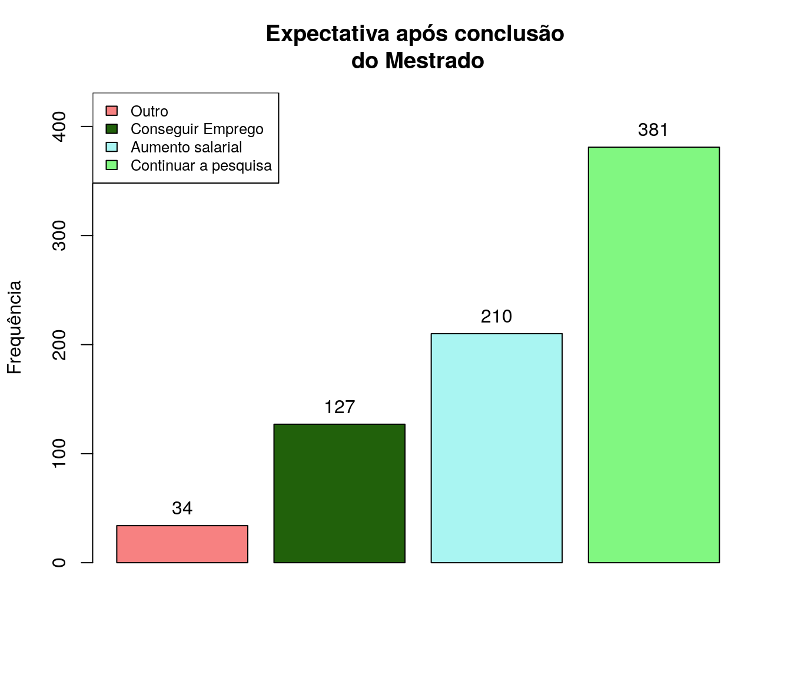
2019
antigo$td_notaImport <- as.integer(antigo$td_notaImport)
fa_import <- table(antigo$td_notaImport) # frequência absoluta
fr_import <- prop.table(fa_import) # frequência relativa
fac_import <- cumsum(fr_import) # frequência acumulada
import <- data.frame(niveis = names(fa_import),
freq = as.vector(fa_import),
freq_r = as.vector(fr_import),
freq_ac = as.vector(fac_import)) # unindo as informações
#pander:::pander(import) # gerando a tabela
layout(mat = matrix(c(1,2),2,1, byrow=TRUE), height = c(3,1))
par(mar=c(3.1, 3.1, 1.1, 2.1))
hist(antigo$td_notaImport,col = "#F6CEF5",
main = "Importância da Estatística na Pesquisa",
xlab = "Ano",
ylab = "Frequência")
boxplot(antigo$td_notaImport,
horizontal=TRUE,
outline=TRUE,
frame=F,
col = "#F6CEF5",
width = 10)
stripchart(antigo$td_notaImport,
vertical=F, add=T,
method="jitter",
pch=19, cex=0.5,
jitter=0.3)
Se você está fazendo Pós-Graduação, qual a sua principal expectativa após a conclusão?
Tabela
quest$ln_expectAposPG <- tolower(iconv(quest$ln_expectAposPG,
to ='ASCII//TRANSLIT',
from = "UTF-8"))
classOpcoes <- c("conseguir um emprego.",
"aumento salarial e oportunidades mais promissoras.",
"continuar com a pesquisa e avancar para o proximo curso. seguir os estudos.")
quest$ln_expectAposPG[ !quest$ln_expectAposPG %in% classOpcoes ] <- "outro"
quest$ln_expectAposPG <- factor(quest$ln_expectAposPG,
levels = c("conseguir um emprego.",
"aumento salarial e oportunidades mais promissoras.",
"continuar com a pesquisa e avancar para o proximo curso. seguir os estudos.",
"outro"))
fa_exp <- table(quest$ln_expectAposPG) # frequência absoluta
fr_exp <- prop.table(fa_exp) # frequência relativa
fac_exp <- cumsum(fr_exp) # frequência acumulada
exp <- data.frame(niveis = names(fa_exp),
freq = as.vector(fa_exp),
freq_r = as.vector(fr_exp),
freq_ac = as.vector(fac_exp)) # unindo as informações
pander:::pander(exp) # gerando a tabela| niveis | freq | freq_r | freq_ac |
|---|---|---|---|
| conseguir um emprego. | 33 | 0.1315 | 0.1315 |
| aumento salarial e oportunidades mais promissoras. | 81 | 0.3227 | 0.4542 |
| continuar com a pesquisa e avancar para o proximo curso. seguir os estudos. | 125 | 0.498 | 0.9522 |
| outro | 12 | 0.04781 | 1 |
Gráfico
exp$niveis <- c("Conseguir Emprego", "Aumento salarial",
"Continuar a pesquisa", "Outro")
exp_sort <- arrange(exp, exp$freq)
bp <- barplot(exp_sort$freq,
#names.arg = at_ord$niveis,
col = paleta,
main = 'Expectativa após conclusão \ndo Mestrado',
ylab = 'Frequência',
xlab = '',
ylim = c(0,max(exp_sort$freq+50))
#horiz = T,
#las=2,
)
legend("topleft",
legend = exp_sort$niveis,
fill = paleta,
cex = .8)
text(x = c(bp),
y = exp_sort$freq,
labels = exp_sort$freq,
pos = 3)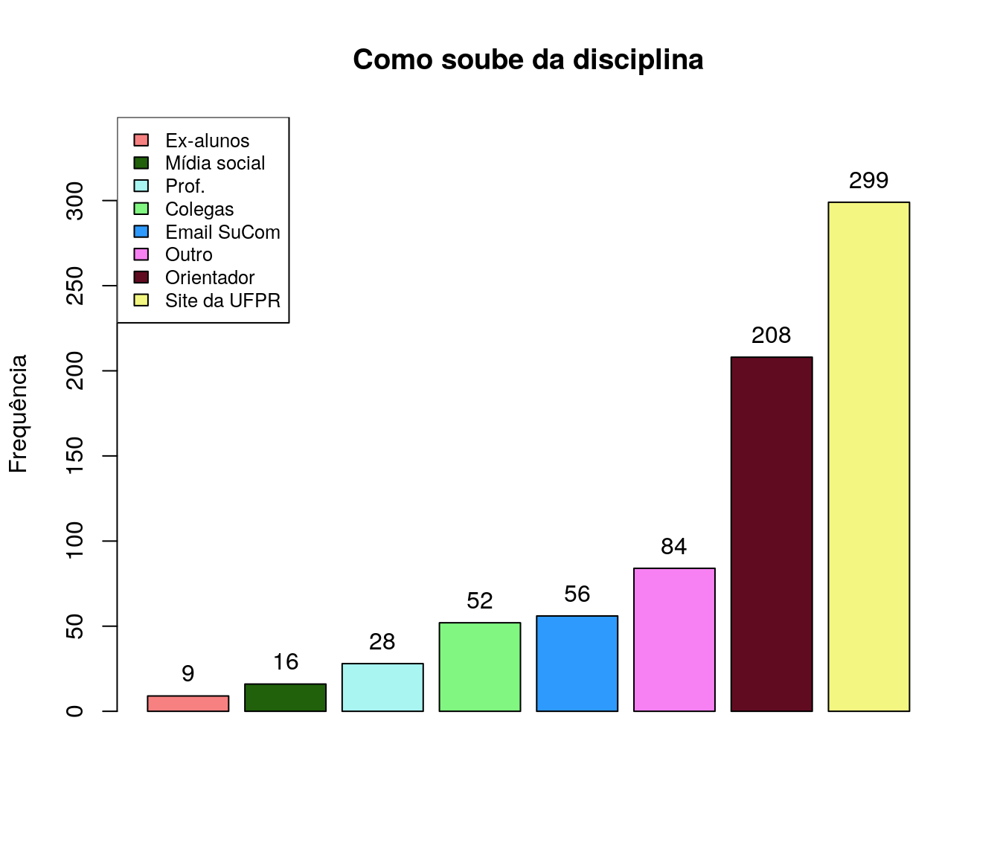
2019
antigo$ln_expectAposPG <- tolower(iconv(antigo$ln_expectAposPG,
to ='ASCII//TRANSLIT',
from = "UTF-8"))
classOpcoes <- c("conseguir um emprego.",
"aumento salarial e oportunidades mais promissoras.",
"continuar com a pesquisa e avancar para o proximo curso. seguir os estudos.")
antigo$ln_expectAposPG[ !antigo$ln_expectAposPG %in% classOpcoes ] <- "outro"
antigo$ln_expectAposPG <- factor(antigo$ln_expectAposPG,
levels = c("conseguir um emprego.",
"aumento salarial e oportunidades mais promissoras.",
"continuar com a pesquisa e avancar para o proximo curso. seguir os estudos.",
"outro"))
fa_exp <- table(antigo$ln_expectAposPG) # frequência absoluta
fr_exp <- prop.table(fa_exp) # frequência relativa
fac_exp <- cumsum(fr_exp) # frequência acumulada
exp <- data.frame(niveis = names(fa_exp),
freq = as.vector(fa_exp),
freq_r = as.vector(fr_exp),
freq_ac = as.vector(fac_exp)) # unindo as informações
#pander:::pander(exp) # gerando a tabela
exp$niveis <- c("Conseguir Emprego", "Aumento salarial",
"Continuar a pesquisa", "Outro")
exp_sort <- arrange(exp, exp$freq)
bp <- barplot(exp_sort$freq,
#names.arg = at_ord$niveis,
col = paleta,
main = 'Expectativa após conclusão \ndo Mestrado',
ylab = 'Frequência',
xlab = '',
ylim = c(0,max(exp_sort$freq+50))
#horiz = T,
#las=2,
)
legend("topleft",
legend = exp_sort$niveis,
fill = paleta,
cex = .8)
text(x = c(bp),
y = exp_sort$freq,
labels = exp_sort$freq,
pos = 3)Como ficou sabendo da Disciplina Transversal?
Tabela
quest$ln_conhecTransv <- tolower(iconv(quest$ln_conhecTransv,
to ='ASCII//TRANSLIT',
from = "UTF-8"))
classOpcoes <- c("site da ufpr ou instituicao de origem",
"email institucional da sucom (superintendencia de comunicacao e marketing)",
"por alguma outra midia social da ufpr",
"pelos professores que ministram/ministraram disciplinas da transversal",
"pelo(a) orientador(a)",
"por ex-alunos da disciplina",
"por colegas")
quest$ln_conhecTransv[ !quest$ln_conhecTransv %in% classOpcoes ] <- "outro"
quest$ln_conhecTransv <- factor(quest$ln_conhecTransv,
levels = c("site da ufpr ou instituicao de origem",
"email institucional da sucom (superintendencia de comunicacao e marketing)",
"por alguma outra midia social da ufpr",
"pelos professores que ministram/ministraram disciplinas da transversal",
"pelo(a) orientador(a)",
"por ex-alunos da disciplina",
"por colegas",
"outro"))
fa_tr <- table(quest$ln_conhecTransv) # frequência absoluta
fr_tr <- prop.table(fa_tr) # frequência relativa
fac_tr <- cumsum(fr_tr) # frequência acumulada
tr <- data.frame(niveis = names(fa_tr),
freq = as.vector(fa_tr),
freq_r = as.vector(fr_tr),
freq_ac = as.vector(fac_tr)) # unindo as informações
pander:::pander(tr) # gerando a tabela| niveis | freq | freq_r | freq_ac |
|---|---|---|---|
| site da ufpr ou instituicao de origem | 91 | 0.3625 | 0.3625 |
| email institucional da sucom (superintendencia de comunicacao e marketing) | 26 | 0.1036 | 0.4661 |
| por alguma outra midia social da ufpr | 5 | 0.01992 | 0.4861 |
| pelos professores que ministram/ministraram disciplinas da transversal | 11 | 0.04382 | 0.5299 |
| pelo(a) orientador(a) | 66 | 0.2629 | 0.7928 |
| por ex-alunos da disciplina | 3 | 0.01195 | 0.8048 |
| por colegas | 17 | 0.06773 | 0.8725 |
| outro | 32 | 0.1275 | 1 |
Gráfico
tr$niveis <- c("Site da UFPR",
"Email SuCom",
"Mídia social", "Prof.",
"Orientador", "Ex-alunos",
"Colegas", "Outro")
tr_sort <- arrange(tr, tr$freq)
bp <- barplot(tr_sort$freq,
#names.arg = at_ord$niveis,
col = paleta,
main = 'Como soube da disciplina',
ylab = 'Frequência',
xlab = '',
ylim = c(0,max(tr_sort$freq+50))
#horiz = T,
#las=2,
)
legend("topleft",
legend = tr_sort$niveis,
fill = paleta,
cex = .8)
text(x = c(bp),
y = tr_sort$freq,
labels = tr_sort$freq,
pos = 3)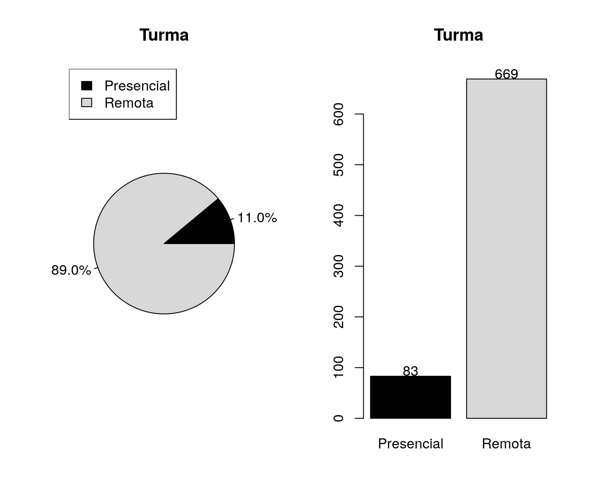
Após se matricular no SIGA, você assistiu alguma aula do ano anterior da Disciplina no YouTube?
Tabela
quest$lo_videoTransv <- tolower(iconv(quest$lo_videoTransv,
to ='ASCII//TRANSLIT',
from = "UTF-8"))
quest$lo_videoTransv <- factor(quest$lo_videoTransv, levels = c("sim", "nao"))
fa_video <- table(quest$lo_video) # frequência absoluta
fr_video <- prop.table(fa_video) # frequência relativa
fac_video <- cumsum(fr_video) # frequência acumulada
video <- data.frame(niveis = names(fa_video),
freq = as.vector(fa_video),
freq_r = as.vector(fr_video),
freq_ac = as.vector(fac_video)) # unindo as informações
pander:::pander(video) # gerando a tabela| niveis | freq | freq_r | freq_ac |
|---|---|---|---|
| sim | 17 | 0.06773 | 0.06773 |
| nao | 234 | 0.9323 | 1 |
Gráfico
par(mfrow = c(1,2))
ar_color <- c("#81F7F3", "#D8D8D8")
pie(video$freq, col = ar_color,
main = "Assistiu alguma \naula no Youtube",
labels = percent(video$freq_r))
legend("topleft", legend = video$niveis, fill = ar_color, cex = 1)
barplot(video$freq, col = ar_color,
main = "Assistiu alguma \naula no Youtube",
names.arg = video$niveis,
ylim = c(0, max(video$freq + 20)))
text(x = as.vector(barplot(video$freq, plot = FALSE)),
y = as.vector(video$freq) + 10,
labels = video$freq, cex = 1)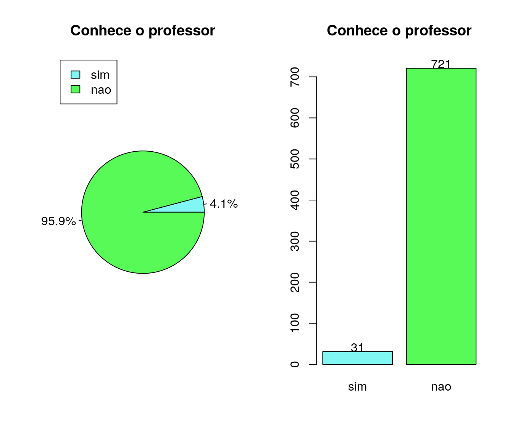
A qual turma da disciplina você pertence?
Tabela
quest$ln_turma <- factor(quest$ln_turma,
levels = c("Presencial", "Remota"))
fa_turma <- table(quest$ln_turma) # frequência absoluta
fr_turma <- prop.table(fa_turma) # frequência relativa
fac_turma <- cumsum(fr_turma) # frequência acumulada
turma <- data.frame(niveis = names(fa_turma),
freq = as.vector(fa_turma),
freq_r = as.vector(fr_turma),
freq_ac = as.vector(fac_turma)) # unindo as informações
pander:::pander(turma) # gerando a tabela| niveis | freq | freq_r | freq_ac |
|---|---|---|---|
| Presencial | 40 | 0.1594 | 0.1594 |
| Remota | 211 | 0.8406 | 1 |
Gráfico
par(mfrow = c(1,2))
ar_color <- c("#000000", "#D8D8D8")
pie(turma$freq, col = ar_color,
main = "Assistiu alguma \naula no Youtube",
labels = percent(turma$freq_r))
legend("topleft", legend = turma$niveis, fill = ar_color, cex = 1)
barplot(turma$freq, col = ar_color,
main = "Assistiu alguma \naula no Youtube",
names.arg = turma$niveis,
ylim = c(0, max(turma$freq + 20)))
text(x = as.vector(barplot(turma$freq, plot = FALSE)),
y = as.vector(turma$freq) + 10,
labels = turma$freq, cex = 1)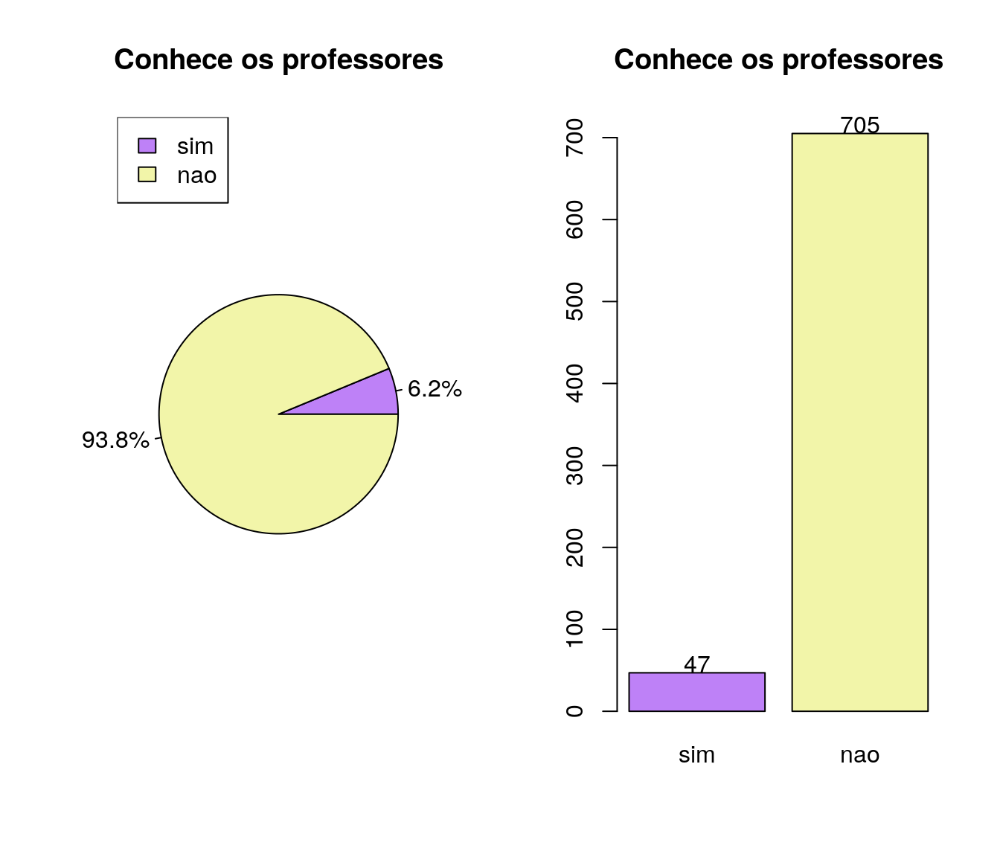
Tem/teve contato ou conhecimento sobre o Prof. Coordenador da Disciplina (Paulo Justiniano)?
Tabela
quest$lo_contatoProfDisc <- tolower(iconv(quest$lo_contatoProfDisc,
to ='ASCII//TRANSLIT',
from = "UTF-8"))
quest$lo_contatoProfDisc <- factor(quest$lo_contatoProfDisc, levels = c("sim", "nao"))
fa_prof <- table(quest$lo_contatoProfDisc) # frequência absoluta
fr_prof <- prop.table(fa_prof) # frequência relativa
fac_prof <- cumsum(fr_prof) # frequência acumulada
prof <- data.frame(niveis = names(fa_prof),
freq = as.vector(fa_prof),
freq_r = as.vector(fr_prof),
freq_ac = as.vector(fac_prof)) # unindo as informações
pander:::pander(prof) # gerando a tabela| niveis | freq | freq_r | freq_ac |
|---|---|---|---|
| sim | 11 | 0.04382 | 0.04382 |
| nao | 240 | 0.9562 | 1 |
Gráfico
par(mfrow = c(1,2))
ar_color <- c("#81F7F3", "#58FA58")
pie(prof$freq, col = ar_color,
main = "Conhece o professor",
labels = percent(prof$freq_r))
legend("topleft", legend = prof$niveis, fill = ar_color, cex = 1)
barplot(prof$freq, col = ar_color,
main = "Conhece o professor",
names.arg = prof$niveis,
ylim = c(0, max(prof$freq + 20)))
text(x = as.vector(barplot(prof$freq, plot = FALSE)),
y = as.vector(prof$freq) + 10,
labels = prof$freq, cex = 1)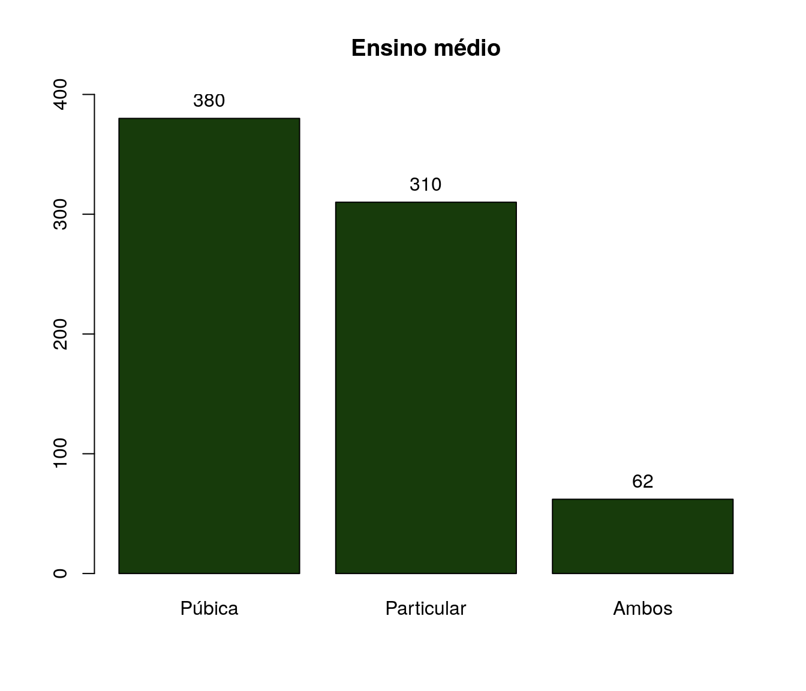
Tem/teve contato ou conhecimento sobre o(s) prof(s). colaboradores da disciplina?
Tabela
quest$lo_contatoProfColabDisc <- tolower(iconv(quest$lo_contatoProfColabDisc,
to ='ASCII//TRANSLIT',
from = "UTF-8"))
quest$lo_contatoProfColabDisc <- factor(quest$lo_contatoProfColabDisc, levels = c("sim", "nao"))
fa_prof2 <- table(quest$lo_contatoProfColabDisc) # frequência absoluta
fr_prof2 <- prop.table(fa_prof2) # frequência relativa
fac_prof2 <- cumsum(fr_prof2) # frequência acumulada
prof2 <- data.frame(niveis = names(fa_prof2),
freq = as.vector(fa_prof2),
freq_r = as.vector(fr_prof2),
freq_ac = as.vector(fac_prof2)) # unindo as informações
pander:::pander(prof2) # gerando a tabela| niveis | freq | freq_r | freq_ac |
|---|---|---|---|
| sim | 13 | 0.05179 | 0.05179 |
| nao | 238 | 0.9482 | 1 |
Gráfico
par(mfrow = c(1,2))
ar_color <- c("#BE81F7", "#F2F5A9")
pie(prof2$freq, col = ar_color,
main = "Conhece os professores",
labels = percent(prof2$freq_r))
legend("topleft", legend = prof2$niveis, fill = ar_color, cex = 1)
barplot(prof2$freq, col = ar_color,
main = "Conhece os professores",
names.arg = prof2$niveis,
ylim = c(0, max(prof2$freq + 20)))
text(x = as.vector(barplot(prof2$freq, plot = FALSE)),
y = as.vector(prof2$freq) + 10,
labels = prof2$freq, cex = 1)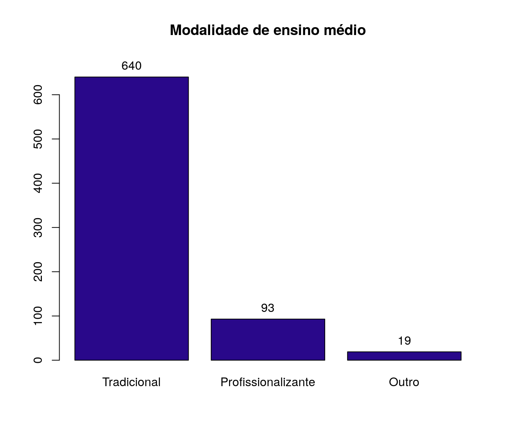
Você cursou o ensino médio em escola pública ou particular?
Tabela
quest$ln_medio1 <-
tolower(iconv(quest$ln_medio1,
to ='ASCII//TRANSLIT',
from = "UTF-8"))
quest$ln_medio1 <- factor(quest$ln_medio1, levels = c("totalmente em escola publica", "totalmente em escola particular", "parte em escola publica, parte em particular"))
fa_medio1 <- table(quest$ln_medio1) # frequência absoluta
fr_medio1 <- prop.table(fa_medio1) # frequência relativa
fac_medio1 <- cumsum(fr_medio1) # frequência acumulada
medio1 <- data.frame(niveis = names(fa_medio1),
freq = as.vector(fa_medio1),
freq_r = as.vector(fr_medio1),
freq_ac = as.vector(fac_medio1)) # unindo as informações
pander:::pander(medio1) # gerando a tabela| niveis | freq | freq_r | freq_ac |
|---|---|---|---|
| totalmente em escola publica | 124 | 0.494 | 0.494 |
| totalmente em escola particular | 105 | 0.4183 | 0.9124 |
| parte em escola publica, parte em particular | 22 | 0.08765 | 1 |
Gráfico
medio1$niveis <- c('Particular', 'Púbica', 'Ambos')
medio1 <- arrange(medio1, desc(medio1$niveis))
bp <-
barplot(medio1$freq,
#horiz = TRUE,
names.arg = medio1$niveis,
col = '#173B0B',
main = "Ensino médio",
ylim = c(0, max(medio1$freq + 20)),
cex.names=1
#, las = 2
)
text(x = c(bp),
y = medio1$freq,
labels = medio1$freq,
pos = 3)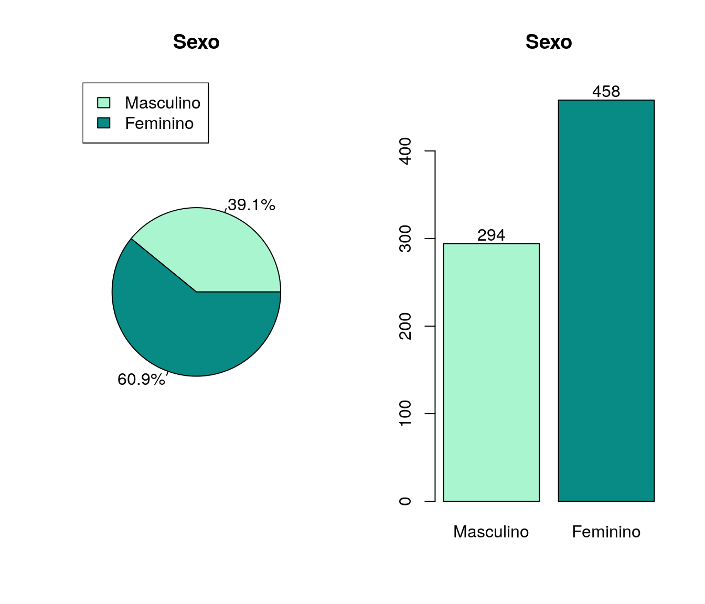
Você cursou ensino médio tradicional ou profissionalizante?
Tabela
quest$ln_medio2 <- tolower(iconv(quest$ln_medio2,
to ='ASCII//TRANSLIT',
from = "UTF-8"))
classOpcoes <- tolower(c("Ensino medio tradicional",
"Ensino medio profissionalizante (tecnico)"))
quest$ln_medio2[ !quest$ln_medio2 %in% classOpcoes ] <- "outro"
quest$ln_medio2 <- factor(quest$ln_medio2,
levels = c("ensino medio tradicional",
"ensino medio profissionalizante (tecnico)",
"outro"))
fa_medio2 <- table(quest$ln_medio2) # frequência absoluta
fr_medio2 <- prop.table(fa_medio2) # frequência relativa
fac_medio2 <- cumsum(fr_medio2) # frequência acumulada
medio2 <- data.frame(niveis = names(fa_medio2),
freq = as.vector(fa_medio2),
freq_r = as.vector(fr_medio2),
freq_ac = as.vector(fac_medio2)) # unindo as informações
pander:::pander(medio2) # gerando a tabela| niveis | freq | freq_r | freq_ac |
|---|---|---|---|
| ensino medio tradicional | 211 | 0.8406 | 0.8406 |
| ensino medio profissionalizante (tecnico) | 34 | 0.1355 | 0.9761 |
| outro | 6 | 0.0239 | 1 |
Gráfico
medio2$niveis <- c('Tradicional', 'Profissionalizante', 'Outro')
medio2 <- arrange(medio2, desc(medio2$niveis))
bp <-
barplot(medio2$freq,
#horiz = TRUE,
names.arg = medio2$niveis,
col = '#29088A',
main = "Modalidade de ensino médio",
ylim = c(0, max(medio2$freq + 20)),
cex.names=1
#, las = 2
)
text(x = c(bp),
y = medio2$freq,
labels = medio2$freq,
pos = 3)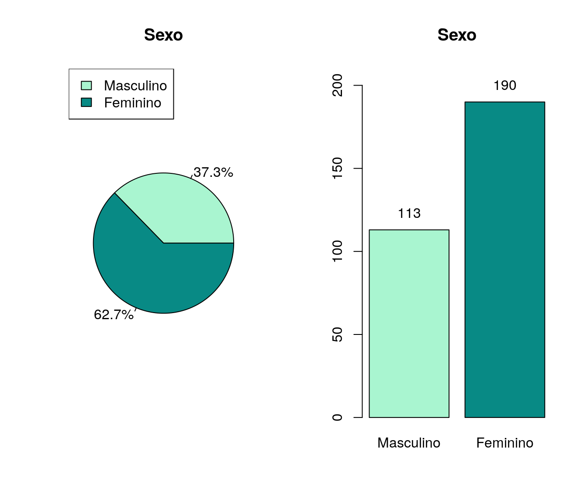
Perfil do aluno
Sexo
Tabela
quest$ln_sexo <- factor(quest$ln_sexo,
levels = c("Masculino", "Feminino"))
fa_sexo <- table(quest$ln_sexo) # frequência absoluta
fr_sexo <- prop.table(fa_sexo) # frequência relativa
fac_sexo <- cumsum(fr_sexo) # frequência acumulada
sexo <- data.frame(niveis = names(fa_sexo),
freq = as.vector(fa_sexo),
freq_r = as.vector(fr_sexo),
freq_ac = as.vector(fac_sexo)) # unindo as informações
pander:::pander(sexo) # gerando a tabela| niveis | freq | freq_r | freq_ac |
|---|---|---|---|
| Masculino | 99 | 0.3944 | 0.3944 |
| Feminino | 152 | 0.6056 | 1 |
Gráfico
par(mfrow = c(1,2))
ar_color <- c("#A9F5D0", "#088A85")
pie(sexo$freq, col = ar_color,
main = "Sexo",
labels = percent(sexo$freq_r))
legend("topleft", legend = sexo$niveis, fill = ar_color, cex = 1)
barplot(sexo$freq, col = ar_color,
main = "Sexo",
names.arg = sexo$niveis,
ylim = c(0, max(sexo$freq + 20)))
text(x = as.vector(barplot(sexo$freq, plot = FALSE)),
y = as.vector(sexo$freq) + 10,
labels = sexo$freq, cex = 1)
2019
antigo$ln_sexo <- factor(antigo$ln_sexo,
levels = c("Masculino", "Feminino"))
fa_sexo <- table(antigo$ln_sexo) # frequência absoluta
fr_sexo <- prop.table(fa_sexo) # frequência relativa
fac_sexo <- cumsum(fr_sexo) # frequência acumulada
sexo <- data.frame(niveis = names(fa_sexo),
freq = as.vector(fa_sexo),
freq_r = as.vector(fr_sexo),
freq_ac = as.vector(fac_sexo)) # unindo as informações
#pander:::pander(sexo) # gerando a tabela
par(mfrow = c(1,2))
ar_color <- c("#A9F5D0", "#088A85")
pie(sexo$freq, col = ar_color,
main = "Sexo",
labels = percent(sexo$freq_r))
legend("topleft", legend = sexo$niveis, fill = ar_color, cex = 1)
barplot(sexo$freq, col = ar_color,
main = "Sexo",
names.arg = sexo$niveis,
ylim = c(0, max(sexo$freq + 20)))
text(x = as.vector(barplot(sexo$freq, plot = FALSE)),
y = as.vector(sexo$freq) + 10,
labels = sexo$freq, cex = 1)Qual a sua altura?
Tabela 1
quest$tc_altura <- as.integer(quest$tc_altura)
h <- hist(quest$tc_altura, plot = FALSE)
breaks <- h$breaks
classes <- cut(quest$tc_altura, breaks = breaks,
include.lowest = TRUE, right = TRUE)
tb.altura <- as.data.frame(table(classes))
tb.altura$Perc <- 100 * prop.table(tb.altura$Freq)
names(tb.altura)[1] <- "Altura"
pander:::pander(tb.altura)| Altura | Freq | Perc |
|---|---|---|
| [135,140] | 2 | 0.7968 |
| (140,145] | 0 | 0 |
| (145,150] | 1 | 0.3984 |
| (150,155] | 10 | 3.984 |
| (155,160] | 36 | 14.34 |
| (160,165] | 48 | 19.12 |
| (165,170] | 62 | 24.7 |
| (170,175] | 29 | 11.55 |
| (175,180] | 31 | 12.35 |
| (180,185] | 15 | 5.976 |
| (185,190] | 13 | 5.179 |
| (190,195] | 4 | 1.594 |
Tabela 2
medidas <- data.frame(minimo = quantile(quest$tc_altura)[1],
quart1 = quantile(quest$tc_altura)[2],
media = mean(quest$tc_altura),
mediana = quantile(quest$tc_altura)[3],
moda = names(sort(table(quest$tc_altura),
decreasing = TRUE)[1]),
quart3 = quantile(quest$tc_altura)[4],
max = quantile(quest$tc_altura)[5])
row.names(medidas) <- NULL
pander(medidas)| minimo | quart1 | media | mediana | moda | quart3 | max |
|---|---|---|---|---|---|---|
| 136 | 163 | 169.2 | 169 | 170 | 175.5 | 193 |
disp <- data.frame(amplitude = diff(range(quest$tc_altura)),
variancia = var(quest$tc_altura),
desv_pad = sd(quest$tc_altura),
coef_var = 100*sd(quest$tc_altura)/mean(quest$tc_altura))
pander(disp)| amplitude | variancia | desv_pad | coef_var |
|---|---|---|---|
| 57 | 93.98 | 9.694 | 5.728 |
Gráfico 1
hFreq <- hist(quest$tc_altura,
main = "Histograma da Altura", xlab = "Altura",
ylab = "Frequência", col = "aquamarine3")
y <- density(quest$tc_altura)
lines(y$y ~ y$x, lwd = 3)
Qual o seu peso?
Tabela 1
quest$tc_peso <- as.integer(quest$tc_peso)
h <- hist(quest$tc_peso, plot = FALSE)
breaks <- h$breaks
classes <- cut(quest$tc_peso, breaks = breaks,
include.lowest = TRUE, right = TRUE)
tb.peso <- as.data.frame(table(classes))
tb.peso$Perc <- 100 * prop.table(tb.peso$Freq)
names(tb.peso)[1] <- "Altura"
pander:::pander(tb.peso)| Altura | Freq | Perc |
|---|---|---|
| [30,40] | 2 | 0.7968 |
| (40,50] | 10 | 3.984 |
| (50,60] | 69 | 27.49 |
| (60,70] | 59 | 23.51 |
| (70,80] | 49 | 19.52 |
| (80,90] | 32 | 12.75 |
| (90,100] | 12 | 4.781 |
| (100,110] | 14 | 5.578 |
| (110,120] | 3 | 1.195 |
| (120,130] | 0 | 0 |
| (130,140] | 1 | 0.3984 |
Tabela 2
medidas <- data.frame(minimo = quantile(quest$tc_peso)[1],
quart1 = quantile(quest$tc_peso)[2],
media = mean(quest$tc_peso),
mediana = quantile(quest$tc_peso)[3],
moda = names(sort(table(quest$tc_peso),
decreasing = TRUE)[1]),
quart3 = quantile(quest$tc_peso)[4],
max = quantile(quest$tc_peso)[5])
row.names(medidas) <- NULL
pander(medidas)| minimo | quart1 | media | mediana | moda | quart3 | max |
|---|---|---|---|---|---|---|
| 38 | 60 | 71.77 | 68 | 60 | 80 | 138 |
disp <- data.frame(amplitude = diff(range(quest$tc_peso)),
variancia = var(quest$tc_peso),
desv_pad = sd(quest$tc_peso),
coef_var = 100*sd(quest$tc_peso)/mean(quest$tc_peso))
pander(disp)| amplitude | variancia | desv_pad | coef_var |
|---|---|---|---|
| 100 | 276.1 | 16.62 | 23.15 |
Gráfico 1
h <- hist(quest$tc_peso[which(quest$tc_peso > 0)],
main = "Histograma do Peso", xlab = "Peso",
ylab = "Densidade", col = "cornflowerblue",
probability = FALSE)
y <- density(quest$tc_peso[which(quest$tc_peso > 0)])
lines(y$y ~ y$x, lwd = 3)
Cálculo do IMC
Tabela 1
quest <- transform(quest, tc_IMC = quest$tc_peso/((quest$tc_altura/100)^2))
#range(quest$tc_IMC, na.rm = TRUE)
breaks <- c(0, 16, 17, 18.5, 25, 30, 35, 40, range(quest$tc_IMC, na.rm = TRUE)[2])
classes <- cut(quest$tc_IMC, breaks = breaks,
include.lowest = FALSE, right = FALSE)
tb.imc <- as.data.frame(table(classes))
tb.imc$Perc <- 100 * prop.table(tb.imc$Freq)
names(tb.imc)[1] <- "IMC"
pander:::pander(tb.imc)| IMC | Freq | Perc |
|---|---|---|
| [0,16) | 1 | 0.4 |
| [16,17) | 1 | 0.4 |
| [17,18.5) | 1 | 0.4 |
| [18.5,25) | 143 | 57.2 |
| [25,30) | 71 | 28.4 |
| [30,35) | 31 | 12.4 |
| [35,40) | 2 | 0.8 |
| [40,48.3) | 0 | 0 |
Tabela 2
medidas <- data.frame(minimo = quantile(quest$tc_IMC)[1],
quart1 = quantile(quest$tc_IMC)[2],
media = mean(quest$tc_IMC),
mediana = quantile(quest$tc_IMC)[3],
moda = names(sort(table(quest$tc_IMC),
decreasing = TRUE)[1]),
quart3 = quantile(quest$tc_IMC)[4],
max = quantile(quest$tc_IMC)[5])
row.names(medidas) <- NULL
pander(medidas)| minimo | quart1 | media | mediana | moda | quart3 | max |
|---|---|---|---|---|---|---|
| 15.43 | 21.65 | 24.87 | 24.02 | 18.6851211072664 | 27.65 | 48.32 |
disp <- data.frame(amplitude = diff(range(quest$tc_IMC)),
variancia = var(quest$tc_IMC),
desv_pad = sd(quest$tc_IMC),
coef_var = 100*sd(quest$tc_IMC)/mean(quest$tc_IMC))
pander(disp)| amplitude | variancia | desv_pad | coef_var |
|---|---|---|---|
| 32.89 | 19.14 | 4.375 | 17.59 |
Gráfico
h <- hist(quest$tc_IMC, breaks = breaks, main = "Histograma do IMC", xlab = "IMC",
ylab = "Densidade", col = "yellow", freq = FALSE, ylim = c(0, 0.10))
lines(density(quest$tc_IMC[which(quest$tc_IMC > 0)]), lwd = 3)
rug(quest$tc_IMC[which(quest$tc_IMC > 0)])
xx <- seq(0,60, len=200)
yy <- dnorm(xx, mean=mean(quest$tc_IMC[which(quest$tc_IMC > 0)], na.rm=T), sd=sd(quest$tc_IMC[which(quest$tc_IMC > 0)]))
lines(xx, yy, col=2, lwd = 3)2019
antigo <- transform(antigo, tc_IMC = antigo$tc_peso/((antigo$tc_altura/100)^2))
#range(antigo$tc_IMC, na.rm = TRUE)
breaks <- c(0, 16, 17, 18.5, 25, 30, 35, 40, range(antigo$tc_IMC, na.rm = TRUE)[2])
classes <- cut(antigo$tc_IMC, breaks = breaks,
include.lowest = FALSE, right = FALSE)
tb.imc <- as.data.frame(table(classes))
tb.imc$Perc <- 100 * prop.table(tb.imc$Freq)
names(tb.imc)[1] <- "IMC"
#pander:::pander(tb.imc)
h <- hist(antigo$tc_IMC, breaks = breaks, main = "Histograma do IMC", xlab = "IMC",
ylab = "Densidade", col = "yellow", freq = FALSE, ylim = c(0, 0.10))
lines(density(antigo$tc_IMC[which(antigo$tc_IMC > 0)]), lwd = 3)
rug(antigo$tc_IMC[which(antigo$tc_IMC > 0)])
xx <- seq(0,60, len=200)
yy <- dnorm(xx, mean=mean(antigo$tc_IMC[which(antigo$tc_IMC > 0)], na.rm=T), sd=sd(antigo$tc_IMC[which(antigo$tc_IMC > 0)]))
lines(xx, yy, col=2, lwd = 3)
Qual a data do seu nascimento?
Tabela 1
quest$dataNasc <- as.Date(quest$dataNasc, "%d/%m/%Y")
idade <- floor(difftime(Sys.Date(), quest$dataNasc, units = "weeks")/52)
idade <- as.integer(idade)
quest <- transform(quest, tc_idade = idade)
ar_idade <- quest$tc_idade[which(quest$tc_idade > 15 & quest$tc_idade < 100)]
h <- hist(ar_idade, plot = FALSE)
breaks <- h$breaks
classes <- cut(ar_idade, breaks = breaks,
include.lowest = TRUE, right = TRUE)
tb.idade <- as.data.frame(table(classes))
tb.idade$Perc <- 100 * prop.table(tb.idade$Freq)
names(tb.idade)[1] <- "Idade"
pander:::pander(tb.idade)| Idade | Freq | Perc |
|---|---|---|
| [20,25] | 66 | 27.05 |
| (25,30] | 72 | 29.51 |
| (30,35] | 41 | 16.8 |
| (35,40] | 32 | 13.11 |
| (40,45] | 15 | 6.148 |
| (45,50] | 9 | 3.689 |
| (50,55] | 5 | 2.049 |
| (55,60] | 4 | 1.639 |
Tabela 2
medidas <- data.frame(minimo = quantile(ar_idade)[1],
quart1 = quantile(ar_idade)[2],
media = mean(ar_idade),
mediana = quantile(ar_idade)[3],
moda = names(sort(table(ar_idade),
decreasing = TRUE)[1]),
quart3 = quantile(ar_idade)[4],
max = quantile(ar_idade)[5])
row.names(medidas) <- NULL
pander(medidas)| minimo | quart1 | media | mediana | moda | quart3 | max |
|---|---|---|---|---|---|---|
| 21 | 25 | 31.61 | 29 | 25 | 36 | 58 |
disp <- data.frame(amplitude = diff(range(ar_idade)),
variancia = var(ar_idade),
desv_pad = sd(ar_idade),
coef_var = 100*sd(ar_idade)/mean(ar_idade))
pander(disp)| amplitude | variancia | desv_pad | coef_var |
|---|---|---|---|
| 37 | 64.29 | 8.018 | 25.37 |
Gráfico 1
Variável sem tratamento
plot(table(quest$tc_idade), t = "h", xlab = "Idade", ylab = "Frequência", lwd = 3,
cex.axis = 0.8,
main = "Idade")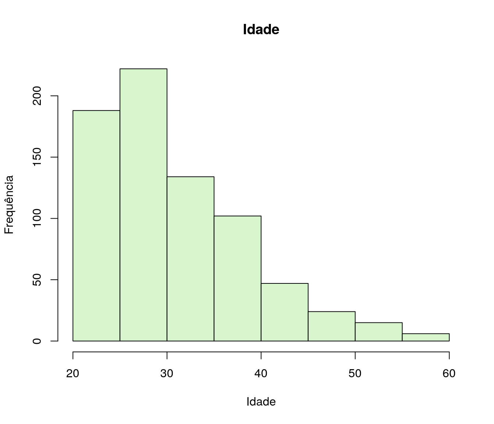
Gráfico 2
Variável com tratamento
plot(table(ar_idade), t = "h", xlab = "Idade", ylab = "Frequência", lwd = 3, cex.axis = 0.8,
main = "Idade")Gráfico 3
hist(ar_idade, breaks = breaks, include.lowest = TRUE, col = "#D8F6CE",
main = "Idade", xlab = "Idade", ylab = "Frequência")
2019
antigo$dataNasc <- as.Date(antigo$dataNasc, "%d/%m/%Y")
idade <- floor(difftime(Sys.Date(), antigo$dataNasc, units = "weeks")/52)
idade <- as.integer(idade)
antigo <- transform(antigo, tc_idade = idade)
ar_idade <- antigo$tc_idade[which(antigo$tc_idade > 15)]
h <- hist(ar_idade, plot = FALSE)
breaks <- h$breaks
classes <- cut(ar_idade, breaks = breaks,
include.lowest = TRUE, right = TRUE)
tb.idade <- as.data.frame(table(classes))
tb.idade$Perc <- 100 * prop.table(tb.idade$Freq)
names(tb.idade)[1] <- "Idade"
#pander:::pander(tb.idade)
hist(ar_idade, breaks = breaks, include.lowest = TRUE, col = "#D8F6CE",
main = "Idade", xlab = "Idade", ylab = "Frequência")
Tabela 3
Meses de aniversário
mes <- month(as.POSIXlt(quest$dataNasc, format="%d-%m-%Y"))
fa_mes <- table(mes) # frequência absoluta
fr_mes <- prop.table(fa_mes) # frequência relativa
fac_mes <- cumsum(fr_mes) # frequência acumulada
mes <- data.frame(niveis = names(fa_mes),
freq = as.vector(fa_mes),
freq_r = as.vector(fr_mes),
freq_ac = as.vector(fac_mes)) # unindo as informações
pander:::pander(mes) # gerando a tabela| niveis | freq | freq_r | freq_ac |
|---|---|---|---|
| 1 | 22 | 0.08765 | 0.08765 |
| 2 | 16 | 0.06375 | 0.1514 |
| 3 | 21 | 0.08367 | 0.2351 |
| 4 | 23 | 0.09163 | 0.3267 |
| 5 | 16 | 0.06375 | 0.3904 |
| 6 | 23 | 0.09163 | 0.4821 |
| 7 | 21 | 0.08367 | 0.5657 |
| 8 | 20 | 0.07968 | 0.6454 |
| 9 | 24 | 0.09562 | 0.741 |
| 10 | 20 | 0.07968 | 0.8207 |
| 11 | 29 | 0.1155 | 0.9363 |
| 12 | 16 | 0.06375 | 1 |
Gráfico 4
plot(mes$freq, t = "h", xlab = "Mês",
ylab = "Frequência", lwd = 6,
cex.axis = 0.8,main = "Mês de Aniversário")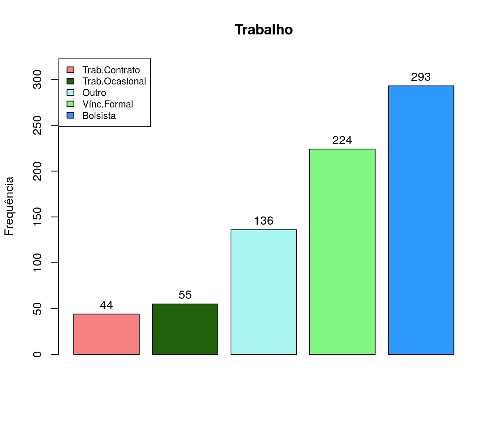
2019
mes <- month(as.POSIXlt(antigo$dataNasc, format="%d-%m-%Y"))
fa_mes <- table(mes) # frequência absoluta
fr_mes <- prop.table(fa_mes) # frequência relativa
fac_mes <- cumsum(fr_mes) # frequência acumulada
mes <- data.frame(niveis = names(fa_mes),
freq = as.vector(fa_mes),
freq_r = as.vector(fr_mes),
freq_ac = as.vector(fac_mes)) # unindo as informações
#pander:::pander(mes) # gerando a tabela
plot(mes$freq, t = "h", xlab = "Mês",
ylab = "Frequência", lwd = 6,
cex.axis = 0.8,main = "Mês de Aniversário")
Qual das seguintes categorias descreve melhor sua situação de emprego?
Tabela
quest$ln_tipoTrab <- tolower(iconv(quest$ln_tipoTrab,
to ='ASCII//TRANSLIT',
from = "UTF-8"))
classOpcoes <- c("trabalho com carteira assinada/vinculo formal",
"trabalho ocasional", "trabalho por contrato",
"bolsista em tempo integral")
quest$ln_tipoTrab[ !quest$ln_tipoTrab %in% classOpcoes ] <- "outro"
quest$ln_tipoTrab <- factor(quest$ln_tipoTrab,
levels = c("trabalho com carteira assinada/vinculo formal",
"trabalho ocasional", "trabalho por contrato",
"bolsista em tempo integral", "outro"))
fa_trab <- table(quest$ln_tipoTrab) # frequência absoluta
fr_trab <- prop.table(fa_trab) # frequência relativa
fac_trab <- cumsum(fr_trab) # frequência acumulada
trab <- data.frame(niveis = names(fa_trab),
freq = as.vector(fa_trab),
freq_r = as.vector(fr_trab),
freq_ac = as.vector(fac_trab)) # unindo as informações
pander:::pander(trab) # gerando a tabela| niveis | freq | freq_r | freq_ac |
|---|---|---|---|
| trabalho com carteira assinada/vinculo formal | 77 | 0.3068 | 0.3068 |
| trabalho ocasional | 24 | 0.09562 | 0.4024 |
| trabalho por contrato | 18 | 0.07171 | 0.4741 |
| bolsista em tempo integral | 87 | 0.3466 | 0.8207 |
| outro | 45 | 0.1793 | 1 |
Gráfico
trab$niveis <- c("Vínc.Formal", "Trab.Ocasional",
"Trab.Contrato", "Bolsista",
"Outro")
trab_ord <- arrange(trab, trab$freq)
barplot(trab_ord$freq,
#names.arg = trab_ord$niveis,
col = paleta,
main = 'Trabalho',
ylab = 'Frequência',
xlab = '',
ylim = c(0, max(trab_ord$freq)+10)
#horiz = T,
#las=2,
)
legend("topleft",
legend = trab_ord$niveis,
fill = paleta,
cex = .8)
text(x = as.vector(barplot(trab_ord$freq, plot = FALSE)),
y = as.vector(trab_ord$freq) + 5,
labels = trab_ord$freq, cex = 1)
2019
antigo$ln_tipoTrab <- tolower(iconv(antigo$ln_tipoTrab,
to ='ASCII//TRANSLIT',
from = "UTF-8"))
classOpcoes <- c("trabalho com carteira assinada/vinculo formal",
"trabalho ocasional", "trabalho por contrato",
"bolsista em tempo integral")
antigo$ln_tipoTrab[ !antigo$ln_tipoTrab %in% classOpcoes ] <- "outro"
antigo$ln_tipoTrab <- factor(antigo$ln_tipoTrab,
levels = c("trabalho com carteira assinada/vinculo formal",
"trabalho ocasional", "trabalho por contrato",
"bolsista em tempo integral", "outro"))
fa_trab <- table(antigo$ln_tipoTrab) # frequência absoluta
fr_trab <- prop.table(fa_trab) # frequência relativa
fac_trab <- cumsum(fr_trab) # frequência acumulada
trab <- data.frame(niveis = names(fa_trab),
freq = as.vector(fa_trab),
freq_r = as.vector(fr_trab),
freq_ac = as.vector(fac_trab)) # unindo as informações
#pander:::pander(trab) # gerando a tabela
trab$niveis <- c("Vínc.Formal", "Trab.Ocasional",
"Trab.Contrato", "Bolsista",
"Outro")
trab_ord <- arrange(trab, trab$freq)
barplot(trab_ord$freq,
#names.arg = trab_ord$niveis,
col = paleta,
main = 'Trabalho',
ylab = 'Frequência',
xlab = '',
ylim = c(0, max(trab_ord$freq)+10)
#horiz = T,
#las=2,
)
legend("topleft",
legend = trab_ord$niveis,
fill = paleta,
cex = .8)
text(x = as.vector(barplot(trab_ord$freq, plot = FALSE)),
y = as.vector(trab_ord$freq) + 5,
labels = trab_ord$freq, cex = 1)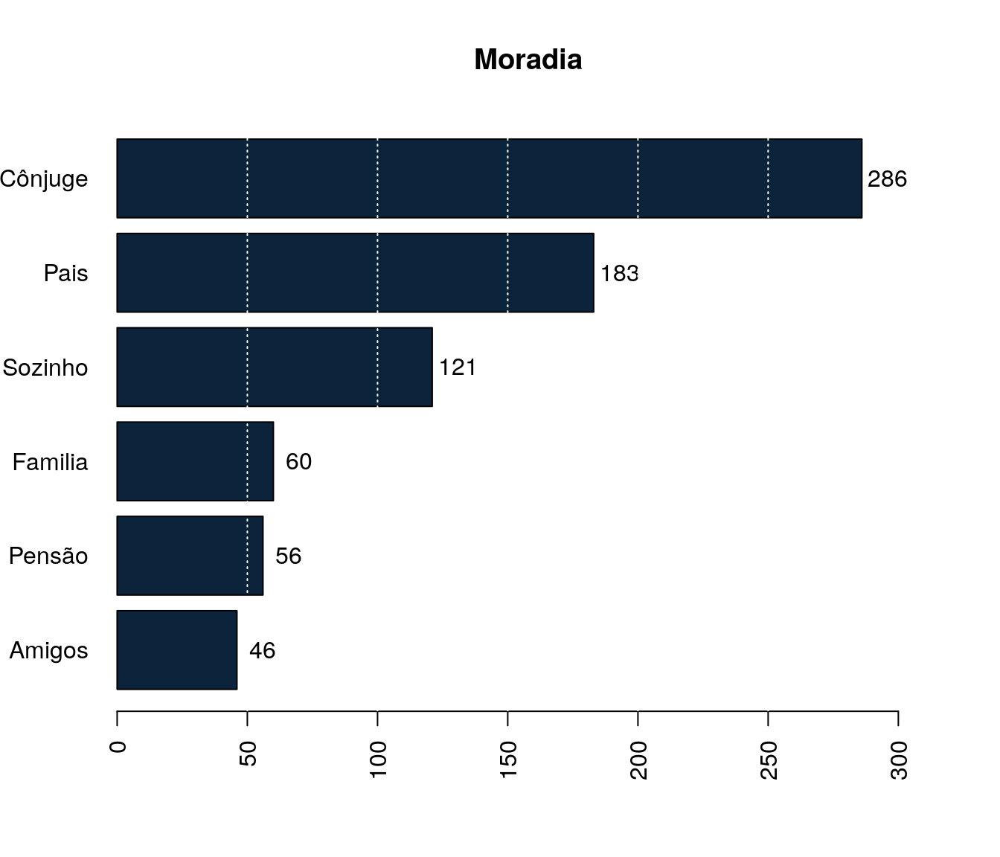
Você mora
Tabela
quest$ln_compMoradia <- tolower(iconv(quest$ln_compMoradia,
to ='ASCII//TRANSLIT', from = "UTF-8"))
quest$ln_compMoradia <- factor(quest$ln_compMoradia,
levels = c("com os pais", "com outros familiares", "com amigos",
"com o namorado(a)/noivo(a)/conjuge",
"pensao, quarto alugado ou algo similar", "sozinho"))
fa_mor <- table(quest$ln_compMoradia) # frequência absoluta
fr_mor <- prop.table(fa_mor) # frequência relativa
fac_mor <- cumsum(fr_mor) # frequência acumulada
mor <- data.frame(niveis = names(fa_mor),
freq = as.vector(fa_mor),
freq_r = as.vector(fr_mor),
freq_ac = as.vector(fac_mor)) # unindo as informações
pander:::pander(mor) # gerando a tabela| niveis | freq | freq_r | freq_ac |
|---|---|---|---|
| com os pais | 59 | 0.2351 | 0.2351 |
| com outros familiares | 15 | 0.05976 | 0.2948 |
| com amigos | 15 | 0.05976 | 0.3546 |
| com o namorado(a)/noivo(a)/conjuge | 98 | 0.3904 | 0.745 |
| pensao, quarto alugado ou algo similar | 17 | 0.06773 | 0.8127 |
| sozinho | 47 | 0.1873 | 1 |
Gráfico
mor$niveis <- c("Pais", "Familia",
"Amigos", "Cônjuge",
"Pensão", "Sozinho")
mor_ord <- arrange(mor, mor$freq)
barplot(mor_ord$freq, col = '#0B243B',
names.arg = mor_ord$niveis, horiz = T,
xlim = c(0, max(mor_ord$freq + 10)),
main = "Moradia",
las = 2)
text(y = as.vector(barplot(mor_ord$freq, plot = FALSE)),
x = as.vector(mor_ord$freq) + 5,
labels = mor_ord$freq, cex = 1)
abline(v=50, lty=3, col = '#FFFFFF')
abline(v=100, lty=3, col = '#FFFFFF')
abline(v=150, lty=3, col = '#FFFFFF')
abline(v=200, lty=3, col = '#FFFFFF')
abline(v=250, lty=3, col = '#FFFFFF')
abline(v=300, lty=3, col = '#FFFFFF')2019
antigo$ln_compMoradia <- tolower(iconv(antigo$ln_compMoradia,
to ='ASCII//TRANSLIT', from = "UTF-8"))
antigo$ln_compMoradia <- factor(antigo$ln_compMoradia,
levels = c("com os pais", "com outros familiares", "com amigos",
"com o namorado(a)/noivo(a)/conjuge",
"pensao, quarto alugado ou algo similar", "sozinho"))
fa_mor <- table(antigo$ln_compMoradia) # frequência absoluta
fr_mor <- prop.table(fa_mor) # frequência relativa
fac_mor <- cumsum(fr_mor) # frequência acumulada
mor <- data.frame(niveis = names(fa_mor),
freq = as.vector(fa_mor),
freq_r = as.vector(fr_mor),
freq_ac = as.vector(fac_mor)) # unindo as informações
#pander:::pander(mor) # gerando a tabela
mor$niveis <- c("Pais", "Familia",
"Amigos", "Cônjuge",
"Pensão", "Sozinho")
mor_ord <- arrange(mor, mor$freq)
barplot(mor_ord$freq, col = '#0B243B',
names.arg = mor_ord$niveis, horiz = T,
xlim = c(0, max(mor_ord$freq + 10)),
main = "Moradia",
las = 2)
text(y = as.vector(barplot(mor_ord$freq, plot = FALSE)),
x = as.vector(mor_ord$freq) + 5,
labels = mor_ord$freq, cex = 1)
abline(v=50, lty=3, col = '#FFFFFF')
abline(v=100, lty=3, col = '#FFFFFF')
abline(v=150, lty=3, col = '#FFFFFF')
abline(v=200, lty=3, col = '#FFFFFF')
abline(v=250, lty=3, col = '#FFFFFF')
abline(v=300, lty=3, col = '#FFFFFF')Quantos irmãos você tem?
Tabela 1
quest$td_numIrmao <- as.integer(quest$td_numIrmao)
tb.numIrmao <- as.data.frame(with(quest, table(td_numIrmao)))
tb.numIrmao$Perc <- 100 * prop.table(tb.numIrmao$Freq)
names(tb.numIrmao)[1] <- "Quant. de Irmãos"
pander:::pander(tb.numIrmao)| Quant. de Irmãos | Freq | Perc |
|---|---|---|
| 0 | 24 | 9.562 |
| 1 | 98 | 39.04 |
| 2 | 70 | 27.89 |
| 3 | 26 | 10.36 |
| 4 | 17 | 6.773 |
| 5 | 7 | 2.789 |
| 6 | 1 | 0.3984 |
| 7 | 5 | 1.992 |
| 9 | 3 | 1.195 |
Tabela 2
medidas <- data.frame(minimo = quantile(quest$td_numIrmao)[1],
quart1 = quantile(quest$td_numIrmao)[2],
media = mean(quest$td_numIrmao),
mediana = quantile(quest$td_numIrmao)[3],
moda = names(sort(table(quest$td_numIrmao),
decreasing = TRUE)[1]),
quart3 = quantile(quest$td_numIrmao)[4],
max = quantile(quest$td_numIrmao)[5])
row.names(medidas) <- NULL
pander(medidas)| minimo | quart1 | media | mediana | moda | quart3 | max |
|---|---|---|---|---|---|---|
| 0 | 1 | 1.94 | 2 | 1 | 2 | 9 |
disp <- data.frame(amplitude = diff(range(quest$td_numIrmao)),
variancia = var(quest$td_numIrmao),
desv_pad = sd(quest$td_numIrmao),
coef_var = 100*sd(quest$td_numIrmao)/mean(quest$td_numIrmao))
pander(disp)| amplitude | variancia | desv_pad | coef_var |
|---|---|---|---|
| 9 | 2.552 | 1.598 | 82.34 |
Gráfico 1
plot(table(quest$td_numIrmao), t = "h", xlab = "Quantidade",
ylab = "Frequência",
lwd = 6, cex.axis = 0.8, main = "Número de Irmãos")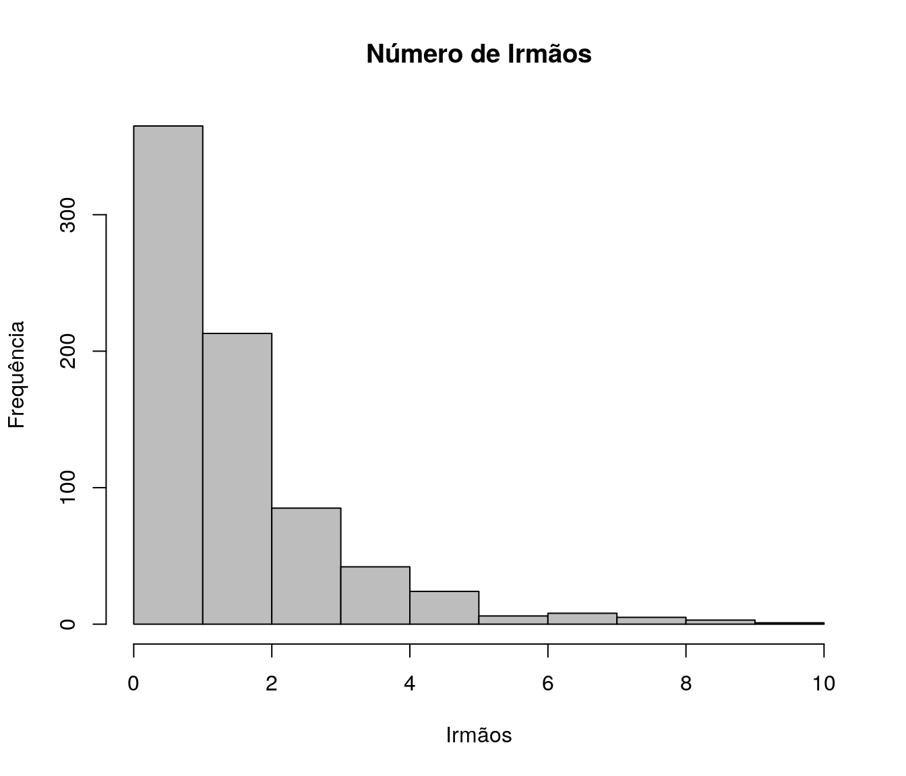
Gráfico 2
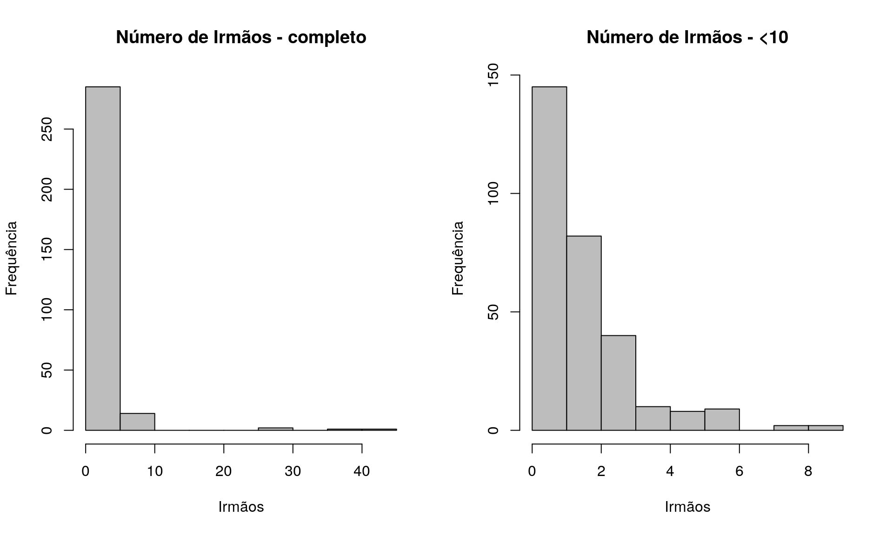
Gráfico 3
with(quest, hist(td_numIrmao, horizontal=T,
col = "#BDBDBD",
main = "Número de Irmãos",
xlab = 'Irmãos',
ylab = 'Frequência'))
2019
par(mfrow = c(1,2))
with(antigo, hist(td_numIrmao, horizontal=T,
col = "#BDBDBD",
main = "Número de Irmãos - completo",
xlab = 'Irmãos',
ylab = 'Frequência'))
a2 <- subset(antigo, antigo$td_numIrmao < 10)
with(a2, hist(td_numIrmao, horizontal=T,
col = "#BDBDBD",
main = "Número de Irmãos - <10",
xlab = 'Irmãos',
ylab = 'Frequência'))
Qual a sua origem?
Tabela
quest$ln_origem <- tolower(iconv(quest$ln_origem,
to ='ASCII//TRANSLIT',
from = "UTF-8"))
quest$ln_origem <- factor(quest$ln_origem,
levels = c("curitiba", "regiao metropolitana",
"interior do parana",
"outro estado", "outro pais"))
fa_origem <- table(quest$ln_origem) # frequência absoluta
fr_origem <- prop.table(fa_origem) # frequência relativa
fac_origem <- cumsum(fr_origem) # frequência acumulada
origem <- data.frame(niveis = names(fa_origem),
freq = as.vector(fa_origem),
freq_r = as.vector(fr_origem),
freq_ac = as.vector(fac_origem)) # unindo as informações
pander:::pander(origem) # gerando a tabela| niveis | freq | freq_r | freq_ac |
|---|---|---|---|
| curitiba | 53 | 0.2112 | 0.2112 |
| regiao metropolitana | 6 | 0.0239 | 0.2351 |
| interior do parana | 101 | 0.4024 | 0.6375 |
| outro estado | 80 | 0.3187 | 0.9562 |
| outro pais | 11 | 0.04382 | 1 |
Gráfico
origem$niveis <- c("Curitiba",
"Região metropolitana",
"Interior PR", "OutroEstado",
"OutroPaís")
origem_ord <- arrange(origem, origem$freq)
barplot(origem_ord$freq,
#names.arg = origem_ord$niveis,
col = paleta,
main = 'Origem',
ylab = 'Frequência',
xlab = '',
ylim = c(0, max(origem_ord$freq)+10)
#horiz = T,
#las=2,
)
legend("topleft",
legend = origem_ord$niveis,
fill = paleta,
cex = .8)
text(x = as.vector(barplot(origem_ord$freq, plot = FALSE)),
y = as.vector(origem_ord$freq) + 5,
labels = origem_ord$freq, cex = 1)Possui habilitação para dirigir? Qual categoria?
Tabela
quest$ln_tipoHab <-
tolower(iconv(quest$ln_tipoHab,
to ='ASCII//TRANSLIT',
from = "UTF-8"))
quest$ln_tipoHab <- factor(quest$ln_tipoHab,
levels = c("nao", "a (moto)",
"b (carro)",
"a e b (moto e carro)",
"superior a b"))
fa_habit <- table(quest$ln_tipoHab) # frequência absoluta
fr_habit <- prop.table(fa_habit) # frequência relativa
fac_habit <- cumsum(fr_habit) # frequência acumulada
habit <- data.frame(niveis = names(fa_habit),
freq = as.vector(fa_habit),
freq_r = as.vector(fr_habit),
freq_ac = as.vector(fac_habit)) # unindo as informações
pander:::pander(habit) # gerando a tabela| niveis | freq | freq_r | freq_ac |
|---|---|---|---|
| nao | 28 | 0.1116 | 0.1116 |
| a (moto) | 2 | 0.007968 | 0.1195 |
| b (carro) | 153 | 0.6096 | 0.7291 |
| a e b (moto e carro) | 64 | 0.255 | 0.9841 |
| superior a b | 4 | 0.01594 | 1 |
Gráfico
habit$niveis <- c("Não", "A", "B", "A e B", "Outro")
habit_ord <- arrange(habit, desc(habit$niveis))
barplot(habit_ord$freq, col = '#F3F781',
names.arg = habit_ord$niveis, horiz = T,
xlim = c(0, max(habit_ord$freq + 10)),
main = "Habilitação",
las = 2)
text(y = as.vector(barplot(habit_ord$freq, plot = FALSE)),
x = as.vector(habit_ord$freq) + 5,
labels = habit_ord$freq, cex = 1)
abline(v=50, lty=3, col = 2)
abline(v=100, lty=3, col = 2)
abline(v=150, lty=3, col = 2)
abline(v=200, lty=3, col = 2)
abline(v=250, lty=3, col = 2)
abline(v=300, lty=3, col = 2)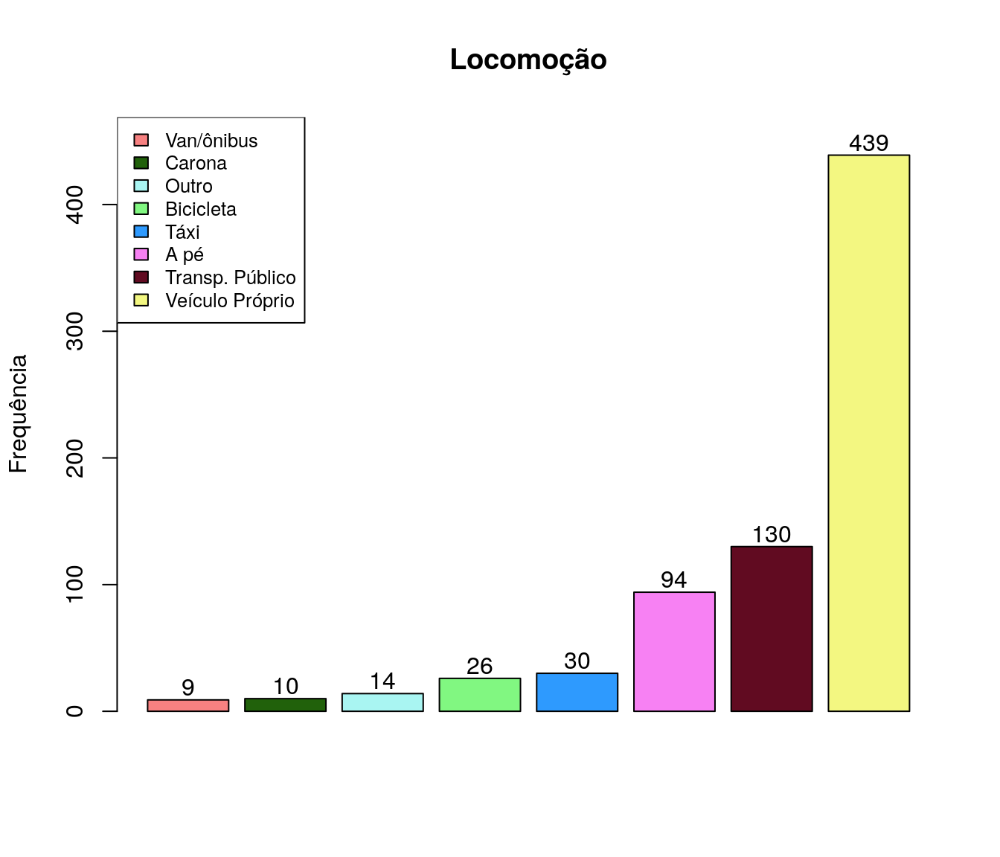
2019
antigo$ln_tipoHab <-
tolower(iconv(antigo$ln_tipoHab,
to ='ASCII//TRANSLIT',
from = "UTF-8"))
antigo$ln_tipoHab <- factor(antigo$ln_tipoHab,
levels = c("nao", "a (moto)",
"b (carro)",
"a e b (moto e carro)",
"superior a b"))
fa_habit <- table(antigo$ln_tipoHab) # frequência absoluta
fr_habit <- prop.table(fa_habit) # frequência relativa
fac_habit <- cumsum(fr_habit) # frequência acumulada
habit <- data.frame(niveis = names(fa_habit),
freq = as.vector(fa_habit),
freq_r = as.vector(fr_habit),
freq_ac = as.vector(fac_habit)) # unindo as informações
#pander:::pander(habit) # gerando a tabela
habit$niveis <- c("Não", "A", "B", "A e B", "Outro")
habit_ord <- arrange(habit, desc(habit$niveis))
barplot(habit_ord$freq, col = '#F3F781',
names.arg = habit_ord$niveis, horiz = T,
xlim = c(0, max(habit_ord$freq + 10)),
main = "Habilitação",
las = 2)
text(y = as.vector(barplot(habit_ord$freq, plot = FALSE)),
x = as.vector(habit_ord$freq) + 5,
labels = habit_ord$freq, cex = 1)
abline(v=50, lty=3, col = 2)
abline(v=100, lty=3, col = 2)
abline(v=150, lty=3, col = 2)
abline(v=200, lty=3, col = 2)
abline(v=250, lty=3, col = 2)
abline(v=300, lty=3, col = 2)
Qual seu meio de transporte predominante para ir para Universidade?
Tabela
quest$ln_tipoTransp <- tolower(iconv(quest$ln_tipoTransp,
to ='ASCII//TRANSLIT',
from = "UTF-8"))
classOpcoes <- c("carro/moto proprio", "transporte publico", "a pe", "bicicleta",
"carona com amigos", "taxi/aplicativo", "servico fretado de van/onibus")
quest$ln_tipoTransp[ !quest$ln_tipoTransp %in% classOpcoes ] <- "outro"
quest$ln_tipoTransp <- factor(quest$ln_tipoTransp,
levels = c("carro/moto proprio", "transporte publico", "a pe",
"bicicleta", "carona com amigos", "taxi/aplicativo",
"servico fretado de van/onibus", "outro"))
fa_transp <- table(quest$ln_tipoTransp) # frequência absoluta
fr_transp <- prop.table(fa_transp) # frequência relativa
fac_transp <- cumsum(fr_transp) # frequência acumulada
transp <- data.frame(niveis = names(fa_transp),
freq = as.vector(fa_transp),
freq_r = as.vector(fr_transp),
freq_ac = as.vector(fac_transp)) # unindo as informações
pander:::pander(transp) # gerando a tabela| niveis | freq | freq_r | freq_ac |
|---|---|---|---|
| carro/moto proprio | 147 | 0.5857 | 0.5857 |
| transporte publico | 39 | 0.1554 | 0.741 |
| a pe | 33 | 0.1315 | 0.8725 |
| bicicleta | 7 | 0.02789 | 0.9004 |
| carona com amigos | 4 | 0.01594 | 0.9163 |
| taxi/aplicativo | 13 | 0.05179 | 0.9681 |
| servico fretado de van/onibus | 6 | 0.0239 | 0.992 |
| outro | 2 | 0.007968 | 1 |
Gráfico
transp$niveis <- c("Veículo Próprio", "Transp. Público", "A pé", "Bicicleta", "Carona", "Táxi",
"Van/ônibus", "Outro")
transp_ord <- arrange(transp, transp$freq)
barplot(transp_ord$freq,
#names.arg = transp_ord$niveis,
col = paleta,
main = 'Locomoção',
ylab = 'Frequência',
xlab = '',
ylim = c(0, max(transp_ord$freq)+10)
#horiz = T,
#las=2,
)
legend("topleft",
legend = transp_ord$niveis,
fill = paleta,
cex = .8)
text(x = as.vector(barplot(transp_ord$freq, plot = FALSE)),
y = as.vector(transp_ord$freq) + 5,
labels = transp_ord$freq, cex = 1)2019
antigo$ln_tipoTransp <- tolower(iconv(antigo$ln_tipoTransp,
to ='ASCII//TRANSLIT',
from = "UTF-8"))
classOpcoes <- c("carro/moto proprio", "transporte publico", "a pe", "bicicleta",
"carona com amigos", "taxi/aplicativo", "servico fretado de van/onibus")
antigo$ln_tipoTransp[ !antigo$ln_tipoTransp %in% classOpcoes ] <- "outro"
antigo$ln_tipoTransp <- factor(antigo$ln_tipoTransp,
levels = c("carro/moto proprio", "transporte publico", "a pe",
"bicicleta", "carona com amigos", "taxi/aplicativo",
"servico fretado de van/onibus", "outro"))
fa_transp <- table(antigo$ln_tipoTransp) # frequência absoluta
fr_transp <- prop.table(fa_transp) # frequência relativa
fac_transp <- cumsum(fr_transp) # frequência acumulada
transp <- data.frame(niveis = names(fa_transp),
freq = as.vector(fa_transp),
freq_r = as.vector(fr_transp),
freq_ac = as.vector(fac_transp)) # unindo as informações
#pander:::pander(transp) # gerando a tabela
transp$niveis <- c("Veículo Próprio", "Transp. Público", "A pé", "Bicicleta", "Carona", "Táxi",
"Van/ônibus", "Outro")
transp_ord <- arrange(transp, transp$freq)
barplot(transp_ord$freq,
#names.arg = transp_ord$niveis,
col = paleta,
main = 'Locomoção',
ylab = 'Frequência',
xlab = '',
ylim = c(0, max(transp_ord$freq)+10)
#horiz = T,
#las=2,
)
legend("topleft",
legend = transp_ord$niveis,
fill = paleta,
cex = .8)
text(x = as.vector(barplot(transp_ord$freq, plot = FALSE)),
y = as.vector(transp_ord$freq) + 5,
labels = transp_ord$freq, cex = 1)Em média, quanto tempo você demora para chegar a Universidade?
Tabela 1
Variável sem tratamento
quest$tc_tempoPUniv <- as.integer(quest$tc_tempoPUniv)
h <- hist(quest$tc_tempoPUniv, plot = FALSE) #histograma
breaks <- h$breaks #armazenando os breaks do histograma
classes <- cut(quest$tc_tempoPUniv, breaks = breaks,
include.lowest = TRUE, right = TRUE) #gerando classes
tb.tempo <- as.data.frame(table(classes)) #gerando tabela com faixas
tb.tempo$Perc <- prop.table(tb.tempo$Freq)
names(tb.tempo)[1] <- "Ano"
pander:::pander(tb.tempo)| Ano | Freq | Perc |
|---|---|---|
| [0,500] | 248 | 0.988 |
| (500,1e+03] | 2 | 0.007968 |
| (1e+03,1.5e+03] | 0 | 0 |
| (1.5e+03,2e+03] | 0 | 0 |
| (2e+03,2.5e+03] | 0 | 0 |
| (2.5e+03,3e+03] | 0 | 0 |
| (3e+03,3.5e+03] | 0 | 0 |
| (3.5e+03,4e+03] | 1 | 0.003984 |
Tabela 2
Variável com tratamento
tempoPUniv2 <- subset(quest$tc_tempoPUniv, quest$tc_tempoPUniv < 800)
h <- hist(tempoPUniv2, plot = FALSE) #histograma
breaks <- h$breaks #armazenando os breaks do histograma
classes <- cut(tempoPUniv2, breaks = breaks,
include.lowest = TRUE, right = TRUE) #gerando classes
tb.tempo <- as.data.frame(table(classes)) #gerando tabela com faixas
tb.tempo$Perc <- prop.table(tb.tempo$Freq)
names(tb.tempo)[1] <- "Ano"
pander:::pander(tb.tempo)| Ano | Freq | Perc |
|---|---|---|
| [0,50] | 224 | 0.9032 |
| (50,100] | 15 | 0.06048 |
| (100,150] | 3 | 0.0121 |
| (150,200] | 3 | 0.0121 |
| (200,250] | 2 | 0.008065 |
| (250,300] | 0 | 0 |
| (300,350] | 0 | 0 |
| (350,400] | 0 | 0 |
| (400,450] | 1 | 0.004032 |
Tabela 3
medidas <- data.frame(minimo = quantile(tempoPUniv2)[1],
quart1 = quantile(tempoPUniv2)[2],
media = mean(tempoPUniv2),
mediana = quantile(tempoPUniv2)[3],
moda = names(sort(table(tempoPUniv2),
decreasing = TRUE)[1]),
quart3 = quantile(tempoPUniv2)[4],
max = quantile(tempoPUniv2)[5])
row.names(medidas) <- NULL
pander(medidas)| minimo | quart1 | media | mediana | moda | quart3 | max |
|---|---|---|---|---|---|---|
| 0 | 15 | 31.06 | 20 | 20 | 30 | 450 |
disp <- data.frame(amplitude = diff(range(tempoPUniv2)),
variancia = var(tempoPUniv2),
desv_pad = sd(tempoPUniv2),
coef_var = 100*sd(tempoPUniv2)/mean(tempoPUniv2))
pander(disp)| amplitude | variancia | desv_pad | coef_var |
|---|---|---|---|
| 450 | 1759 | 41.94 | 135 |
Em média, quantas vezes você usa táxi/aplicativo de transporte durante o mês?
Tabela 1
quest$td_qtddServTransp <- as.integer(quest$td_qtddServTransp)
h <- hist(quest$td_qtddServTransp, plot = FALSE) #histograma
breaks <- h$breaks #armazenando os breaks do histograma
classes <- cut(quest$td_qtddServTransp, breaks = breaks,
include.lowest = TRUE, right = TRUE) #gerando classes
tb.apl <- as.data.frame(table(classes)) #gerando tabela com faixas
tb.apl$Perc <- prop.table(tb.apl$Freq)
names(tb.apl)[1] <- "Ano"
pander:::pander(tb.apl)| Ano | Freq | Perc |
|---|---|---|
| [0,5] | 209 | 0.8327 |
| (5,10] | 29 | 0.1155 |
| (10,15] | 7 | 0.02789 |
| (15,20] | 2 | 0.007968 |
| (20,25] | 0 | 0 |
| (25,30] | 1 | 0.003984 |
| (30,35] | 0 | 0 |
| (35,40] | 1 | 0.003984 |
| (40,45] | 0 | 0 |
| (45,50] | 0 | 0 |
| (50,55] | 0 | 0 |
| (55,60] | 2 | 0.007968 |
Tabela 2
medidas <- data.frame(minimo = quantile(quest$td_qtddServTransp)[1],
quart1 = quantile(quest$td_qtddServTransp)[2],
media = mean(quest$td_qtddServTransp),
mediana = quantile(quest$td_qtddServTransp)[3],
moda = names(sort(table(quest$td_qtddServTransp),
decreasing = TRUE)[1]),
quart3 = quantile(quest$td_qtddServTransp)[4],
max = quantile(quest$td_qtddServTransp)[5])
row.names(medidas) <- NULL
pander(medidas)| minimo | quart1 | media | mediana | moda | quart3 | max |
|---|---|---|---|---|---|---|
| 0 | 0 | 3.466 | 1 | 0 | 4 | 60 |
disp <- data.frame(amplitude = diff(range(quest$td_qtddServTransp)),
variancia = var(quest$td_qtddServTransp),
desv_pad = sd(quest$td_qtddServTransp),
coef_var = 100*sd(quest$td_qtddServTransp)/mean(quest$td_qtddServTransp))
pander(disp)| amplitude | variancia | desv_pad | coef_var |
|---|---|---|---|
| 60 | 48.95 | 6.996 | 201.8 |

Possui animal de estimação?
Tabela
quest$ln_pet <-
tolower(iconv(quest$ln_pet,
to ='ASCII//TRANSLIT',
from = "UTF-8"))
quest$ln_pet <- gsub(",", ";", quest$ln_pet)
quest$ln_pet[ which(is.na(quest$ln_pet)) ] <- "nao possuo"
ar_pet<- cSplit(quest, "ln_pet", sep = ";", direction = "long")$ln_pet
ar_pet <- factor(ar_pet, levels = c("nao possuo", "cachorro",
"gato", "passaro",
"peixe", "tartaruga",
"coelho", "outro"))
fa_pet <- table(ar_pet) # frequência absoluta
fr_pet <- prop.table(fa_pet) # frequência relativa
fac_pet <- cumsum(fr_pet) # frequência acumulada
pet <- data.frame(niveis = names(fa_pet),
freq = as.vector(fa_pet),
freq_r = as.vector(fr_pet),
freq_ac = as.vector(fac_pet)) # unindo as informações
pander:::pander(pet) # gerando a tabela| niveis | freq | freq_r | freq_ac |
|---|---|---|---|
| nao possuo | 96 | 0.3168 | 0.3168 |
| cachorro | 126 | 0.4158 | 0.7327 |
| gato | 40 | 0.132 | 0.8647 |
| passaro | 13 | 0.0429 | 0.9076 |
| peixe | 13 | 0.0429 | 0.9505 |
| tartaruga | 2 | 0.006601 | 0.9571 |
| coelho | 5 | 0.0165 | 0.9736 |
| outro | 8 | 0.0264 | 1 |
Gráfico 1
ppet <- c(sum(quest$ln_pet == "nao possuo"),
sum(quest$ln_pet != "nao possuo"))
names(ppet) <- c("Não possui", "Possui")
par(mfrow = c(1,2))
ar_color <- c("#5882FA", "#FA5858")
pie(ppet, col = ar_color,
main = "Animais de estimação",
labels = ppet)
legend("topleft", legend = names(ppet), fill = ar_color, cex = 1)
barplot(ppet, col = ar_color,
main = "Animais de estimação",
names.arg = names(ppet),
ylim = c(0, max(ppet + 20)))
text(x = as.vector(barplot(ppet, plot = FALSE)),
y = as.vector(ppet) + 10,
labels = ppet, cex = 1)
Gráfico 2
pet$niveis <- c("Não", "Cão", "Gato", "Ave", "Peixe",
"Tartaruga", "Coelho", "Outro")
pet_ord <- arrange(pet, pet$freq)
barplot(pet_ord$freq, col = '#E0F8F7',
names.arg = pet_ord$niveis, horiz = T,
xlim = c(0, max(pet_ord$freq + 10)),
main = "Animais de estimação",
las = 2)
text(y = as.vector(barplot(pet_ord$freq, plot = FALSE)),
x = as.vector(pet_ord$freq) + 5,
labels = pet_ord$freq, cex = 1)
abline(v=50, lty=3, col = 2)
abline(v=100, lty=3, col = 2)
abline(v=150, lty=3, col = 2)
abline(v=200, lty=3, col = 2)
abline(v=250, lty=3, col = 2)
abline(v=300, lty=3, col = 2)
Toca algum instrumento musical?
Tabela
quest$ln_instr <-
tolower(iconv(quest$ln_instr,
to ='ASCII//TRANSLIT',
from = "UTF-8"))
quest$ln_instr <- gsub(",", ";", quest$ln_instr)
quest$ln_instr[ which(is.na(quest$ln_instr)) ] <- "nao toco nenhum instrumento"
ar_inst<- cSplit(quest, "ln_instr", sep = ";", direction = "long")$ln_instr
ar_inst <- factor(ar_inst, levels = c("nao toco nenhum instrumento",
"violao", "guitarra",
"teclado", "contrabaixo",
"bateria", "piano",
"flauta", "outro"))
fa_inst <- table(ar_inst) # frequência absoluta
fr_inst <- prop.table(fa_inst) # frequência relativa
fac_inst <- cumsum(fr_inst) # frequência acumulada
inst <- data.frame(niveis = names(fa_inst),
freq = as.vector(fa_inst),
freq_r = as.vector(fr_inst),
freq_ac = as.vector(fac_inst)) # unindo as informações
pander:::pander(inst) # gerando a tabela| niveis | freq | freq_r | freq_ac |
|---|---|---|---|
| nao toco nenhum instrumento | 173 | 0.5925 | 0.5925 |
| violao | 49 | 0.1678 | 0.7603 |
| guitarra | 11 | 0.03767 | 0.7979 |
| teclado | 13 | 0.04452 | 0.8425 |
| contrabaixo | 6 | 0.02055 | 0.863 |
| bateria | 3 | 0.01027 | 0.8733 |
| piano | 14 | 0.04795 | 0.9212 |
| flauta | 5 | 0.01712 | 0.9384 |
| outro | 18 | 0.06164 | 1 |
Gráfico 1
pinst <- c(sum(quest$ln_instr == "nao toco nenhum instrumento"),
sum(quest$ln_pet != "nao toco nenhum instrumento"))
names(pinst) <- c("Toca", "Não toca")
par(mfrow = c(1,2))
ar_color <- c("#5882FA", "#FA5858")
pie(pinst, col = ar_color,
main = "Instrumentos musicais",
labels = pinst)
legend("topleft", legend = names(pinst), fill = ar_color, cex = 1)
barplot(pinst, col = ar_color,
main = "Instrumentos musicais",
names.arg = names(pinst),
ylim = c(0, max(pinst + 20)))
text(x = as.vector(barplot(pinst, plot = FALSE)),
y = as.vector(pinst) + 10,
labels = pinst, cex = 1)
Gráfico 2
inst$niveis <- c("Não", "Violão", "Guitarra", "Teclado", "Baixo",
"Bateria", "Piano", "Flauta", "Outro")
inst_ord <- arrange(inst, inst$freq)
barplot(inst_ord$freq, col = '#CEF6CE',
names.arg = inst_ord$niveis, horiz = T,
xlim = c(0, max(inst_ord$freq + 10)),
main = "Instrumentos musicais",
las = 2)
text(y = as.vector(barplot(inst_ord$freq, plot = FALSE)),
x = as.vector(inst_ord$freq) + 5,
labels = inst_ord$freq, cex = 1)
abline(v=50, lty=3, col = 2)
abline(v=100, lty=3, col = 2)
abline(v=150, lty=3, col = 2)
abline(v=200, lty=3, col = 2)
abline(v=250, lty=3, col = 2)
abline(v=300, lty=3, col = 2)
De quais redes sociais você participa?
Tabela
quest$ln_rede <- gsub(",", ";", quest$ln_rede)
quest$ln_rede[ which(is.na(quest$ln_rede)) ] <- "Nenhuma"
ar_rede<- cSplit(quest, "ln_rede", sep = ";", direction = "long")$ln_rede
ar_rede <- factor(ar_rede, levels = c("Facebook", "Twitter", "Google+", "Instagram",
"Linkedin", "Outras", "Nenhuma"))
fa_rede <- table(ar_rede) # frequência absoluta
fr_rede <- prop.table(fa_rede) # frequência relativa
fac_rede <- cumsum(fr_rede) # frequência acumulada
rede <- data.frame(niveis = names(fa_rede),
freq = as.vector(fa_rede),
freq_r = as.vector(fr_rede),
freq_ac = as.vector(fac_rede)) # unindo as informações
rede$niveis <- as.vector(rede$niveis)
rede[7,1] <- 'Nao tem'
pander:::pander(rede) # gerando a tabela| niveis | freq | freq_r | freq_ac |
|---|---|---|---|
| 205 | 0.3203 | 0.3203 | |
| 51 | 0.07969 | 0.4 | |
| Google+ | 33 | 0.05156 | 0.4516 |
| 207 | 0.3234 | 0.775 | |
| 114 | 0.1781 | 0.9531 | |
| Outras | 21 | 0.03281 | 0.9859 |
| Nao tem | 9 | 0.01406 | 1 |
Gráfico
rede$niveis <- c('Face', 'Twitter', 'Google+',
'Insta', 'Linkedin', 'Outras',
'Nao tem')
rede_ord <- arrange(rede, rede$freq)
bp <- barplot(rede_ord$freq,
names.arg = rede_ord$niveis,
col = '#81F7BE',
main = 'Redes sociais',
xlab = 'Frequência',
ylab = '',
horiz = T,
las=2,
xlim = c(0, max(rede_ord$freq)+50))
text(y = c(bp),
x = rede_ord$freq,
labels = rede_ord$freq,
pos = 4)
abline(v=50, lty=3, col = 2)
abline(v=100, lty=3, col = 2)
abline(v=150, lty=3, col = 2)
abline(v=200, lty=3, col = 2)
abline(v=250, lty=3, col = 2)
abline(v=300, lty=3, col = 2)Questões extra
Quantos anos você acha que a pessoa da foto abaixo tem?
Foram mostradas 2 fotos distintas: uma para os 174 primeiros respondentes e outra pros demais:

|
Geral
Tabela 1
quest$tc_idadeProf <- as.numeric(quest$tc_idadeProf)
h <- hist(quest$tc_idadeProf, plot = FALSE) #histograma
breaks <- h$breaks #armazenando os breaks do histograma
classes <- cut(quest$tc_idadeProf, breaks = breaks,
include.lowest = TRUE, right = TRUE) #gerando classes
tb.idade <- as.data.frame(table(classes)) #gerando tabela com faixas
tb.idade$Perc <- prop.table(tb.idade$Freq)
names(tb.idade)[1] <- "Idade"
pander:::pander(tb.idade)| Idade | Freq | Perc |
|---|---|---|
| [35,40] | 25 | 0.0996 |
| (40,45] | 66 | 0.2629 |
| (45,50] | 81 | 0.3227 |
| (50,55] | 50 | 0.1992 |
| (55,60] | 20 | 0.07968 |
| (60,65] | 7 | 0.02789 |
| (65,70] | 2 | 0.007968 |
Tabela 2
medidas <- data.frame(minimo = quantile(quest$tc_idadeProf)[1],
quart1 = quantile(quest$tc_idadeProf)[2],
media = mean(quest$tc_idadeProf),
mediana = quantile(quest$tc_idadeProf)[3],
moda = names(sort(table(quest$tc_idadeProf),
decreasing = TRUE)[1]),
quart3 = quantile(quest$tc_idadeProf)[4],
max = quantile(quest$tc_idadeProf)[5])
row.names(medidas) <- NULL
pander(medidas)| minimo | quart1 | media | mediana | moda | quart3 | max |
|---|---|---|---|---|---|---|
| 35 | 45 | 48.75 | 48 | 50 | 53 | 70 |
disp <- data.frame(amplitude = diff(range(quest$tc_idadeProf)),
variancia = var(quest$tc_idadeProf),
desv_pad = sd(quest$tc_idadeProf),
coef_var = 100*sd(quest$tc_idadeProf)/mean(quest$tc_idadeProf))
pander(disp)| amplitude | variancia | desv_pad | coef_var |
|---|---|---|---|
| 35 | 39.9 | 6.317 | 12.96 |
Gráfico 1
plot(table(quest$tc_idadeProf), t = "h", xlab = "Idade", ylab = "Frequência",
lwd = 6, cex.axis = 0.8, main = "Idade professor")


Foto 1
Tabela 1
idade_prof1 <- quest$tc_idadeProf[1:174]
h <- hist(idade_prof1, plot = FALSE) #histograma
breaks <- h$breaks #armazenando os breaks do histograma
classes <- cut(idade_prof1, breaks = breaks,
include.lowest = TRUE, right = TRUE) #gerando classes
tb.idade <- as.data.frame(table(classes)) #gerando tabela com faixas
tb.idade$Perc <- prop.table(tb.idade$Freq)
names(tb.idade)[1] <- "Idade"
pander:::pander(tb.idade)| Idade | Freq | Perc |
|---|---|---|
| [35,40] | 12 | 0.06897 |
| (40,45] | 37 | 0.2126 |
| (45,50] | 59 | 0.3391 |
| (50,55] | 40 | 0.2299 |
| (55,60] | 17 | 0.0977 |
| (60,65] | 7 | 0.04023 |
| (65,70] | 2 | 0.01149 |
Tabela 2
idade_prof11 <- quest[1:174,]
medidas <- data.frame(minimo = quantile(idade_prof11$tc_idadeProf)[1],
quart1 = quantile(idade_prof11$tc_idadeProf)[2],
media = mean(idade_prof11$tc_idadeProf),
mediana = quantile(idade_prof11$tc_idadeProf)[3],
moda = names(sort(table(idade_prof11$tc_idadeProf),
decreasing = TRUE)[1]),
quart3 = quantile(idade_prof11$tc_idadeProf)[4],
max = quantile(idade_prof11$tc_idadeProf)[5])
row.names(medidas) <- NULL
pander(medidas)| minimo | quart1 | media | mediana | moda | quart3 | max |
|---|---|---|---|---|---|---|
| 35 | 45 | 50.03 | 50 | 50 | 55 | 70 |
disp <- data.frame(amplitude = diff(range(idade_prof11$tc_idadeProf)),
variancia = var(idade_prof11$tc_idadeProf),
desv_pad = sd(idade_prof11$tc_idadeProf),
coef_var = 100*sd(idade_prof11$tc_idadeProf)/mean(idade_prof11$tc_idadeProf))
pander(disp)| amplitude | variancia | desv_pad | coef_var |
|---|---|---|---|
| 35 | 40.77 | 6.385 | 12.76 |


Foto 2
Tabela 1
idade_prof2 <- quest$tc_idadeProf[175:nrow(quest)]
h <- hist(idade_prof2, plot = FALSE) #histograma
breaks <- h$breaks #armazenando os breaks do histograma
classes <- cut(idade_prof2, breaks = breaks,
include.lowest = TRUE, right = TRUE) #gerando classes
tb.idade <- as.data.frame(table(classes)) #gerando tabela com faixas
tb.idade$Perc <- prop.table(tb.idade$Freq)
names(tb.idade)[1] <- "Idade"
pander:::pander(tb.idade)| Idade | Freq | Perc |
|---|---|---|
| [35,40] | 13 | 0.1688 |
| (40,45] | 29 | 0.3766 |
| (45,50] | 22 | 0.2857 |
| (50,55] | 10 | 0.1299 |
| (55,60] | 3 | 0.03896 |
Tabela 2
idade_prof22 <- quest[174:nrow(quest),]
medidas <- data.frame(minimo = quantile(idade_prof22$tc_idadeProf)[1],
quart1 = quantile(idade_prof22$tc_idadeProf)[2],
media = mean(idade_prof22$tc_idadeProf),
mediana = quantile(idade_prof22$tc_idadeProf)[3],
moda = names(sort(table(idade_prof22$tc_idadeProf),
decreasing = TRUE)[1]),
quart3 = quantile(idade_prof22$tc_idadeProf)[4],
max = quantile(idade_prof22$tc_idadeProf)[5])
row.names(medidas) <- NULL
pander(medidas)| minimo | quart1 | media | mediana | moda | quart3 | max |
|---|---|---|---|---|---|---|
| 36 | 42 | 46.06 | 45 | 45 | 50 | 62 |
disp <- data.frame(amplitude = diff(range(idade_prof22$tc_idadeProf)),
variancia = var(idade_prof22$tc_idadeProf),
desv_pad = sd(idade_prof22$tc_idadeProf),
coef_var = 100*sd(idade_prof22$tc_idadeProf)/mean(idade_prof22$tc_idadeProf))
pander(disp)| amplitude | variancia | desv_pad | coef_var |
|---|---|---|---|
| 26 | 29.18 | 5.402 | 11.73 |
Observe as figuras abaixo. Uma delas se chama “Bouba” e a outra “Kiki”. Quem é quem?
| 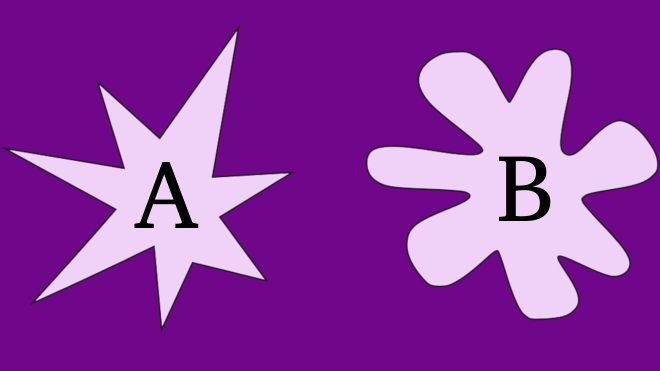 |
Tabela
| niveis | freq | freq_r | freq_ac |
|---|---|---|---|
| Bouba/Kiki | 64 | 0.255 | 0.255 |
| Kiki/Bouba | 187 | 0.745 | 1 |
Gráfico
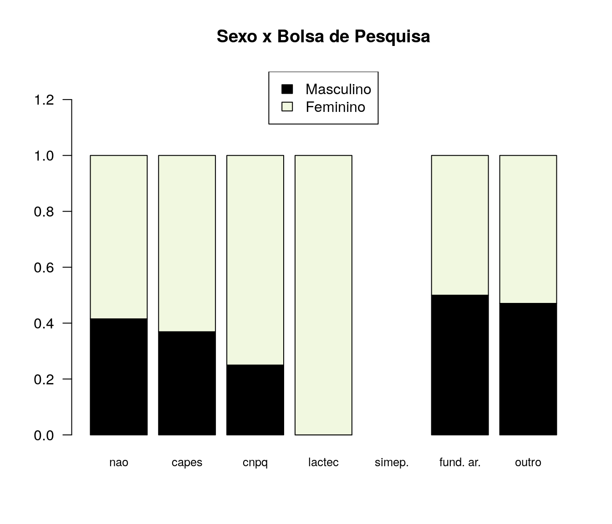
Análise bivariada
Análises bivariadas tem como objetivo buscar compreender como uma variável se comporta na presença de outra. Isto é, neste tipo de análise buscamos verificar se há relação entre duas variáveis.
Entre duas variáveis qualitativas
Sexo x Bolsa de estudo
Gráfico 1
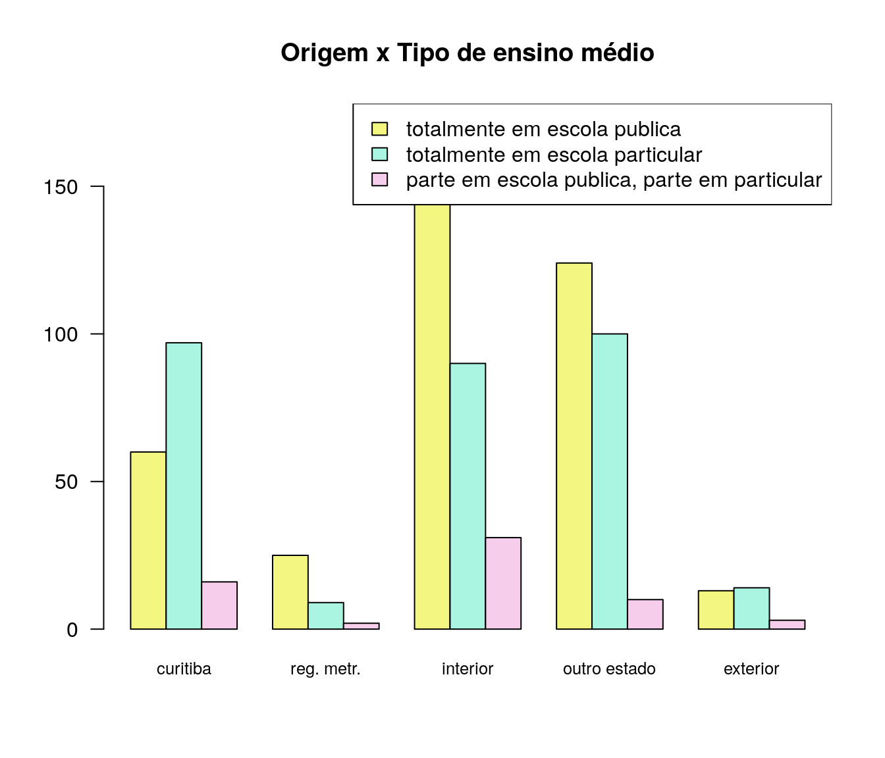
Gráfico 2

Gráfico 3

Origem x Tipo de ensino médio
Gráfico 1

Gráfico 2
Gráfico 3

Entre uma variável qualitativa e uma quantitativa
Sexo x Numero de artigos
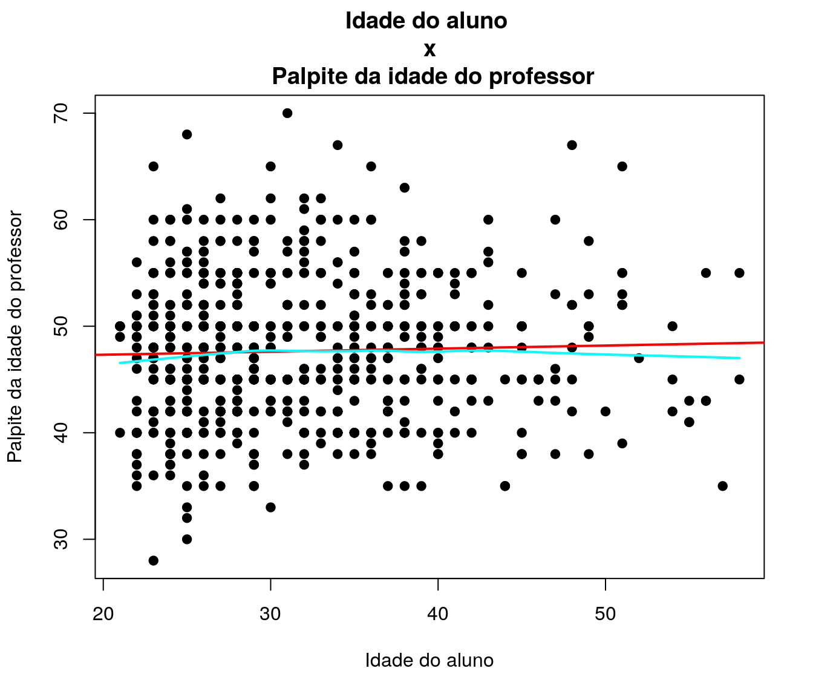
Ensino médio x Idade
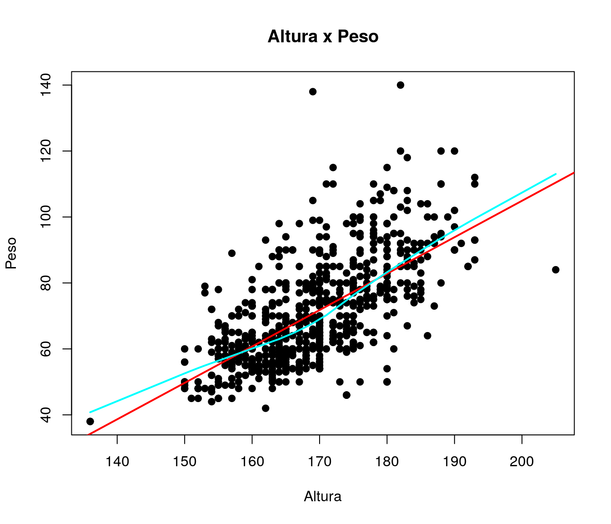
Origem x Altura

Entre duas quantitativas
Idade do professor x Idade dos alunos
Peso x Altura
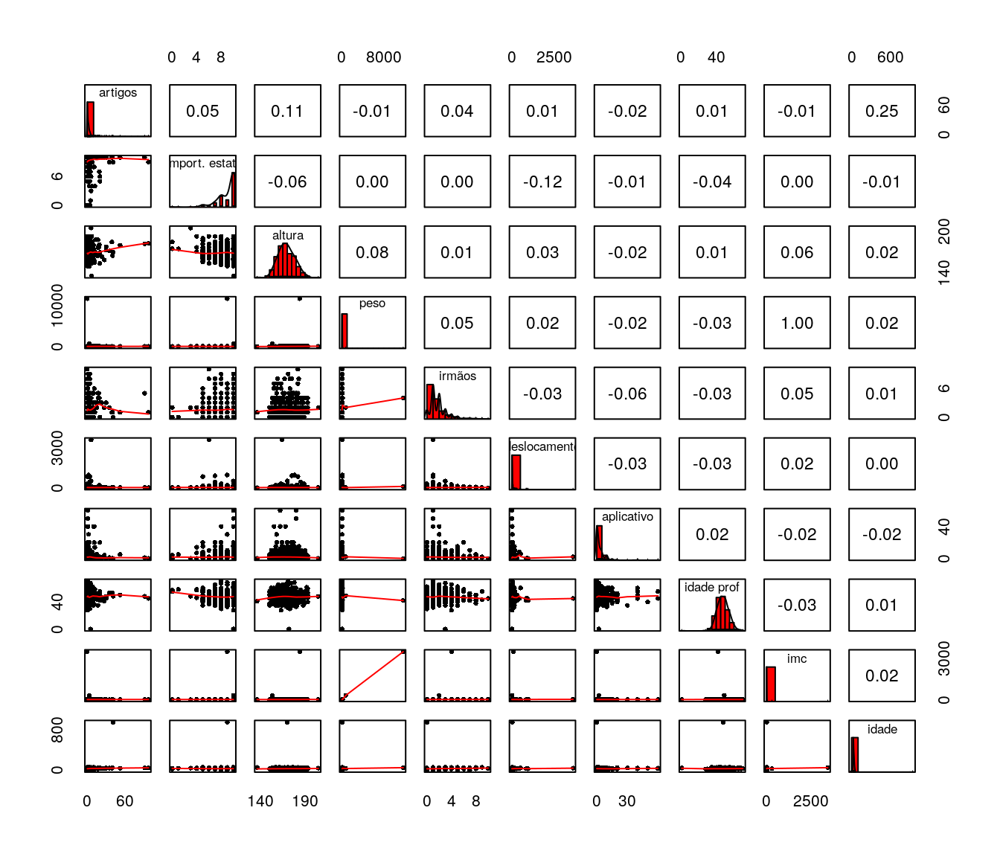
Tempo até a universidade x Uso de aplicativos de mobilidade
Correlação
Gráfico 1

|
|

|
|
Gráfico 2
|
|
|
|
|